| 本当は恐い！世界名作童話 禁断のメッセージ 禁断のおとぎ話シリーズ (竹書房文庫) | |
| Unknown | |
| (2015) | |
この作品は縦書きでレイアウトされています。
また、ご覧になる機種により、表示の差異が認められることがあります。
一部の漢字が簡略字で表示されていることがあります。
はじめに
世界中に伝えられている昔話や童話、おとぎ話には、驚くほど類似性を発見することができる。これまでにも各国各地の神話や伝説・伝承などに類似の指摘がなされ、その多くは同一の歴史的事実を原点としているという意見すらあるが、それと同様のことが、昔話や童話についてもいえるのだ。
たとえば、継子いじめの話である。日頃からさまざまないじめにあっていた継子は、結末では、幸福を得ることになり、逆に継母やその実子は、手痛い報いをうけるというのが代表的なストーリーだ。こうした物語は、洋の東西を問わず、共通してあげられるものであり、古い時代から、継子いじめに対する人々の関心がいかに深いかがわかるだろう。
そして、とくに最近になって大きくクローズアップされてきたのが、多くの昔話や童話に共通して見られる「恐怖」や「残酷」、「性愛」といったテーマである。
実は、私たちが親しんできた童話には、「強姦」「幼児虐待」「殺人」「盗み」「人肉食」といったテーマが内在している。今日でこそ〝童話＝子ども向け〟として定義づけられているが、本来のテーマというのはそういうものだったというわけである。
事実、『シンデレラ』『白雪姫』『赤ずきん』など、世界的に有名なおとぎ話も、そのオリジナル版は相当に恐ろしい物語だった。
しかし、ときがたつにつれ、物語の中の恐怖、残酷、性愛といった過激なテーマはそぎ落とされ、あるいは別な表現を与えられ、原初の物語とは異なる姿へと変わっていく。そうやって、読後感のよい、やさしいストーリーとして今日の姿となった。
これこそが、真実なのである。
昔話や童話は「人間ドラマの縮図」「人生の真相」ともいわれている。本書では、長く伝えられてきた昔話や童話の中から、そうしたテーマ性のあるものを選りすぐり、その中に潜んでいる原作本来のニュアンスの復元や、意外な事情の描写を試みた。
物語の世界を楽しみながら、その裏の人間ドラマを読み取っていただければ幸いである。
深層心理研究会
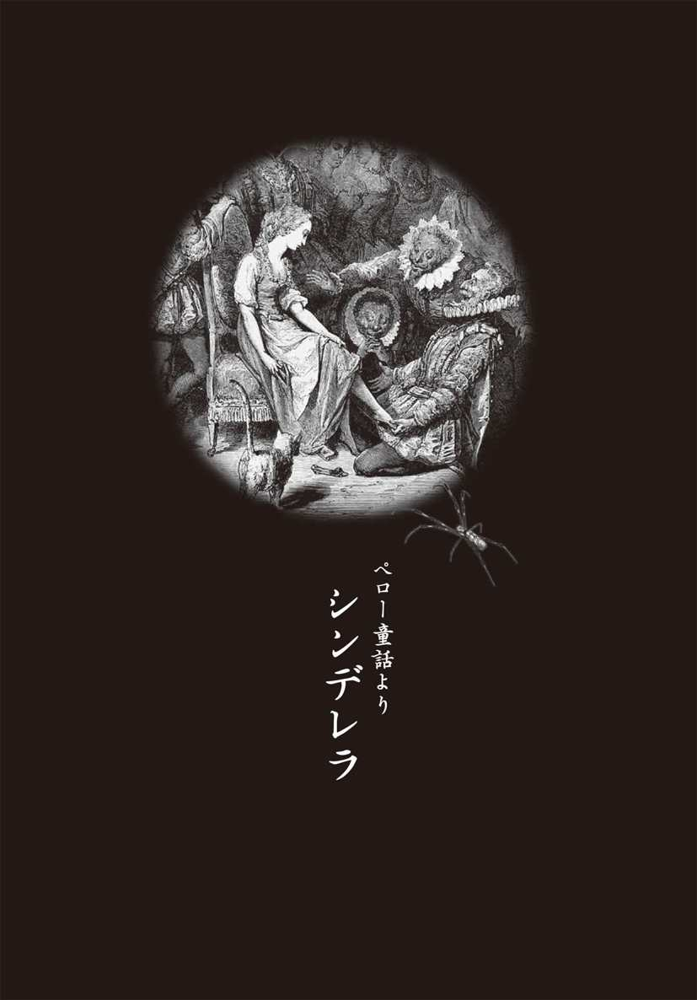
灰だらけの日々
昔むかし、シンデレラという美しくやさしい娘が、大きなお屋敷に住んでいた。彼女の父親は貴族の生まれで、大層なお金持ち。幼いころから不自由なく暮らしていたが、ほんとうの母親が亡くなり、父親が後妻を迎え、彼女の運命は大きく狂い始める。
二人の連れ子を連れた継母が来てからというもの、シンデレラの扱いは召使い同然。毎日毎日、朝早くから夜遅くまで働かされるのだ。連れ子の姉も母親譲りで、顔はきれいだが、性格はひどく意地悪。何かにつけて、シンデレラにいじわるをしてくる。
「シンデレラ、かまどの灰が汚れているよ。早くきれいにおし」
ようやく仕事が終わったかと思うと、掃除したばかりの灰に豆を振り入れる。そして、疲れはててベッドに入ろうとすると、灰を捨てる場所で寝かされる。
「今日から、お前のベッドはかまどの横さ」
おかげでシンデレラはいつも灰だらけ。それを面白がって、姉たちはシンデレラのことを〝灰かぶり〟と呼ぶ始末だ。
「灰かぶり、料理はまだなの？」
「灰かぶり、水をくんでおいで」
それでもシンデレラはやさしい心をなくさなかった。ある日、町に出かける父親が、シンデレラたちにみやげの品を尋ねてきた。
「今日は町に出かけてくる。おみやげは何がいいかい？」
継母と連れ子たちは、とびきり上等のドレスをおねだりした。
「シンデレラ、お前は何が望みなのかい？」
「私は、町からの帰り道、お父さまがきれいだなと思った木の小枝を折ってきてほしいわ」
きれいなドレスを買ってもらっても、どうせ灰かぶりになってしまうのだから。シンデレラは心の中でそうつぶやいた。
おみやげは、はしばみの小枝だった。シンデレラはそれを母親のお墓に植えると、母親に対するように話しかけた。それからというもの、夕方に水をあげにいくのが日課になり、いつしか木の枝と話をするのが一日の楽しみになっていく。木の枝はまるで母親のようで、いつもやさしく話を聞いてくれるのだ。
そんな、ある日のことだ。お城の王子が、花嫁選びのための大きなパーティを開くことになった。そこには国中の貴族の娘という娘が招かれ、いちばん美しい娘が王子の妃に選ばれるのだという。
届いた招待状は三通。二人の義姉は、母親が新しい父親と結婚したお陰でパーティに招かれることになって有頂天。やれ、靴を磨け、コルセットのひもを固くしておくように、ドレスのシワを伸ばしておくように、とあれこれ用事をシンデレラにいいつけてくる。
義姉たちの用事をしながら、シンデレラは継母に尋ねた。
「招待状は三通。私もパーティに行けるのですよね」
すると、継母は嘲るように笑った。
「たしかに招待状はきたけれど、集まるのは貴族の娘だけ。お前は灰かぶりじゃないか。第一、何を着ていくつもりかい。そんな恰好じゃ、お父さまの顔つぶしだよ」
そういうと、着飾った二人の姉を連れて、さっさと出かけていってしまった。
悲しくなったシンデレラは、母の墓で泣きくずれるしかない。すると、ハシバミの枝が大きく揺れ、虹のようにきれいなドレスや透き通ったガラスの靴が落ちてくるではないか。ふと見れば、目の前に豪華な馬車が止まっている。
「シンデレラや」
どこからか、母のやさしい声が聞こえてくる。
「馬車に乗って、パーティに出かけておいで。楽しんでくるんだよ。でも、ひとつだけ約束しておくれ。十二時の鐘が鳴るまでに、必ずここに帰ってくると」
ガラスの靴の持ち主は誰なのか
王子はさっきから、うんざりしていた。ほとんどの娘と踊ってみたが、どの娘もどの娘も、きれいなのはドレスだけ。踊りも下手なら、話にも品がない。
（こんな娘たちと結婚するくらいなら、一生独身でもいい）
王子が心の底でそう思いかけたときだ。城の門の前に豪華な馬車が止まり、虹のように美しいドレスの娘が降り立った。その娘はまるで月の光のように美しく、王子は一目で恋に落ちた。
王子は進み出ると、大きく腰を折って礼をし、娘を迎え入れる。手をとって踊りだすと、なんとも軽やかにステップでそれに応えてくる。話しかければ、その声は金の鈴をころがすように上品で愛らしい。
「私の妻になってください」
王子はすぐさまプロポーズ。この娘以外の女性との結婚など考えられない。もはや、王子の目には、この娘しか見えていないようだった。
娘は少し驚いた様子だったが、やがて微笑みながら顔をあげた。そして、そのかわいらしいくちびるが動こうとする瞬間、娘はビクッと体を震わせた。
お城の塔で、十二時を告げる鐘が鳴り始めたのだ。すると、娘は王子の腕からするりと抜けだして、逃げるようにお城の階段をかけ降りていってしまった。
王子はあわてて、追いかける。
「せめて名前だけでも教えてください」
娘の姿は夜露のように消え、王子の声だけがむなしく響いた。
だが、娘は幻でも夢でもない。その証拠に、キラキラと輝くガラスの靴が片方だけ落ちていたのだから。大階段でそれを見つけた王子は、拾いあげるとしげしげとながめた。それは小さな靴で、娘の足がどれほど繊細で、かわいらしいかが伝わってきた。
王子はガラスの靴をかかげると、こう宣言した。
「この靴がぴたりと合う娘。その娘こそ、私の妻となる女性だ」
こうして、ガラスの靴がぴたりとあう娘探しがはじまり、家来は国中の貴族の家を回るようになる。ガラスの靴を先頭に、家来たちが付き従う一行が、貴族の家を一軒一軒、訪ね歩いた。
「この靴をはいてください」
しかし、ガラスの靴はあまりに細く、小さく、どの娘の足にも合うことはなかった。
ガラスの靴に血がにじむ
やがて、ガラスの靴の行列はシンデレラの家にもやってきた。継母は、とっておきの作り笑顔で一行を迎え入れたが、ガラスの靴を見たとたん、表情を大きく曇らせた。二人の娘には、明らかに小さすぎるとわかったからだ。
継母は二人の娘を物陰に呼ぶと、こういいつけた。
「なにがなんでも、あの靴をはくんだよ。そうすれば、お前は王子さまと結婚できる。一生、お城でぜいたくに暮らせるのだから」
姉娘はガラスの靴を受け取ると、自分の部屋で、そっとはいてみることにした。すると、爪先はなんとか入るが、かかとがはみ出してしまうのだ。
「お母さま、どうしてもダメ。かかとがはみ出してしまうの」
すると、継母は恐ろしい顔でこういった。
「かかとなんか切り落としておしまい。すぐに治るさ」
姉娘は決心して、ナイフでかかとを少し切り落とそうとした。だが、ナイフをもつ手が震え、何度も骨を傷つけてしまい、脳天まで響くような痛みに襲われた。それでも、妃になるという執念が勝ち、ついにかかとの肉を切り落とすと、足を無理やりねじこんだ。
ガラスの靴に足が入った！ 家来たちは喜び勇んで、姉娘をお城に連れていった。その途中にも姉娘はあまりの痛さに油汗を浮かべ、何度も気を失いかけていた。それでも、王子の前に出ると、歯をくいしばり、笑顔を浮かべてみせたのだ。
そのとき、お城の鐘楼に止まっていた鳩が突然歌い出した。
「クックック、クックック。靴を見てごらん、血だらけさ。靴が小さすぎるのさ。ほんとうの花嫁はほかにいる」
王子があわてて娘の足元を見ると、靴の中は血の海。こうして姉娘の企みは失敗に終わったのだ。それでも、妹娘がいる。継母はあきらめなかった。
だが、妹娘は足の指がどうしてもはみ出してしまう。それならば、切っておしまい、と継母は悪知恵をつけた。妹娘は足の指をころりと切り落とし、激痛をこらえて靴をはいてみせた。
家来が妹娘を連れてお城に向かうと、今度は城門をくぐったところで、鳩が鳴きだした。
「クックック、クックック。靴を見てごらん、血だらけさ。靴が小さすぎるのさ。ほんとうの花嫁はほかにいるのさ」
見れば、足からにじみ出た血が真っ白な靴下まで、真っ赤に染めている。
「この娘ではない」
王子は、ふたたび大きくかぶりを振った。
花嫁の名は灰かぶり
もう、これで貴族の娘は終わり。ガラスの靴をはいたあの夜の娘はやはり夢だったのかもしれない。王子があきらめようとしたとき、お城の庭木にとまった鳩が鳴いた。
「クックック、クックック。ガラスの靴にぴたりと合う娘、ほんとうの花嫁はちゃんといる。その娘の名は......」
最後のところだけがうまく聞き取れなかったが、王子はもう一度だけ探してみることにした。かくして、ガラスの靴の一行が、またしても国中を回ることになったわけだ。
やがて、国中の娘のいる家を回った一行が、シンデレラの家にもう一度やってきた。そして、王子を謀った二人の継姉には見向きもせずに、家来の者はこういった。
「こちらには三通、招待状をお出ししておりますが」
「はあ、もう一人、娘いるのですが、とても汚い娘で、人前に出したことはありません」
継母はそういってごまかしたが、ここがいちばん最後の家。ここにいなければ、ガラスの靴の持ち主は永遠に見つからない。家来はそう思って、継母に命じた。
「一応、試すだけ試すように」
しかたなく継母が、シンデレラに声をかける。
「灰かぶりや、灰かぶり。こっちへ出ておいで」
みると、灰まみれのほんとうに汚い娘が姿をみせた。こんな娘が、貴族の娘だけが集まるパーティにくるわけがあるまい。家来の誰もがそう思った。
ところが、シンデレラが身をかがめて靴をはいてみると、驚いたことにガラスの靴は、指先からかかとまで、ピッタリ合うではないか。
家来たちは大喜びで、シンデレラをお城に連れていこうとする。と、突然、継母が態度を変えた。シンデレラを呼び止めると、きれいなドレスを着せてやったのだ。
「私は、この子の母親ですから」
そういうと、自分も一緒に一緒にお城に行こうするではないか。もちろん、そんなことが許されるはずもない。家来は継母を押し退けると、シンデレラだけを連れて帰ったのである。
ころげ落ちた継姉の目玉
王子はシンデレラを一目見て、彼女こそ、探し求めていた娘だとすぐに理解した。見れば、ガラスの靴はその娘の足の一部のようにピッタリ。もちろん、かかとからも指先からも一滴の血さえ流れていなかった。
こうしてシンデレラは王子の花嫁と決まり、盛大な結婚式が挙げられることになる。
シンデレラが母親の墓に報告に行くと、ハシバミの枝がもう一度大きく揺れた。すると、まるで天使の羽でこしらえたような、美しいウエディングドレスと靴が落ちてきた。ガラスの靴と同じように小さく細い靴は、今度は銀でできていて、真珠の飾りもついていた。
いよいよ式の当日、シンデレラの家に迎えの馬車がやってきた。シンデレラは美しいウエディングドレスに、銀の靴をはいて戸口に立つ。すると、二人の継姉が右と左にくっついて離れようとしない。
実は、継母が娘たちにこう言い聞かせていたのである。
「いいかい、お前たちは王子の花嫁の姉なのだからね。いつも側にいて、おこぼれにあずかるのだよ」
二人の姉は、教会の祭壇で、王子とシンデレラが愛の口づけをかわす間さえ、離れることはなかった。結婚の誓いのときには、姉たちまでも大きくうなずく始末だ。
やがて、式が終わり、教会の扉が開く。そして、歓喜のライスシャワーの中を、王子とシンデレラが手に手をとって姿を現した。
このとき、継姉たちに悲劇が訪れる。あまりにも側にいたので、ライスシャワーの米が目に飛び込んできたのだ。その瞬間、教会の屋根に止まっていた鳩が、米つぶ目がけて飛んできた。無数の鳩は継姉たちの目をつつき回し、ついに二人の目玉はころころと教会の階段を転がり落ちていった。
目玉がなくなった二人の目元には大きな穴があき、そこから血の涙が幾重にも流れ落ちた。ころころ、ころころ、転がっていった目玉の行方はわからない。
二人の継姉は、幸せのおこぼれにあずかるどころか、光を感じることも花を見ることもできなくなってしまったのだった。
灰かぶりの本性
ところで、誰も知らない秘密の話ある。
結婚式を終えた夜、シンデレラは王子のベッドに行くのが少しだけ遅れてしまった。なぜなら、銀の靴の先にほんの少し、血がついたので、一生懸命、その血を拭き取っていたからだ。意地悪な姉たちの目玉がころころ転がるのを見たシンデレラは、ウエディングドレスにかくれたつま先で、目玉を思いきり蹴飛ばしていたのだ。
（いい気味だわ。さんざん意地悪をしてきたんだもの。あんな姉さんたちは、暗黒の中で一生暮らせばいいのだわ。どうか、目玉が見つかりませんように......）
シンデレラは、心の中で姉たちの不幸をあざけ笑っていた。
そんな非情さはおくびにも出さず、王子のベッドにすべりこんだシンデレラは、なにくわぬ顔をして初夜を迎えたのだ。
小さな足の持ち主は、男にとってはたまらぬ魅力。王子は理想の花嫁を得て、朝まで一睡もせずに交わりつづけたとさ。
■『シンデレラ』の背景を読み解く
中世に流行した継子いじめの物語
シャルル・ペローや『グリム童話』として知られる『シンデレラ』の原型は十六世紀のドイツ文学とされている。しかし、おそらくはずっと昔のもので、オリエントで原初の『灰かぶり』が形づくられたと考えられる。それがヨーロッパまで伝わり、とくに中世では類似の話が無数に語られていたのだ。
なぜ、中世に〝継母の継子いじめ〟の物語がもてはやされたかといえば、実際に、継母が継子を育てるケースが目についたからである。当時、夫婦の平均結婚年数は十年前後で、既婚男性の四人に一人は子どもの成育以前に妻を亡くして後妻を迎えた。だが、その後妻にも子どもがいるのが一般的だったので、家庭内に継親と継子が存在した。そして、その後もなお夫婦のどちらかが死ぬ場合が多く、いっそう複雑な関係になっていたのだった。
この若死にの原因は、苛酷な労働、栄養不足、拙劣な生活環境、医学の未発達などによる健康維持のむずかしさにあった。だが、そればかりではない。生き方の手引きを祈祷や呪いに求め、病気やケガもそれで治そうとしていたことも原因のひとつと考えられる。継子いじめも、呪い師に示唆された例が多かった。『灰かぶり』でも、継母が呪い師に「けっして家から出さぬように」と指示されたので、台所のかまどへ追いやり、ススだらけに汚しておいたと考えられている。
この『灰かぶり』にシンデレラの名を与え、それまで金の靴（古くは毛皮靴）だったのをガラスの靴に仕立てたのが、十七世紀のフランスのペローだったわけだ。
隠れた性交と継母殺し
継母と異母姉のいじめは、灰の中の豆拾いだけにとどまらない。水運び、火起こし、食事の支度、洗濯と、あらゆる家事を早朝から真夜中まで一人でこなし、くたくたに疲れても、かまどの灰の中で眠れるのは、わずか四時間ほど。二人の姉は嘲ったり、笑ったりと、心痛を与えどおしだった。
さらに、スコットランドの異本『ラッシン・コーティ』によれば、藺草のチクチクする服を着せられ、魔法をかなえてくれる子牛を継母に食べられてしまうなど、限りない艱難辛苦をなめさせられるのである。
もっと古い十六世紀イタリアのバジレが著わした『五日物語（ペンタメローネ）』では、薄幸の少女が、意地悪な継母を殺そうと企み、その首をへし折ってしまう。だが、父親はさらに輪をかけて意地の悪い女と再々婚し、六人の連れ子の性悪娘たちが、少女を一日中こきつかっていじめるのである。
これらの古本や異本も、舞踏会や祭で王子（あるいは王や富豪）と出会い、片方の靴を忘れ、これに足が合って結婚に至るのが結末になっている。
ところで、中世ヨーロッパでは、「片靴の女」というのは娼婦を指す隠語だった。それは、靴そのものが女性の性器の象徴だったからで、そこに入る足は男性性器（ペニス）にほかならない。それがぴったり合うというのは、とりもなおさず「満ち足りたセックス」を意味する。つまり、灰かぶりは奔放な娘で、王子と性交があった。彼女と王子は舞踏会が開かれるより前から、隠れて密会していたとも考えられるのだ。
靴が合わない継姉たちは足を切りつめて、血だらけになりながら無理やり押し込もうとするが、これも性交に置き換えてみると、女の執念の恐ろしさが倍増するだろう。
ペローは、この靴＝性の合わない姉たちが玉の輿をあきらめて、シンデレラがそれを許すという結末にしている。だが、グリムはもっと残酷なラスト・シーンを用意した。
なんと、灰かぶりの結婚式に列席した継姉たちが、襲ってきた鳩に両眼をえぐり出されるというのだ。目玉をえぐり出されても〝幸運のおこぼれ〟を得ようとする継姉たちも尋常ではないが、それを平然と見つめる灰かぶりの冷酷さには、戦慄さえおぼえる。
むしろ、真の冷酷さは灰かぶりの本性のうちに隠されていたのだ。こうしてみると、継母や継姉たちのいじめがかわいく思えてくる。隠れた性交といい、継母殺し（『五日物語』）といい、灰かぶりの性情は尋常ではない。だが、これが中世の継子たちの心中であり、その隠れた狂気は、しばしば実際に行われていた。
いじめる側といじめられる側のどちらが暗く澱んだ心をもっているのか？ それは現代にも通じる、重く、そして解くことのむずかしいテーマである。
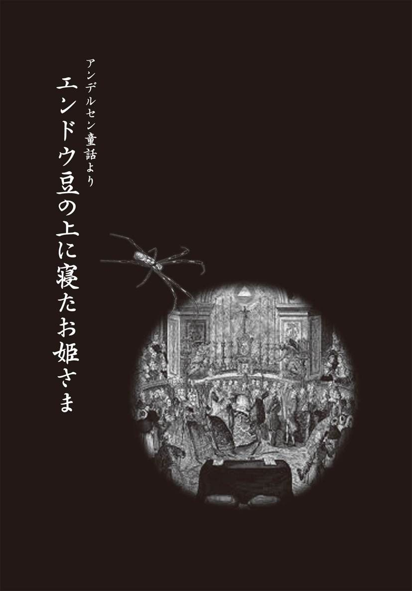
ずぶ濡れの姫君
その娘は、どこからともなく、急にあらわれた。それも、恐ろしいほどの嵐の夜に。
ここはドナウ王国の都。ゆったりと広がる丘陵の間を美しい川が流れ、ブドウと小麦の実り豊かな国として昔から有名だった。
その都の中心に位置するのが王城である。暮れかけまではおだやかだった王城の空が、急に一面の黒雲におおわれて、ひどい天気となった。激しく稲妻が光り、雷鳴がとどろき、雨は恐ろしい勢いで降りつけてきた。
「なんというひどい嵐じゃ」
「城下の町に水が出ねばよいが」
衛兵たちは心配顔で空を見上げた。
そのとき、城の門を叩く者がいた。門衛が開けると、そこには二人の女が立っていた。二人とも、髪もドレスも雨でびしょびしょに濡れており、その雨水がだらだらと流れ落ちている。靴の先からも雨水があふれ出していた。
若い娘の方が、震えながら懇願してくる。
「わたくしは、七つほど国をへだてた、遠い国の姫でございます。この者は侍女です」
「その姫さまがどうしてここへ？」
門衛がいぶかしげな表情を見せると、娘はすがるように言葉をつづけた。
「ある事情で国を追われてしまい、いまは流浪の身なのです。その旅の途中で、供の者たちとはぐれてしまって......。おまけにひどい雨にあって困っております」
「それはそれは......。主に聞いてまいりますので、門の中でお待ちください」
そういって、門衛は城の奥に消えた。しばらくすると、城の妃があらわれた。
「それは難儀なことでしょう。お前たち、この方たちを城の中へお通しして、着替えの服を差しあげるように」
そういいながら、妃は娘の様子をじっくりと観察していた。見れば、なかなかの美人で、胸も腰もよく発達している。いかにも、立派な赤ん坊を産みそうな女っぷりだ。
やがて、その姫と侍女はきれいな服を与えられると、温かい食事をふるまわれた。
「ほんとうに、ご親切にありがとうございます」
「いいえ、困ったときはお互いさまですよ。それより、今日はお疲れになったでしょう。もうおやすみになってはいかがでしょう」
「ありがとうございます」
「さっそく、ベッドの用意をさせましょう」
妃は来客用の寝室に行くと、侍女たちにベッドの上のふとんをすべて取り払うように命じる。それから、ベッドの上に小さなえんどう豆を一粒おいた。そして、その上にマットを何枚も何枚も重ねさせ、その上に、さらに羽根ぶとんを何枚も何枚も重ねさせた。
「これで準備はできた。さて、あの姫はどんなものか」
妃はつぶやいた。
「さあ、ベッドのご用意ができました。きっと寝心地がよいはずです。ゆっくりとおやすみください」
「ありがとうございます」
こうして、姫はそこで眠ることになったのである。
貴人の姫は敏感だ
妃が哀れな姫君に親切にするのには、理由があった。実は、この国には、ひとりの王子がいた。なかなかに姿もよく、学識にもすぐれていたため、近隣の国々で娘をもつ領主たちは、さかんに宴を開いては、王子を招いた。宴を口実に娘を王子に引き合わせ、縁組みさせようと企んでいたのである。
だが王子は、理想がことさら高かった。身も心もほんとうの姫らしい姫でなければ、がまんができなかったのだ。顔かたちだけでなく、気だてもよく、それでいて体も美しく成熟し、女として魅力的であってほしい......。
しかし、そんなすべてを満たす理想の姫が見つかるわけもない。みんな、王子の思っている理想の姫とは、どこかがちがっていた。「お姫さま」と呼ばれるほどの令嬢はたくさんいたが、顔がよければ体が思わしくなく、見事な肉体の姫であれば頭が弱い、どこかしら気に入らないところが目についてしまうのだった。
やがて、王子はくたびれはて、すっかり姫探しをあきらめてしまった。いまでは、生涯独身であるにちがいないと、悲嘆にくれていたのだ。そして、そんな王子の姿を見て、妃も心を痛めていた......。実は、妃も同じように、完全な姫を求めていたからである。
そこで妃は王子にいった。
「すべてを求めるのは無理じゃ。顔やかたちや、それに頭もそこそこでよいではないか。それより、そなたの妻として大切なのは、よい子を生めるかどうかじゃ」
「どういうことですか、母上」
「つまり、この国の姫にふさわしい娘は、すぐれた性感の持ち主であってほしいということじゃ。古来より、貴人の姫は、それはそれは敏感だというではないか」
「なるほど、よくわかります」
そこで妃は、近隣の有名な家柄の姫を城に招いては、あることを試みるようにしたのである。その試みとは、姫たちの感覚の鋭さを確かめるものだった......。
「高貴な家の姫は、毛先ほどのものが触れても、敏感に感じるという。それほどの鋭敏な感覚の持ち主でなければ、王子の妻としてはふさわしくないのです。それこそ、〝本物の姫〟なのです。現に、若いころの私がそうだったのですから」
妃は、城に招いた姫を、仕掛けを施したベッドに寝かせ、朝になると様子を見た。
「お目覚めの気分はいかが」
すると、どの姫もにこやかに、こう答えた。
「はい、ほんとうに心地よく眠れました。よいベッドですこと」
それを聞くと、妃は内心つぶやいた。
（気持ちいいはずがあるものか。ほんとうに気高い姫なら、さぞかし寝苦しかったはずだ）
ところが、次から次と何人の姫を招いても、その口から出るのは、
「ほんとうに心地よく眠れました。よい朝ですこと」
という言葉ばかり。
さすがの妃も、〝本物の姫〟探しをすっかりあきらめかけていた。そんなときに、ずぶぬれになった姫が城へやってきたのだった。
魔物に襲われる夢
一番鳥が鳴き、新しい朝が訪れた。
妃はさっそく姫の寝室を訪ねると、「どうでした、よく眠れましたか」と尋ねた。
「いいえ、それがとても寝苦しくて、あまりよく眠れませんでした。一晩中、まんじりともしませんでした。妙な夢を......いえ、恐ろしい夢を見たのです。オオカミがあらわれて、私の顔をなめるのです。それで寝苦しくて。それというのも、なぜかベッドの下に何かがあったらしく、体には赤や青のあざができてしまいました」
妃はびっくりした。
もしかすると、この姫は本物かもしれない。なにしろマットと羽根ぶとんを、一枚二枚三枚四枚......と重ねたのに、その下に置いた小さなえんどう豆の粒を感じたのだから。〝本物の姫〟でなければ、そこまでは感覚が発達していないだろう。
（私が若いころも、これくらい敏感だったものよ）
しかし、妃は、それだけではまだまだ満足はしなかった。
（もう一晩、あの娘を試してみなければ）
そこで、今度は麦の粒をベッドに置き、その上にマットを何枚も何枚も重ねさせ、さらに、羽根ぶとんを何枚も何枚も重ねさせた。
（これで、あの娘がどんな様子を見せるか、見ものさ。ふふふ）
心の中でつぶやきながら、薄笑いを浮かべた。
こうして妃は、翌朝になるのを待ちかねて、姫の寝室を訪れた。
「どうです、よく眠れましたか」
「はい、と申し上げたいのですけれど、なんだか体の下の方がゴロゴロとして、いやな夢ばかり見ておりました。熊があらわれて、私の胸をなめるのです。それで寝苦しくて」
「おやおや」
大げさに驚きながら、妃は、この姫こそ〝本物の姫〟かもしれないと思い始めた。
（しかし、念には念を入れよというではないか。もう一晩だけ、試してみることにしよう）
その夜、妃は侍女に命じて、姫のベッドの上に細くて小さなワラを一本置かせ、その上にマットを何枚も何枚も重ねさせ、さらに羽根ぶとんをやはり何枚も何枚も重ねさせた。
（さあ、これが最後。〝本物の姫〟かどうか、明日になればわかるだろう）
妃は、それを楽しみにしながら眠った。そして、朝になるのを待ちかねたように、姫の部屋の扉を叩いた。
「昨夜はいかがでしたか。ベッドには気をつけさせましたから、ぐっすりとおやすみになれたでしょう」
「それが、私ったら、どうしたことでしょうか。そんなに気をつかっていただいたというのに、それでも不気味な夢を見て......。魔物に襲われて、私の体中をなめられたのです。それで寝苦しくて」
「まあ、それはなんとしたこと......」
そういいながら、妃の顔はほころんでいた。
（これで、やっと〝本物の姫〟ということがわかった。この国も、これほどの姫を得たら、大いに栄えることでしょう）
妃は、王に向かって進言した。
「どうぞ、あの姫を王子の妻にお迎えくださるように」
王はこれを快諾し、かくして、王子と姫との婚礼が行われることになった。
ずぶ濡れでこの城に逃げ延びてきた姫が、この国の王子の妻として、そして未来の妃の座をとうとう射止めたのである。
偽者の姫君
婚礼の前夜、姫と侍女は、こんな会話を交わしていた。
「どうやら、すっかり騙し通せたようですね、お姫さま。偽者の姫ということもばれずにすんだようですし」
「ほんとうに。でも、お前が、ここの城主が王子の妻を探していることや、ベッドの豆の仕掛けのことを聞き込んでくれたおかげで、こんな芝居もやれたのさ」
「ふっふっふ。これからは思うままのぜいたくができるというもの。姫さまも私も、苦労のかいがありました、ふっふ」
「あたしたちみたいな貧乏人は、こうやって人を騙しでもしないかぎり、一生うだつがあがらないからね」
「姫さまがほんとうは羊飼いの娘で、私が洗濯女だったなんて、誰も知りませんから」
「それにしても、あれほど毎晩のように、私の部屋に王さまがいらっしゃるとは......。まったく、王さまときたら、私の体を何度も求めてきて......」
なんと、この娘は、遠い国の姫でもなんでもなかったのだ。〝本物の姫〟探しに明け暮れる妃と王子の話を聞きつけて、一芝居打ったのだ。
もっとも、豆や麦の種で寝苦しいというのは芝居だったが、熊や魔物があらわれたというのは、まんざら噓でもないらしい。どうやら、色好みの王が毎晩忍んできていたのだから。王が結婚を許したのは、こんな理由もあったのだ。
げに恐ろしきは、女なり。
■『エンドウ豆の上に寝たお姫さま』の背景を読み解く
批判されたおとぎ話
『エンドウ豆の上に寝たお姫さま』は、アンデルセンのはじめての童話集である『子どものための童話集 第一冊』に収録されている物語だ。しかし、よい評価を得ることができなかったようで、「品がないばかりでなく、高貴な女性はすべてこのように過敏であるという誤った印象を子どもに与えてしまう」と批判を受けている。
ちなみに、アンデルセンはこの話を子どものころに「糸紡ぎ部屋の中やホップ摘みのときに聞かされたもの」といっている。そして、そのルーツはスウェーデンの民話にあるといわれている。
だが、この話は、インド古代の説話集『カター・サリット・サーガラ』のバラモン三兄弟の話によく似ているのだ。それは、七枚のふとんを敷いて寝た末弟が苦痛に目覚めると、寝台に一本の髪の毛が落ちていたというものだ。
このインドの説話が中世以前にペルシア、アラビアを経てヨーロッパに伝わり、その土地の色に染められながら民話として語り継がれたのではないだろうか。もしかしたら、アンデルセンが子どものころに聞いた民話もこの説話がルーツであり、のちにアレンジして『エンドウ豆の上に寝たお姫さま』として童話化したのかもしれない。
人目にさらされてのセックス
ここで、物語の舞台となったヨーロッパの中世のナイトライフの話をしよう。当時、ほとんどの家庭では、間取りといっても大きな部屋がひとつだけ。そこで仕事をし、人を応接し、料理をつくって食事をし、そして眠っていた。
もちろん、王や貴族の城館には幾つもの部屋があったが、寝るときはほかの者と一緒だったのだ。十三世紀フランスの聖王ルイでさえ、二階の自分の部屋で料理作り以外のすべてをこなし、寝るときは数人の近習の騎士たちとベッドを共にしたものだった。
この部屋の直下には王妃の部屋があり、秘密の階段で通じていた。そこで、性交の際はこの階段を降りていくのだが、妃もまた日常は自分の部屋で過ごし、数人の侍女と同じベッドで寝ていた。そう、王と妃はいつも人目にさらされたセックスをしていたのだ。
床には、冬はワラ、夏は燈心草、オランダアヤメ、香りのいいハッカ草などを敷いたものだ。王宮でもワラや夏草を敷くのが普通で、絨毯はめったに用いられなかった。現代でもヨーロッパでフローリングの床に生花を撒くのは、この香り付けの風習からである。
ところで、この話の中で問題になるベッドの敷き布団だが、これは、ふつうはワラを詰めたマットレスが一枚だけ。枕も同じくワラ詰め。シーツは麻かリンネルだが、貧乏人や修道士はシーツなしですませた。掛け布団も貧乏人はサージの布が一枚だけ。したがって、服を着たままか、上衣だけを脱いで寝ていた。庶民でも夏用はサージだけ。冬用はこれに狐や野ウサギの毛皮で裏打ちした布団が使われたのである。
羽毛布団を使うのは王族くらいで、当時の諺で「羽毛のベッドで寝る」といえば、最上のぜいたくを表した。それを何十枚も重ねたベッドに寝たというのだから、この話のお姫さまは、とりわけ特別なもてなしを受けたわけだ。
赤や青のあざの謎
当時は、修道士を除いては、誰もが真っ裸で寝ていた。身につけていたのは小さなナイトキャップだけだった。まず、ベッドへ潜り込んでから、肌着（シュミーズ）をもぞもぞと脱いで、枕元へ放り出した。男も女も、下着は身につけていない。そのまま家族一同が、ひとつのベッドで頭を並べて寝ていたのである。
真っ暗闇の暖かい布団の中で、真っ裸の体が触れれば、ついつい劣情をもよおす。夫婦が交わり始めれば、横の息子や娘も真似をしたくなるだろう。そうして父と娘、母と息子、兄と妹の近親相姦が当たり前になっていたのだ。
王宮でもこれは同様だった。王が侍女と、王妃が騎士と、近習、小姓が侍女とひとつのベッドの中で隣り合って性交を重ねるという具合だった。
さて、そうすると、この話の姫の体に翌朝、赤や青のあざができていたというのも、どうやらマットの下に置かれた豆のせいではなくなる、というわけだ。
侍女と一緒にベッドで寝ていたところ、夜中になると王や騎士が次から次へと夜這いにやってきて、そのうちの一人や二人は真っ暗闇の中で、侍女と姫を間違えて犯したりもしただろう......。そのときの交歓でアザもできる。そうなれば、もちろん熟睡できるはずもなかったのである。
それにしても、あれほど慎重な妃を騙しおおせたのだ。偽者であったとしても、たいした娘である。そんな娘が子どもを産めば、さぞ、たくましい子になるだろう。妃が望むように、国を栄えさせてくれるかもしれない。そう考えれば、姫選びに成功していたといえるかもしれないではないか。
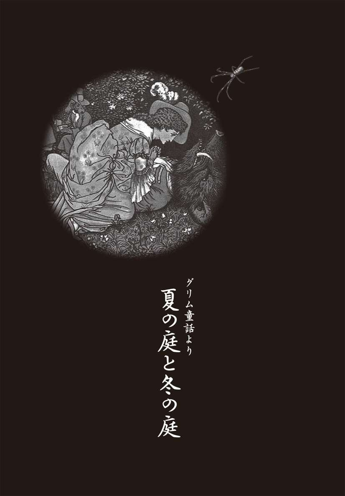
盗んだバラの花の代償は？
「さぁ、今日は年に一度の市の日だ。父さんは商売に出かけてくるから、三人でしっかり留守番をしていていなさい。そのほうびに、みやげを買ってきてあげよう。みやげは何がいいかな」
三人の娘たちを前に明るくふるまうこの商人は、先ごろ妻を亡くしたばかりだった。娘たちはそろそろ年頃で、三人だけを残して行くのは気になるが、商売には出かけなければならない。妻の病気の治療費と葬式代で、家の蓄えも尽きかかっていたのだ。
けれど、おっとりと育てられた娘は、そんな父の苦労など、ひとつもわかっていない。
「私は、きれいな服がほしい！」と一番上の娘。
「かわいらしい靴を！」と二番目の娘。
そして、三番目の娘は「バラを一本！」とみやげの注文を出した。
商人は市場でたんまり稼ぐと、家への帰り道、一番上の娘には、とてもきれいな服を、二番目には、とてもかわいらしい靴を手に入れた。だが、末の娘のためのバラは手に入れることができなかった。
折も折、クリスマスが近い、冬の最中である。どの花屋をのぞいても、売っているのはクリスマスの花ばかり。
「バラはないかい？」
そう聞いても、
「冬ですよ。バラは春にならなくちゃあ」
といわれるだけ。三人の中で末娘は一番の器量よしだったし、花がとても好きだった。父親はなんとかしてバラを手に入れたいと、家々の庭を探して歩いた。
立派な庭の家があったので、門から入り、バラがないかを尋ね、
「こんな雪の中でバラが咲くなんて、本気で考えているのかね？」
と、庭番に笑いものにされてしまう始末。
（最愛の娘が望むものをみやげにしてやれないなんて、自分はふがいない父親だ）
バラは春の市の日のおみやげにして、今日はクリスマスの花をもって帰ってもよかったろう。クリスマス用の砂糖菓子でも、きっと末娘は満足したはず......。だが、この男は、融通がきかず、発想の転換ができない男だったのだ。
そのうちに町から出てしまい、長い塀が続く立派な城にさしかかった。
（この庭なら、あるいは最後のバラが残っているかもしれない）
娘を思うあまりは、男は罪の意識もないまま、門の脇の生け垣を馬でひょいと飛び越えると、庭にもぐり込んだ。
すると、驚いたことにその中はまるで別世界だった。なんと、庭の半分が夏で、もう半分が冬なのだ。
夏の庭には、大きいのやら小さいのやら、それは美しい花が咲いていた。もう一方の庭には何も生えていおらず、そのかわりに雪が深く積もっていた。
信じられない光景を前に、男はあっけにとられた。そして、馬から降りた男は、夏の庭へと歩み寄った。すると、垣根にからんで咲く可憐なツルバラが目にはいった。そればかりではない。その向こうには、きれいなバラが数えきれないほど咲いていたのだ。
男は喜んで近寄り、バラを一本折る。すぐさま馬にまたがり城を出ると、家へ走らせた。
（バラを探すのに手間どって、すっかり遅くなってしまった......）
男は馬を急がせる。と、そのとき、男の背後から、荒い鼻息が聞こえてきた。振り返ると、そこには真っ黒で毛むくじゃらの大きな獣がいるではないか！
「おれのバラを返せ。さもなければ、おまえをぶっ殺すぞ！」
獣の怒声を聞いた男は、すっかり縮みあがってしまった。男はただただ謝るしかない。
「どうか、お願いです、このバラを私にください。娘にみやげにもっていかねばならないのです。その子は世界で一番美しい娘。その娘を見れば、親でなくても、その子のいうことはなんでも聞いてやりたくなってしまうはずです」
話を聞いて、真っ黒で毛むくじゃらの獣の目がギラリと光った。
（この世で一番美しい娘とな。親馬鹿半分としても、会ってみたいものよ）
獣がそう思うや、その下半身で大きくふくらむものがあった。
（たぎるような熱いものを、その娘に注ぎ込みたい）
獣は、まだ見ぬ若い娘をわがものにしたい衝動にかられた。そこで、牙のようにとがった歯をむき出しながら、地響きのような声でこういった。
「よし、わかった。バラを一本、お前にくれてやろう」
「ありがとうございます。お礼はなんなりと......」
商人は、これまで口先だけで生きてきた男だった。やたら心にもないことをベラベラと口に出すのだ。
「いま、なんなりと、といったな？」
「たしかに、はい......」
「それじゃあ、その美しい娘を妻としておれによこせ！」
いくらなんでもそれだけは......といおうとして後ろを振り返ると、獣は真っ赤な口を開けて、いまにも男を頭から喰いちぎりそうな勢いだ。とにかくその場を逃げ出したい。獣から逃れるために、男は、口から出まかせにこういった。
「はいはい、承知いたしました。娘をあなたさまの妻にさしあげましょう」
商人とは、なんと因果な商売だろう。お客に向かって、へつらいをいう癖がついているものだから、この後に、こんな台詞まで付け加えてしまった。
「きっと、お気に召すと存じますよ」
そういいながらも、商人はたかをくくっていた。どうせ娘をもらいになんか来るはずはないだろう。だって、これまで、こんな獣など見たことがない。城に閉じこもって暮らしているだけなのだろうから、城に戻れば、二度と出てはこないだろうと。
だが、獣のほうは、しつこく念を押すのを忘れなかった。
「いいか、一週間だ！ 一週間したら、おれの花嫁を迎えにいくぞ！」
野獣に嫁いだ末娘
こうして、商人の長い一日が終わった。
やっとのことで家に帰ると、三人の娘に、それぞれみやげを渡した。一番上の娘はきれいな服を喜び、二番目の娘はかわいらしい靴を喜んだ。とりわけ末の娘はバラの花を手にして、有頂天になって喜んだものだ。
「どうして、そんなにバラの花がほしかったんだい？」
商人が尋ねると、末娘はこういった。
「だって、お母さまが一番好きだったお花なのよ。このバラはお母さまに捧げるの」
なんてやさしい娘だ。この娘は、世界一の男でなければ、嫁にはやらないぞ。商人は、獣との約束なぞ、これぽっちも覚えていなかった。
だが、一週間後、否が応にも思い出すことになる。
お昼どきになり、三人姉妹がそろって食卓についていたところ、ずしーん、ずしーんと重たい足音が聞こえてくる。足音は階段を上がって来ると、やがてドアの前で止まった。
「開けろ！ 開けないか！ 開けないとドアをぶち壊すぞ」
部屋中に響き渡る野太い声に、娘たちがおそるおそるドアを開けると、真っ黒で毛むくじゃらの大きな獣が入ってきた。
「約束の日がやってきたのにおれの花嫁はやってこない。だから、迎えにきてやったぞ」
そういうなり、獣は末娘の腕をひっつかんだ。
突然の出来事に、娘は泣きだしたが、いくら泣いても無駄だった。姉妹三人の力を合わせても、とても獣の力にはおよばない。獣はさらうように末娘の体をかつぎあげると、自分の城へと連れ帰ってしまった。ふたりの姉は、恐怖のあまり追いかけることもできず、ガタガタと振るえるしかなかった。
かくして、末娘は獣の妻として暮らすことになったのだ。
獣との新婚生活
獣の城はなんともいえぬほど美しく、半分は夏、半分は冬の大きな庭があった。夏の庭には、たえることなくバラが咲き乱れている。そして、楽士が奏でる音楽が、よりいっそうバラを美しくひき立てていた。
獣は、恐ろしい姿をしていたが、娘のことをとても大切にした。目を見るだけで、何を望んでいるのかがわかり、なんでも娘の望むとおりにしてやった。
だが、娘はちがった。
（こんな風に、なんでも思うがままの暮らしも悪くはないわ。ただひとつ、夫が真っ黒で毛むくじゃらの大きな獣だという点は、どうしても我慢がならないけれど）
食事のときは、娘は獣に料理を取り分けてやらなければならなかった。そうしてやらないと、獣は何も食べようとしない。
獣のほうは単純で、娘の心が自分にないことはわかっていても、美しく若い女が側にいるだけで、なんだか満ち足りた気分になってしまうのである。
娘にとって、何より耐え難かったのは、獣とのセックスである。くちびるが近づいてくるたびに、鳥肌が立つのを、どうごまかしたらいいか。真っ黒で毛むくじゃらの手で愛撫されるたびに、全身に虫酸が走るのを、どうこらえたらいいのか。毛むくじゃらの大きな獣が、自分の体を思うがままに開くのだから、夜は拷問にも近い時間だったのだ。
ところが数週間したころから、娘の体に不思議な変化が訪れた。毛むくじゃらの手で触られると、無上の快感が全身を貫くようになったのだ。娘は、この手で触られるだけで早くも絶頂に達してしまい、いまでは、あの声をおさえるのに、必死になる始末だった。
獣のくちびるは厚く、熱っぽい。そのくちびるが近づいてくるだけで、娘の胸は早鐘のように鳴り轟くのである。そのくちびるが胸に押しつけられようものなら、娘はそれだけで消え入りそうな陶酔感に酔いしれた。
さらに、厚ぼったいくちびるが娘のいちばん奥深い秘所に押しつけられると、頭が真っ白になってしまい、その先のことはまったく覚えていなかった。その瞬間、娘は失神してしまうからだ。しかし、次の日の朝が来ると、娘は現実に打ちのめされるのだ。
娘は小さいときから、自分の夫になる人は、肖像画に出てくるように凜々しく、清々しいお方だと夢見ていた。だが、隣で眠っているのは、真っ黒で毛むくじゃらの大きな獣だ。
（もう嫌、こんな夫は嫌よ。ああ、こんな獣の妻で一生を終わるなんて、ほんとうに嫌だわ）
娘はそう思う気持ちを押さえられず、とうとう、夫にこう切り出した。
「なぜだかわからないのだけど、なんだか胸騒ぎがするの。きっと、父さんか姉さんが病気なのにちがいないわ。一度でいいから会いに行ってはいけないかしら」
獣は、娘を鏡の前へ連れていくと、
「さあ、のぞいてみろ！」
といった。娘がのぞいてみると、鏡の中はまるで自分の家のようで、自分の部屋も父親の部屋も見えた。そして父親は、ほんとうに病気で寝ているではないか。
最愛の末娘が獣に連れ去られ、食べられてしまった......。獣の城からバラを折ってきたせいだと自分を責めつづけた父親は、心を痛め、ついに病気になってしまったのである。
二人の姉は父親に寄り添い、はらはらと涙をこぼしている。
この様子を目にして以来、娘の気持ちは沈んでしまい、獣に頼みこんだ。
「どうか二、三日でいいから、一度家へ帰してください」
獣は、なかなか承知しなかった。娘が二度と帰ってこないような気がしたからだ。
だが、娘があまりに嘆き悲しむので、許してやることにした。
「しかたがない、父親のところへ行ってこい。ただし、一週間したら必ず戻ってくると約束すれば、だが」
娘はうなずくと、身支度をはじめる。そして娘が出かけようとすると、獣はもう一度、大きな声で怒鳴った。
「いいか、一週間したら、必ず帰ってくるんだぞ！」
末娘が家に帰ると、父親はふたたび娘に会えたことを心底から喜んでくれた。しかし、父親の心痛は、もはや回復できないほどに体を深くむしばんでおり、その二日後、とうとう帰らぬ旅路についてしまった。
父親の葬儀、そして、埋葬......。あっという間に一週間が過ぎた。
獣との約束も忘れ、末娘は悲嘆にくれる。だが、姉たちはどこかよそよそしかった。そして、その理由はすぐにわかる。こっそり、姉たちの話を聞いてしまったのだ。
「お父さんの遺産を二人で山分けできるところだったのに。死ぬ二日前になって、帰ってくるなんて」
「しっ。黙って二人で分けてしまいましょう。何もなかったといえば、わかりっこないわ」
「そうよね、元はといえば、お父さまが体をこわしたのだって、あの子が獣の嫁になったからなのだから」
娘は突然、獣のことを思い出した。
こんな姉たちよりも、獣のほうが、まだやさしい。そういえば、獣との約束の一週間はとっくに過ぎていた。獣は元気にしているだろうか。
そのときだった。ふと、ただならぬ胸騒ぎを覚えたのだ。もしかすると、獣も病気になっているのかもしれない。
そう思うと娘はいてもたってもいられず、すぐに城へ帰った。ところが帰り着くと、城はすっかり静まり返り、悲しみに沈んでいた。夏の庭だったところまでが冬になってしまい、一面、雪でおおわれている。
楽士たちは演奏をせず、城中の部屋という部屋には、黒い布が掛けられていた。娘は必死になって、城中を回って探した。だが、獣の姿はどこにも見当たらない。
なぜかこのとき、心の底から悲しみが突き上げてくるのを感じ、娘は立っていることさえできなくなった。もし獣がいなくなってしまったのなら、せいせいするはずなのに......。悲しみとともに、体の中心から耐えきれない思いがこみあげてくる。
気がつくと毎夜、獣が厚ぼったいくちびるを押しつけたあたりから、熱っぽいものがにじみ出ていた。それは、娘が体中で、獣を求めていることを強く伝えるものだった。慣れ親しんだ肉体を求める欲望......。そう、娘はいまこそ、わかったのだ。
（私は、獣を愛している。体中で愛している。こんなに獣がほしいのだもの、きっと、心も獣を愛しているにきまっているわ）
でも、気づいたときは遅すぎたのだ。獣の姿は、もうどこにもなかった。
婚礼の鐘が響きわたる
娘は、悲しい気持ちで庭を歩いていった。そうしていつもは足を踏み入れたことのない野菜畑の奥までいくと、キャベツが山のように積まれているのに気がついた。上のほうのキャベツはもう古く腐っている。そこで、娘は腐ったキャベツを放りのけてみた。さらに二、三個ひっくり返すと、その下にあったのは、いつも見慣れた、真っ黒で毛むくじゃらの毛皮ではないか。
獣は、もう息をしておらず、キャベツの下に冷たくなっていた。でも、娘が獣の胸に耳をあてると、かすかに心臓の鼓動が聞こえるのだ。
そこで、水を運んでくると、獣に休みなく水をかけてみた。
さらに、娘は、くちびるを獣の口にあてると、大きく息を吹き込んだ。これまで一度だって、娘のほうから、口づけしたことなど、なかったのだ。
すると、その瞬間、獣はひょいと立ち上がった。立ち上がった姿は獣ではなく、どこから見ても、肖像画の中の騎士のように凜々しい王子だった。
娘はもう、有頂天だった。夢にまで見た、肖像画のような夫を得ることができたのだ。
やがて、盛大な婚礼が開かれた。楽士たちは、ふたたび、演奏を始め、庭は今度は一面、夏になり、バラが咲き乱れる。華やかなバラの香りがあたりを満たした。
だが、なんということだろうか。この肖像画のような夫では、少しも満足できないのだ。あの真っ黒で毛むくじゃらの大きな獣との夜毎のセックス。あれこそが、娘を満たしたものだったのだ。
彫刻刀で削ったような美しいくちびるの接吻よりも、あのぼてぼてと厚い獣のくちびるのほうが、ずっと情熱的だった。そして、肝心の男のモノも、肖像画のような夫のそれと獣のそれでは、比べ物にならないのだ。
娘は、ふたたび、城中を探し回るようになった。庭番でもいい、門番でもいい。どこかに獣のような男性はいないだろうか。
そういえば、庭番たちが話していたのを聞いたことがある。森の奥の小屋に住む森番はまるで熊のような男だと。ぜひ、森番にあってみたい。そして、抱かれてみたい......。
娘は夢遊病のように、森の奥へと分け入っていく。熊のような男を求めて。
■『夏の庭と冬の庭』の背景を読む
獣は異民族の青年だった!?
もうひとつの『美女と野獣』ともいわれるこの物語は、『グリム童話』の初版に収録されている作品である。人間の娘と獣が結ばれるという、異類婚姻譚（人間と、人間とは違う種類の存在が結婚する説話）のひとつである。
これの同系類話は、世界中に伝わっている。たとえば、同じ『グリム童話』の中にも『かえるの王さま』があり、ギリシア神話でも同系類話が数多くある。日本の神話にも同じような話があり、昔話でも、『鶴の恩返し』の類話である『鶴女房』などがそれに含まれる。
これら異類婚姻譚の原点には、古の時代の族外婚による信仰、生活様式の違いに起源があるといわれている。つまり、このおとぎ話に登場する「獣」とは、異民族の青年であると考えられるのだ。人間の青年が「獣」として表現されたのは、日本の昔話で西洋人が「鬼」として描かれたのと同じ理屈であろう。
獣が食べていたのは？
それにしても奇妙なのが、「獣」が、キャベツの山に埋もれて気を失っていたという記述だ。では、ヨーロッパ人は、それほど毎日キャベツを食べることができたのだろうか？
答えはイエス。
ドイツやフランスでは、空豆、いんげん、蕪、ネギ、玉ネギ、えんどう、レタス、クレソンなどとともに、キャベツは食生活に欠かせない野菜だった。イギリスやオランダでも似たような豆や菜を食べた。
王も貴族も庶民も、貧乏人でさえ、主食はパンと肉であり、キリスト教徒にとって、これを断つのは、神に罪滅ぼしを誓う意味をもっていた。
パンは小麦、大麦、ライ麦で作り、現在とほぼ同じものを食べていた。肉も牡牛、子牛、羊、豚などが主流だったが、農村の領主や農民にとっては、猪や鹿の狩猟はかなり重要な食料の調達手段だった。家畜ではウサギはほとんど飼われていなかった。
逆に、鶏、鴨、鳩といった鳥類の飼育が盛んで、白鳥や孔雀まで料理用に飼われ、それを食卓に出す際は、調理をしてから羽根を一枚残らず付け直すという手間のかかる作業をしていた。
裕福な家庭では脂身を摂らずに赤身の肉だけで栄養をつけたが、庶民の暮らしでは脂肉を多すぎるくらい使った。したがって、肉をすべて「胃袋に押し込もう」としてニンニクや辛子、コショウ、ショウガ、ニッキなどの調味料が、どうしても必要だった。
そこで、肉を食べ過ぎる冬を越すと、「春の病」と呼ばれる発疹が出た。その治療には煎じ薬や刺絡が用いられたが、教会が決めた規則は最高の特効薬になった。「四旬節」がそれで、すなわち復活祭前の四十日間の肉食断ちだ。
『夏の庭と冬の庭』の「獣」も、この春の病にかかって体調を崩したとも思える。それゆえ、失神していたのは四旬節の時期だろう。
この期間は肉の代わりに魚が食卓が出た。そのため、城館や修道院には養魚池があって、淡水魚を盛んに食べた。海洋魚も近海物のほか鯨や鮫まで食べた。それらは北海や英仏海峡で獲れたもので、新鮮なうちに都市へ運び込まれた。市民階級のための流通機能は、かなり早くから整っていたのである。
鯨の脂身や肉の脂身は、蛋白質が多い空豆や豌豆と一緒に料理した。農村では脂肉とキャベツを煮込み、昼も夜も汁ごと啜るのが常食だった。「獣」も毎日この料理を食べていたに違いない。
中世の食文化
もっと手のこんだ料理では、肉を串焼きにしたり、網焼きにしたり、茹でたり、油で揚げたりしたものを、代わる代わるつくっては食べた。それらに味付けするソースは、パンを汁に浸して漉した濃厚なものや、詰め物に葡萄酒で味をきかせたものが用いられた。現代では包丁で細かく刻む下ごしらえも、中世では卵や野菜、香辛料を乳棒で擦り潰していたので、いつもドロリとした感じになった。
魚料理も肉とほとんど同じ作り方で、同様のソースをかけて食べた。カキは生のまま食べるか、さもなければ玉ネギと葡萄酒入りシチューにした。この食べ方はヨーロッパではすたれたが、アメリカ人はいまでもこの中世風な味にこだわっている。
デザートの果物は、桜桃、イチジク、アーモンド、クルミ、プラム、梨、林檎、マルメロの実などが一般的で、十三世紀以降には杏やメロンも手に入った。豊かな家では、ナツメヤシの実、レモン、オレンジさえ食卓に並べられていた。菓子では、揚げパン、ゴーフル、ウエファース、クリームやチーズのタルト、パンケーキ程度。
甘い物好きな少女たちは、果物の甘菓子「パート・ド・フリュイ」、ショウガの砂糖漬け、蜂蜜入りのジャムなどをたくさん食べた。『夏の庭と冬の庭』の三姉妹も、食後は、こういった甘菓子を楽しんでいたのだ。
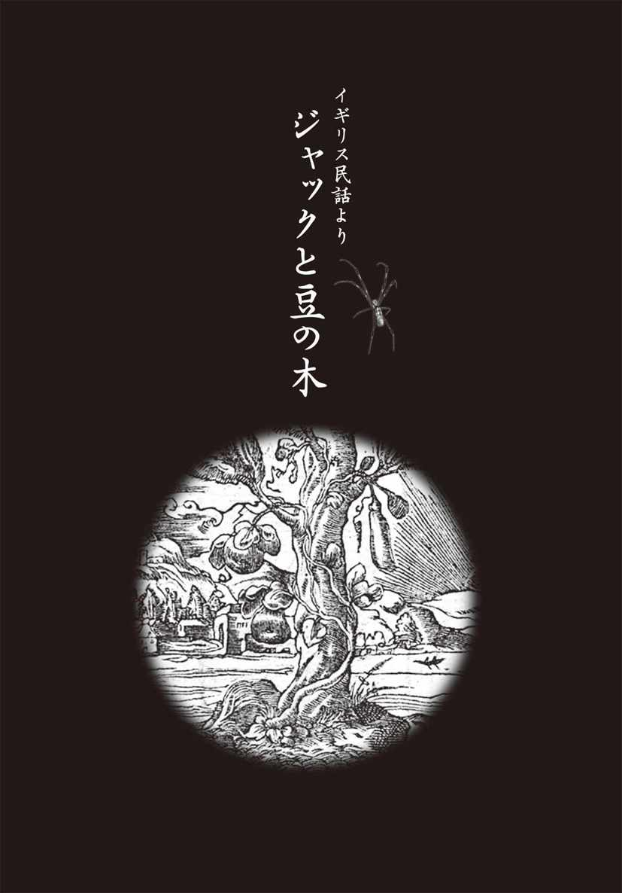
貧乏暮らしで妹まで売る
これは、イギリスに古くから伝わる物語。噓のようだが、ほんとうにあった話だ。
イギリスの田舎村に、貧乏な後家が住んでいた。数年前のある飢饉の年に、夫はあえなく死んでしまった。もっとも、当時は飢饉で人が死ぬことなんて、少しもめずらしくはなかった。昔もいまも、男は弱く、女のほうがふてぶてしく生き残るらしい。
その女には十七歳になる息子のジャック、七歳になる娘がいた。そしてもう一匹、〝ミルクのように真っ白な〟という意味のミルキーホワイトという名をもつ雌牛、家族はそれがすべてだった。そしてこの雌牛の乳をしぼって、毎朝、市場で売る。それがこの家の唯一の収入源だ。夫の残した金目のものは、みんな売りはらってしまい、家には何ひとつも残っていなかった。だから、貧乏のうえに「ど」がつく暮らしだったのだ。
ところがある朝、どうしたわけか、ミルキーホワイトはまったく乳を出さなくなってしまった。次の朝も、またその次の朝も。このままじゃ、親子ともども飢え死にするだけ。しかたなく、唯一の財産である牛を売り払った。だがその金も、すぐに使い果たしてしまった。
家族は他人の畑から盗んだ野菜や、ジャックが奪ってきたニワトリの卵でなんとか食いつないでいたが、それにも限界がある。
そんなある日、ジャックは母親にむかってこういった。
「なあ、おっかあ。元気を出せや。おれが町に行って、うまいこと金を稼いでくるからさ」
それを聞いた女は、感激するどころから、鼻の先でふんというだけ。
「前にもお前、そういって町まで行ったことがあるじゃないか。でも、腹をすかして帰ってきただけだろう。世の中、それほど甘くはないんだよ。もう、しかたないさ。あの娘を売っちまおう」
「そうだな。売るなら、あまり年がいかないうちがいい。さっそく売ってこよう」
こんな馬鹿な話があるだろうか。たった一人の自分の娘を売ろうという母親もすごいが、その兄もひどい男だ。ジャックは妹を連れて町へ行くと、金貨五枚で売りはらった。
その帰り道のことだ。道の向こうから、おかしなじいさまがやってきた。
「おはよう、ジャック」
変なじいさんだ。なんで、おれの名を知っているのだろうと思っていると、
「なあジャック、不景気な顔をしているな」
にやにや笑っている。
「うるせえぞ」
「そう怒るな。ところで、豆を五つ数えるにはどうするか、知ってるかね」
ジャックは、フフンと鼻で笑って、得意そうに答えた。
「そんなの、簡単さ。両手にふたつずつもって、口ん中にひとつ、入れればいいのさ」
「ほほう」
そのじいさまは、オーバーに驚いてみせた。
「ジャック、お前は頭がいいな。ところで、ここに豆が五つあるから、金貨三枚で売ってもいいぞ」
「じょうだんじゃねぇや。そんな豆、いらねえ」
「ははぁーん、ジャックよ。お前は頭がいいと思ったけれど、やっぱり、まだ知恵が回らないな。この豆は普通の豆じゃねえ。これをまいてみろ。一晩すると、天まで届くぐらい伸びて、たっぷり豆がとれ、あっという間に金持ちになれるから」
「いいかげんにしろ。噓をいうな」
「噓なものか。噓だったら、金を倍にして返してやるよ」
そうまでいわれると、悪い取り引きではない気がしてきた。なにより、ジャックの頭の中には、にょきにょきと天まで届く木の姿が浮かんでしまっていた。
「よし、それじゃ、交換だ！」
ジャックは金貨をじいさんに渡し、豆をもらってポケットに入れる。それから、母親が待ちかねる家に戻った。
「おや、ずいぶん早かったね。あの娘を売ってきたんだろう。いくらに売れたのかい？」
「おっかあには、わかりっこない値段だよ」
「そんなことないだろ。金貨五枚、いや、一〇枚かい？」
ジャックがポケットから豆を出すと、母親の怒ったことといったら。
「お前はなんというマヌケなんだ。大切な金貨を、こんな豆と交換してきたとは。ああ、情けない、情けない」
女は長い貧乏暮らしで、なんでもお金に換算してモノを考えるようになっていた。娘がいくらに売れるか、朝からずっと楽しみにしていたものだから、なかなか怒りがおさまらなかった。
「だけど、この豆は魔法の豆なんだよ」
「人を馬鹿にするんじゃないよ、魔法の豆なんてあるもんか。こんな豆、見たくもない。ジャック、お前にやる飯はないからね。さっさと寝ちまいな」
そうわめき散らすと、豆を窓から外に捨ててしまった。さすがのジャックも気持ちが沈んでしまい、天井裏の自分の部屋にとじこもった。
グルグル、グゥゥ。ジャックのお腹が音をたてた。当たり前だ。今日は、朝から何も食べていなかったんだから。
（ちっ、やっぱり豆なんか買うんじゃなかった。そうすりゃ、いまごろはニワトリの丸焼きでも食えたものに）
お腹がすいていても、暗くなれば眠くなる。朝いちばんで市場に乗り込んだ疲れも手伝って、ジャックはいつの間にか眠ってしまった。
さて、翌朝、目を覚ますと、なんだか様子が変だ。いつもは、朝日が差し込む屋根裏部屋なのに、どんよりと日がかげり、真っ暗なのだ。ジャックは窓のところに行ってみた。
「ありゃぁ！」
昨日、おっかあが怒って投げ散らかした豆が、一晩でおそろしく伸びて、その先は、はるか上の雲に隠れて見えなくなっているではないか。
「なんと、あのじいさん、とんだペテン師だと思ったが、とんでもない。豆が天まで届くってのは、ほんとうだった」
ジャックは驚いて、しばらく眺めていたが、ふいに思いついたように豆の木に飛び移った。そして、そのまま雲のうえを目指して、どんどん登っていった。
ベッドの中の秘密の時間
豆の木をはるかに登っていくと、まっすぐに伸びた道が見えてきた。ジャックがその道をどんどん進んでいくと、ひどく大きな家に行き着いた。
その入口のところには、一人の女が立っていた。胸の広くあいたドレスを着た、なんとも色っぽい女だ。ジャックは、ちょっと下手に出ることにした。そのくらいの年頃の女は、ジャックくらいの若い男の子に甘いのを知っていたからだ。
「おはようございます。きれいな奥さん。何か食べさせてもらえないでしょうか」
「何か食べさせろだって？ 悪いことはいわないよ。さっさとお逃げ。でないと、食べられるのはあんたのほうだよ。うちの旦那は、あんたぐらいの若い男を売り飛ばして儲けているんだからね」
しかしジャックは、腹がペコペコで、逃げる力もない。上手に甘えると、女は「やれやれ」とばかりにジャックを抱きかかえると、台所でパンとチーズとミルクをわけてくれた。
昨日は飯抜きだったから、ジャックは腹をすかした猟犬みたいだった。呆れるほど、いい食べっぷりで、あっという間にたいらげた。女は熱っぽいまなざして、それを見つめていた。
「お腹いっぱいになったかい？」
女は胸元を見せつけるように、ジャックの顔をのぞきこんだ。
「ありがとうございました。なんにもお礼はできないけれど......」
甘えた声でそう答えると、女は体を妙にくねらせる。
「お礼......お礼をしてもらおうかね。ちょっとこっちに来てちょうだい」
連れていかれたところは、寝室だった。女はジャックの目の前で下着を脱ぐとベッドに入り、自分の横をポンと手でたたいた。
「さ、ズボンを脱いでここにお入り」
いわれるままにベッドに入ると、女は豊満な胸でジャックの顔を覆ってくる。それから指先で、ジャックの股間をいじりはじめた。指でやさしくこわばりに触れたり、根元からしごいたり......巧みに触れられているうちに、ジャックの男の部分は、だんだんと固くなっていった。
ジャックは、無我夢中で女にしがみついた。女はやさしくジャックを抱きしめて、いきり立った彼の物を受け入れる。
「あぁ、あぅ、あぁ......」
ジャックが激しく腰を動かすたびに、女は大きく身をよじらせ、うめき声をあげた。
（それ、こうすると、もっといいさ）
ジャックがリズムをつけて動くと、女は「もっと、もっと」と催促する。
そのうち、ジャックの体の内側から、熱いものがこみあげてきた。
「うっ、うーッ」
思わず、ジャックは力のすべてをはき出していた。その瞬間、稲妻のような感覚が全身を貫いた。ぐったりとなったジャックの髪をなでながら、女はつぶやいた。
「やっぱり、若い男の味はたまらないね」
そのときだった。遠くから、どしんどしんと大きな足音が響いてきたのだ。
「大変だ。旦那が帰ってきた。うちの旦那の足音はまるで地震みたいで、遠くからでもわかるから、ほんとうに便利なの。おかげで、私は好きなことができるからね」
ジャックがオロオロしていると、
「さ、ここに隠れて」
女はジャックをかまどに押し込んだ。
そこへ、夫が帰ってきた。背はとてつもなく大きい、恐ろしげな男だ。手には牛半分ほどの肉をぶらさげている。
「おい、この肉をあぶってくれ。今日の朝飯は、それでいい」
そういいながら、男は妻の側によって、くんくんと鼻を鳴らした。
「妙だな。なんだか、若い男のにおいがするぞ。まさか、おれの留守中に男を引っぱり込んだんじゃねえだろうな。そいつがいたら、ただじゃおかないぞ。そいつの骨を粉にひいて、パンにしてしまうからな」
「ふん、馬鹿をおいいでないよ。この世界に、私ほど身持ちの固い女はいないよ。さあ、朝ごはんの支度をするから、お前さんは、さっさと手を洗っておいで」
夫が洗い場にいったすきに、ジャックが逃げようとすると、女はあわてて引き留める。
「もう少し、隠れてて。朝ごはんがすむと、あの人はいつもうたた寝するんだから」
女の方も、ジャックが見つかったら困るのだ。
ジャックにはもう、大体のことはわかっていた。きっと、この奥さんはちょいちょい〝つまみ喰い〟をしていたにちがいない。それがばれてしまったら、あの旦那のことだ。彼女も殺してしまうかもしれない。
そこで、ジャックはもう一度かまどに隠れた。旦那は牛の丸焼きをペロリと平らげ、それから奥へ行って、袋を両手にいくつも下げてくると、テーブルの上に中身を出した。
ジャラジャラジャラ......なんと、金貨がいっぱい出てきたではないか。旦那はしばらく金勘定をしていたが、やがて、金貨を袋に戻し、金袋を机の上に出しっぱなしにしたまま、椅子に座って、こっくりこっくり舟をこぎだした。
「よし、いまだ！」
ジャックはかまどから飛び出し、その金袋をつかんで、とっととかけ出した。町の家に忍び込んで服をかっぱらったり、パンを盗んだりはお手のものだったから、こんなことは朝飯前だった。そして、豆の木のところまでくると、金袋を下に投げ、それから、するすると木をすべり降りて、家に帰った。
「さあ、どうだい。この豆はやっぱり魔法の豆だ」
何がなんだかわからないが、それでも本物の金貨をこんなにたくさん手にすれば、あの母親でなくても大喜びするだろう。
「これだけ金がありゃ、肉だってパンだって、たっぷり買える。もう、あくせく働くことはないさ」
それからしばらくの間、ジャックと母親は、その金でぜいたくに暮らしたが、やがて、金袋はすっかり空になってしまった。
ジャックは豆の木のことを思い出した。
（あの、ふくらんだ金袋をもうひとついただいてこよう。それに、あの奥さんとベッドで味わった経験はなかなか気持ちのいいものだった。ついでにいただくのも悪くない）
さっそくジャックは豆の木を登ると、ふたたびあの家を訪ねた。
「おはようございます、奥さん」
「おや、いつかの子ね。あんたも好きものだねえ。私のお乳が忘れられなかったのかい」
ジャックは腹の中で「金の入った袋もね」とつぶやきながら、愛想よくうなずいた。
「そういえば、この前、金袋がひとつなくなったんだ。あんた、知らないかい？」
さすがのジャックもこれにはあわてて、急いで話を変えた。
「あのう、それより、早くベッドに行きたいな。奥さんがほしくてたまらない」
飢えていたのは女の方だったから、話は早い。なにしろ旦那とは、すっかりごぶさただったのだ。
二人はベッドに飛び込むと、この前よりも情熱的に交わりつづけた。そして、快感がいよいよ頂点にさしかかろうとしたとき、あの地震のような足音が響いてきた。
どしんどしん、と大きな音が鳴り響く。
ふたりはつながったままだったから、女もさすがに大あわて。それから、この前と同じように、ジャックをかまどに隠すと、身支度を整えた。
帰ってきた夫のその日の朝飯は、半頭の豚。それを焼いたものをむさぼり食うと、妻にこう命じた。
「おい、金の卵を産む雌鶏をつれてこい」
いわれた通りに女が雌鶏を連れてくると、男は雌鶏に向かって「産め！」と叫んだ。
驚いたことに、雌鶏はその場で、ピカピカの金の卵を産み落とした。
これにはジャックも驚いて、もう少しで声を出しそうになった。
その日も、しばらくすると男は、うとうとと居眠りを始める。それを見たジャックは、かまどからそっと抜け出すと、雌鶏を小わきに抱えて逃げ出した。
ところが、逃げている途中で、雌鶏がクッククックと鳴きだしたからたまらない。その声で男が目をさまし、大声で怒鳴りちらした。
「おい、おれの大事な雌鶏はどうしたんだ！」
これには女もびっくり。女は怒って、ジャックの姿を探した。とはいえ、女の頭の中では、雌鶏のことなんてどうでもよかった。女という生き物は、若い男とのセックスに夢中になると、金なんかどうでもよくなってしまうものなのかもしれない。
夫が眠っている間に、さっきの続きを......そう思っていたところで、ジャックは中途半端に興奮させたまま行ってしまった。女はそれに腹を立てていたのだ。
そうしている間も、ジャックは必死に逃げていった。そして、雌鶏を抱えたまま、無我夢中で豆の木をすべり降りると、家に帰った。
「どうだい、すげえ物をもってきたぜ。見ていろよ」
ジャックは母親の目の前で、雌鶏に向かって命令した。
「それ、産め！」
すると、雌鶏は体をふるわせながら、ポトリと金の卵を産み落とした。
それからは、毎日、毎日、命令するたびに、雌鶏は金の卵を産んでくれたから、親子はまたまたぜいたく三昧で暮らせるようになったとさ......。
味をしめたジャック
だが、人間というものは、とんでもなく欲張りなもの。食べ物のことで頭を悩ます必要がなくなると、若いジャックは毎日、退屈するようになってきたのだから。
「つまんねぇな、こんな生活」
目の前には、あの豆の木が伸びている。それを毎日見ているうちに、もう一度、あの奥さんのベッドに入りたくなってきた。
このところ、金回りのよくなったジャックには、村の若い娘が言い寄ってくるようになったから、ジャックはそちらのほうでも、まったく不自由はなくなったけれど、あの人妻の体には、若い娘にはない濃厚な味があった。
もう一度だけでもいい。あの熟した体を味わいたい。それに、夫の目を盗むというスリルは、思い出すだけでも、ぞくぞくするような快感だった。
さっそくジャックは豆の木を登っていった。しかし、その日は、女の姿が見えない。そこで、かまどではなく、大きな鍋の中に入り込んで様子を見ることにした。
やがて、女は水桶をかかえて帰ってきた。水汲みに出かけていたようだ。それからすぐに、どしんどしんと足音がして、男も帰ってきた。
「おや、若い男のにおいがするぞ」
「きっと、うちの大事な金袋と金の卵を生む雌鶏を盗んだ、あいつに決まっているさ」
予想もしなかったが、女のほうも怒っているようだ。ジャックは思わず身を震わせた。
（おれとのことを旦那に知られたら奥さんもまずいだろうから、いうことはなんでも聞くに決まっている......）
ジャックはそうたかをくくっていたのだ。だが、どうも風向きが違うらしい。
女はかまどを開けた。だが、そこは空っぽだった。
「ちくしょう。きっとここに隠れていると思ったのに。やっぱり、お前さんの勘違いだろうよ」
「いや、たしかに若い男のにおいにちがいないぞ」
男はそういいながら、家中を探し回った。食料倉庫、戸棚......。でも、大鍋の中までは調べなかった。鍋の中に生きた人間が隠れているなんて、思いもよらなかったのだ。
「ちぇっ、しかたがない。飯にしてくれ」
男のその日の朝食は、こんがり焼けた羊だった。
大鍋の中で、ジャックはがたがた震えていた。でも、どんなに恐ろしくても、じっと隠れているほかはない。見つかったら、今度こそ殺されてしまう。
そのうち、男は妻に向かってこういった。
「あのハープをもってこい」
さっそく女がもってきたのは、なんと黄金のハープだった。
旦那が「歌え」と命じる。と、ハープは、それはそれは美しい音で歌い出した。まるで天使が奏でるように、なんとも清らかな音だった。
しばらくすると、いつものように男は眠ってしまった。やがて、いびきが聞こえはじめると、ジャックは大鍋からそっと抜け出し、黄金のハープを抱えて逃げ出した。
ところが、ハープは「ご主人さま、ご主人さま」と歌い出したではないか。目を覚ました男の目に、ジャックが黄金のハープをもって逃げていく姿が見えた。
「あいつだな、うちの金袋や雌鶏を持ち逃げしたのは。ちくしょう、今度はハープまで盗むとは。もう許さんぞ」
ジャックは生まれてこのかた、こんなに速く走ったことはないというほど、必死で逃げた。だが、大男の一歩とジャックの一歩では、まるっきりちがう。みるみるうちに追いつかれてしまった。
なんとか豆の木のところまでたどりついて、後ろを振り返ると、男がもうすぐそこまで迫っている。ジャックは急いで豆の木をすべり降りた。
男は目の前でジャックの姿が消えてしまったので、びっくりぎょうてん。きょろきょろ探すと、雲の間に豆の木の枝が伸びていて、するするとジャックがすべり降りている。
男は一瞬ためらったが、決心して、豆の木につかまり、おっかなびっくり降りはじめた。
ジャックは、自分の家まであと一息というところまできていた。
「たいへんだ、斧を！ 斧をくれ！」
大声を張り上げると、母親が斧をもって飛び出してきた。豆の木の上の方に、鬼のように大きな足が見えている。母親は、金縛りにあったように、棒立ちになってしまう。
ジャックは地面に飛び下りると、母親の手から斧を取り上げ、豆の木に一撃をくらわせた。ぶるるんと豆の木が揺れたので、旦那は降りるのをやめて下を見た。そのとき、ジャックはもう一度、斧をふりあげ、豆の木めがけてふりおろした。
「あっ、ああっ～」
ズシーンと、すさまじい音とともに、豆の木は切り倒され、男の体は地面に打ちつけられ、その衝撃で脳天が割れてしまった。死体の上に、豆のつるが覆いかぶさる。
「よし、うまくやったぞ」
ジャックは豆のつると一緒に、旦那の死体を焼いてしまった。
ジャックは幸せになれたのか？
その後は、ジャックと母親は、雌鶏に金の卵を産ませ、黄金のハープに歌を歌わせて、ぜいたくに暮らしていた。
その間にも、黄金のハープは村の噂になり、やがて町まで広まっていった。
「世にも珍しい、黄金のハープの音を聞いてみたい」
町の中心にある城の姫が大の音楽好きだったから、ジャックと母親は城に招かれ、そこで暮らすようになった。このころには、ジャックも貧乏くさい様子はすっかりなくなり、見栄えのする若者に変身していた。
そんなある夜、ジャックはたわむれに姫のベッドにすべり込み、姫を自分のものにしてしまった。あの人妻に仕込まれたテクニックはなかなかのもので、姫は身も心もすっかり奪われてしまったのである。
姫はさっそく父王にこう進言した。
「私はジャックを婿に迎えたいの。それが認められないのなら、尼寺に入ります」
大事な一人娘のいうことだから、王としても結婚を認めるしかない。こうしてジャックと姫は結ばれたのである。
ところがこの姫は、生まれつきのセックス狂いだった。毎晩、毎晩、朝まで求めつづけなければ、がまんのならないタチだったから、ジャックの体は、日に日にやせていった。
もっとも、城の外の住人たちの目には、ジャックとその母親ほどの幸せ者はいないと映っていた。だから、物語はこう終わっている。
「それから、ジャックとその母親は、姫を妻にもらって、それは幸せに暮らしたとさ」
■『ジャックと豆の木』の原典を読む
盗みなんて当たり前
見知らぬじいさんと出会って、魔法の豆を手に入れた少年が天へ上り、最後に金持ちになる......。ジョゼフ・ジェイコブスがアングロサクソンの民話を再話したものがもっとも有名なこの話は、元の形は中国から伝わったものである。
十七世紀に蒲松齢が著した『聊斎志異』の中に収められた、「偸桃（桃を盗む）」という話である。
正月の行事で賑わっている広場にやって来た手品使いの親子が、役人から「桃の実を出してほしい」と注文された。そこで、もっていた長い縄を空中にまっすぐに立て、子どもがそれを登る。やがて天に達すると、仙女の庭から桃の実を盗んで投げ落とし、これを役人に献上してみせた。
ところが、縄は空中でプツリと切れてしまい、子どもの体は首、胴、手足がバラバラになって地上へ落ちてきたのだ。「こんなことになるなんて」と、親の手品使いがあまりに嘆くため、役人たちは葬式費用の金を集めて渡した。
すると、足下の竹篭の中から元気な子どもがニッコリあらわれ、あっと驚いているうちに、手品使いの親子はどこかへ立ち去っていった、という物語である。
また、『ジャックと豆の木』の黄金の卵を産む雌鶏というのは、五世紀の宋の『湘中記』に出ている、黄金の糞をする牛の話の焼き直しである。
つまり、これらの説話が、中世以前に中国からシルクロード経由でヨーロッパに伝わり、民話としてまとめられたのだ。
そして、それらのもともとのテーマは「手品使いの盗み」である。
ヨーロッパの手品とか奇術、軽業などの芸は、ローマ時代からあったものだ。もとはオリエントやインドで栄えた幻術で、芸で人の目をくらませておいて、その隙に物を盗み取る技である。
ローマでは、常に市が立っていたのだが、そこには必ず異人やジプシーの幻術が見世物として出ていた。綱渡りや縄抜け、篭隠れ、高跳びといった技能を披露し、輪になった人々がヤンヤと喝采している間に、手の早い仲間が見物人の懐をねらって、スリ、かっぱらい、置き引きを働くのだ。
近くの家でも住人が二階、三階の窓で鈴なりになって見ているので、ほかの仲間はその隙に家へ忍び入り、金品を盗む。中には仲間など使わず、技を使いながら自分で盗みを働く名人もいたようだ。
この流れは中世にも及んでいた。各地に都市は成立したものの、王国が乱立して、厳しい圧政と搾取に人々はあえいでいた。人々は貧困と不安の底にあったから、誰もが、ちょっとした小金を手にしたくなる。
そこで、少しでも学を受けた者、器用な者、度胸のある者は、世渡りのために、なんらかの目くらましの術を身につけたのだ。
金があればこの世は天国
十五世紀のパリには、詩人で、窃盗犯、そして殺人者のフランソワ・ヴィヨンがいた。当時、「学生にまさる悪党は他になし」という諺になったくらい、学生の中にはひどいのがいたが、彼は「学芸士」の称号を取り、さらに法学科で学んでいた俊英である。
ヴィヨンは放蕩三昧で、次から次へと美女を求め、カトリック僧を殺し、金を盗み、そして放浪して行方知れずになった。その一方で、彼の記した詩集『形見分け』『遺言書』は、中世文学でも最高の輝きを放っており、庶民にも大いに受け入れられた。
十六世紀初めのドイツでは、作者不明の民衆本『テイル・オイレンシュピーゲル』が出版され、大いに売れた。主人公のオイレンシュピーゲルが繰り広げる騙し、高跳び、詐欺、商人の手伝い、ホラ吹き、噓吐き、でまかせ、脅しなどに絡む「いたずら」が、人々の共感を買ったのである。
主人公のこれらの所業は、すべて、いわば幻術で、他人の目をくらましては小金を稼ぎ、それで暮らしを立てていた。その手法は当時の庶民の憧れだったから、実際、これを真似して盗みをした者も多かったという。
同じ時代のスペインでは、やはり作者不詳の中編小説『ラサーリョ・デ・トルメスの生涯』が庶民の間で流行した。この物語は、主人公のラサーリョ少年が、四人のけちん坊な雇主の小僧をしながら、いかにうまく主人を騙して食べ物を手に入れたかという記録で、これまた、庶民のささやかな盗みを正当化させたものだ。
ここでは主人の頭陀袋や酒壺、あるいは長持ち、屋根裏部屋といった鍵の掛かっている場所から、どうやって上手に盗み出すかがテーマだった。同様に庶民一般でも、隣の家の長持ちから、どうにかして物をくすねてやろうと考えていたのである。合鍵などなくても、当時の錠は簡単な仕掛けなので、針金で探っていれば、やがて止め金は外れたのである。
十六世紀末にはセルバンテスが、セビリアの泥棒組合を扱った『リンコネーテとコルタディーリョ』を発表した。いかさまカード（トランプ）使いで泥棒の少年と、スリの少年が、泥棒組合に加入して活躍するという話だ。
組合には故買金を入れる三重鍵の箱があり、組合長と世話役が管理していて、誰かが官憲に捕らえられれば放免の金をそこから出してやる。組合員の表向きの顔は、下級役人や兵士、商人、職人、芸人、それに無職のばあさんと、市井のごく普通の暮らしをしている人たちだ。ところが、裏ではいろいろな幻術を身につけ、盗みで生活の糧を得ていたのである。
このように、中世の人々にとって、盗みはごく日常の出来事だった。金よりも、まず物の世である。朝食のパンを盗み、昼食のカブを盗み、夕食のブタも盗み、晩に吹く笛も盗んだ......。
『ジャックと豆の木』も、当時の庶民そんな小悪党の生き方を、おもしろおかしいストーリーにしたものといえる。ジャックという名は、「切り裂きジャック」や「ごろつきジャック」にも見られる、ありふれた偽名であろう。そのジャックが鶏やハープを盗んで見世物にしたり、盗んだ金袋の金貨を使う。もちろん、そこいらのかみさんの体を盗むなんてのも朝飯前。「安逸な暮らしならなんでもいいさ」というのが、庶民の考え方を反映したものだったのだ。
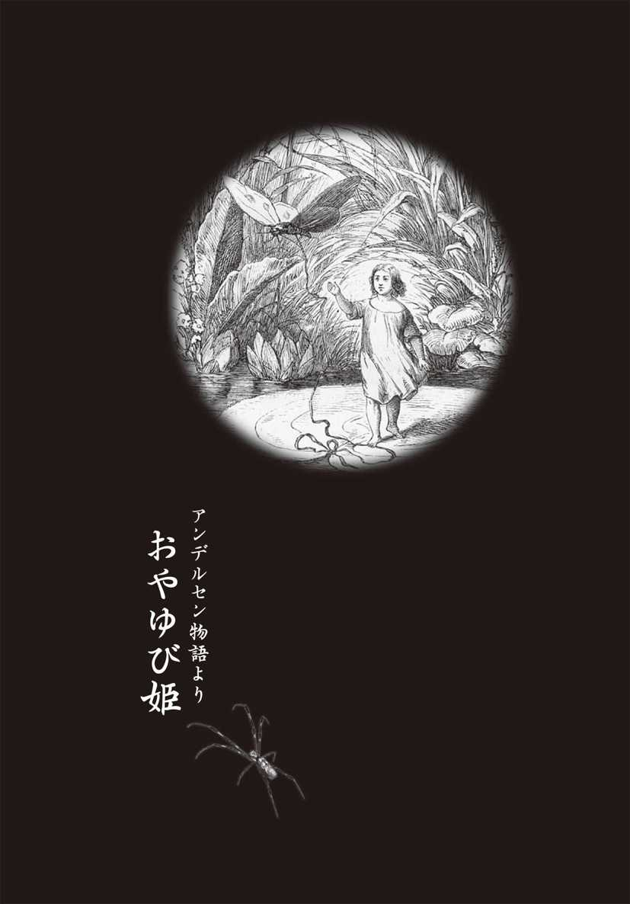
男嫌いの女が授かった小さなお姫さま
昔むかし、あるところに、ひとりで暮らす女がいた。
彼女は一生結婚をしないと心に決めていた。なぜならば、女の父親は浮気をしてばかりいて、家にいるときは酒びたりの最低の男だったのだ。そして、母親は不満をぶつけることもできずに、泣いてばかりいた。そんな父と母を見て育ったのだから、結婚なんてまっぴらごめんだと思うのも無理はない。
それでも、一生一人は寂しすぎる。せめて、子どもが一人ほしいと願った。だが、結婚もせず、恋人もつくらなければ、子どもができるはずもない。思案にくれた彼女は、魔法使いに相談することにした。
「結婚しないで、かわいい子どもがほしいのですが、何かよい方法がないでしょうか。どうぞ、力を貸してください」
「礼金は用意してあるのかね？」
魔法使いは値踏みするように女を眺めながら、こういった。魔法使いは対価になるものと引き換えに、魔力を使う。この魔法使いにとっての対価は、金だったのだ。
「はい、もっているお金をすべて用意しました」
すると、魔法使いは、こういった。
「よしよし。ならば、この麦を一粒しんぜよう。これはね、そこいらの畑にまいたり、鶏の餌になるような麦とはまったくちがうものだ。もって帰って、植木鉢にまきなさい。きっと願いがかなうから」
魔法使いが彼女に授けたのは、たった一粒の麦だった。
（全財産をもってきたのに、麦一粒？）
女が不満に思ったのも無理はない。それでも、信じるしかない。しかたなく金を渡すと、麦を植木鉢に植えてみることにした。そして、片時も側を離れずじっと見守っていた。
すると、麦は翌日には芽を出し、その日のうちに、たちまち大きなつぼみをつけた。
「まあ、きれいなつぼみだこと」
思わず赤と黄の美しいつぼみにキスをすると、大きな音を立てて、パッと花開いた。
一見すると、チューリップのように見えるが、花の真ん中には緑色の椅子がある。そして、その上には小さい女の子がちょこんと座っているではないか。
それはそれは、ほんとうにかわいらしい子だったが、なんと小さいこと。身長はせいぜい親指くらいしかなかった。
彼女は、その子を「おやゆび姫」と名づけた。
〝母〟となった女は、ニスをきれいに塗ったクルミの殻のゆりかごとスミレの花びらのマット、それからバラの花びらのふとんを愛しい娘にしつらえ、姫をかわいがった。
おやゆび姫は、テーブルの上で飽きることなく、一日中遊んでいた。女はテーブルの上に深みのある皿を一枚置き、そのまわりを花輪で飾った。姫はチューリップの花びらを舟に、白い馬の毛をオールにして、その花輪の端から端までこいで渡って遊ぶのが大好き。そして、女はそんな姫をながめるのが大好きだった。目の中に入れても痛くないほどかわいい......、ほんとうにそう思えるほどに。
「お金なんかいくらあっても、これほどの喜びを与えてくれはしない。子どもに勝る宝はこの世にないんだわ」
彼女は心底そう思い、結婚をしないで、子どもをもつ生き方を選択したことをしみじみよかったと思っていた。夫がいなければ、浮気をして苦しめられることもなければ、大酒を飲んで暴れまわるのをなだめる必要もない。
ところが、母親があまりにも過保護だったため、姫はしだいにその愛情が重荷に感じられるようになっていく。おやゆび姫の一挙手一投足にまで目を光らせ、「ほら転ぶ、ほら溺れる」と、口うるさくてしかたない。
友達ができれば、影響されて、きっと悪いことを覚える。ましてや、ほかの子どもとはちがうのだから、いじめられてしまうかもしれない。あれこれ心配するあまり、彼女は姫を家から一歩も出そうとしなかったのだ。
家出娘のアドベンチャー
姫は成長するにつれてますます愛らしさを増し、同時に、家の中に閉じ込められていることに飽き飽きしてきた。だからといって、自分から家を飛び出すほどの勇気はない。この家にいるかぎり、世の荒波から守られ、のんびり遊んで暮らせるのだから。
それでも、外の世界にどんなことがあるのか、自然と興味をもつようになっていた。
そんなある夜のこと、姫がクルミのベッドで寝ていると、一匹の醜いヒキガエルが窓からピョンと飛び込んできた。その晩は夜風が心地よく、母親がうっかり窓を閉め忘れてしまったのだ。ヒキガエルは、じめじめした大きな体で、姫が眠るテーブルの上に飛び降りると、ベッドで眠る姫の寝顔をのぞきこむ。
「おや、なんとかわいい娘だ。ちょっと小さいけれど、ちょうど伜も年頃だ。伜の嫁さんにもらっていこう」
実は、ヒキガエルの世界は大変な嫁不足に悩まされていた。夫を選ぶ条件として外見も重要視されようになり、ヒキガエルのところになど、誰も嫁にきてくれなくなってしまっていた。一度も恋人ができないまま、年をとってしまうヒキガエル、遠い外国から顔を見たこともないお嫁さんをもらうヒキガエルもいっぱいいたのである。
このヒキガエルの息子も、ガールフレンドの一人もいなかった。そんなだから、この娘をさらってしまおうと思いついたのだった。
小さなベッドごと娘をさらっていこうとベッドをもち上げようとすると、目を覚ました娘が花びらのふとんをはねのけ、愛らしい顔で尋ねる。
「あら、あなたは誰？」
その仕草を見たヒキガエルは、いよいよもって、息子の嫁にしてやりたいという思いが強くなった。断られてもともとと、ヒキガエルはできるだけやさしい声で答える。
「私と一緒に、池のほとりまで行ってみないかい？」
すると、思わぬ返事が返ってきた。
「もう、こんな家の中だけの生活は飽き飽き。どこでもいい、広い世界を知ってみたいわ」
おやゆび姫にとっても、ヒキガエルの誘いは渡りに舟だったのだ。
それからヒキガエルの背中に乗ると、姫ははじめて外の世界へと飛び出したのだ。おやゆび姫を待っていたのは、広い川に面した素晴らしい眺めだった。とはいえ、ヒキガエルの家はその川岸近くの、どろ沼みたいにじくじくした場所である。
「窓から見ていた川はキラキラ光って、あんなに素晴らしく見えたのに......。こんなじくじくしたところがあるなんて」
おやゆび姫はそう思ったが、それよりも好奇心が勝った。申し出を受け、ヒキガエルの息子に会ってみることにした。
だが、ヒキガエルの息子はやっぱりヒキガエル。醜い顔、かっこ悪い体。おまけに、その息子は、「コアックス、コアックス、ケ、ケックス！」としか、ものをいうことができなかった。
姫はすっかり退屈してしまい、いつしか眠ってしまった。
その間に、ヒキガエルの親子は二人で相談しあう。
「こんなかわいい子は、お前には二度と縁がないだろうよ。だから、川の中に浮かんでいる大きなスイレンの葉に乗せておこう。そうすれば、もう逃げ出せやしないさ」
ヒキガエルの親子は姫をスイレンの葉の上におくと、婚礼の準備のために、また自分の家に戻っていった。花嫁を迎えるからには、部屋を飾らなければならないからだ。
ヒキガエルの姿が見えなくなると、おやゆび姫の目がそっと開いた。実は、ずっと寝たふりをしていたのだ。
（あんな醜い男の嫁になんか、誰がなるものか。女にとって結婚は、幸せの階段をのぼる最大のチャンスなのだから、絶対に自分を安売りしないわ。なんとか逃げ出してみせる）
これまで口にこそしなかったが、自分の育ての母が結婚もせず、いじけたような暮らしをしているのを見て、姫はうんざりしていた。浮気をしたり、大酒飲みの夫なんかいらないという考えであることも知っていたが、そんな男、こっちから願い下げだ。
「男を選ぶのは女の甲斐性よ。そのためには、まずかわいくなきゃならないわ。男という男が夢中になる、私みたいにかわいい女じゃないとダメなのよ」
姫は水面に映した自分の姿にうっとりしながら、そうつぶやいた。この容姿を武器に、絶対に女の幸せをつかんでみせる。おやゆび姫はあらためて、自分にそう誓うのだった。
男を値踏みするおやゆび姫
おやゆび姫がチャンスをうかがっている間にも、結婚の準備は着々と進んでいた。ヒキガエルの親子は、交代に泳いできてはクルミのベッドや花びらのふとんを運んでいく。
「見れば見るほど、醜い男ね。あんな顔と体で、よくも私をお嫁にしようなんて思ったものだわ」
ベッドを運んでいこうとするヒキガエルの息子の背中に、姫は罵声をあびせる。一生懸命泳いでいるヒキガエルの息子はそれに気づきかなかったが、水中の魚たちはそれをすっかり見ていた。
「なんて娘だ。顔はかわいいけれど、うちの子の嫁になどまっぴらごめんだな」
魚は利口者だったが、その息子はまだ若く世間知らず。かわいい女の子を見れば、それだけで頭がボーッとしてしまい、嫁にしたいと言い出すに決まっている。
「このままここに居座られては迷惑だ。どこかに行ってもらうしかない」
魚はスイレンの茎を喰いちぎると、スイレンの葉はおやゆび姫を乗せたまま、泳ぎだした。川の流れにのったスイレンの葉は、ヒキガエルや魚たちが追いつけないほどのスピードで、どんどん遠くへ流れていく。
その間にも、いろんな場所を通り過ぎる。林を通れば、枝で遊んでいる小鳥たちが、「ほんとにきれいなかわいいお嬢さん！」と、声をかけきた。
もちろん、小鳥などに興味があるわけがない。もっとすごい男をつかまえる──、姫はそう決心していたのだから。スイレンの葉はなおも遠くへ遠くへと流れ、とうとう見たこともない外国まで流れついた。
言葉がわからない国に連れてこられて、さすがの姫も不安がつのった。すると、姫のまわりを飛んでいた白いチョウが、スイレンの葉の上に舞い降りた。
「この、姿のよい白いチョウは、いい線いってるほうだわ」
姫はそう思い、白いチョウを誘った。姫のかわいらしさに心を奪われた白いチョウは、しきりに体に触ろうとしてくる。
（いやらしいヤツ、まだ、会ったばかりなのに）
それでも、おやゆび姫は胸の先にいたずらしたり、ほおにキスをするくらいは許してやることにした。白いチョウはそれなりに役立ちそうだったからだ。
たしかに姫の思った通りだった。白いチョウが自分の羽とスイレンの葉を結びつけると、それまでよりずっと速いスピードで進みはじめたのだ。
（やっぱり。このチョウは見てくれだけじゃなかったのね。私の目に狂いはないわ）
その間にも、おやゆび姫は水に映った自分を眺め、我ながらうっとりしていた。
「こんなにかわいいのだから、白いチョウ程度の男で妥協してはならないわ」
一生懸命、飛んでいる白いチョウを見ながら、自分にいい聞かせるようにつぶやいた。
そのときのことだ。大きなコガネムシが飛んできて、誘いをかけてきたのだ。キラキラと黄金色に光った羽は、見るからにお金持ちそうに見える。
おやゆび姫には、白いチョウよりもコガネムシのほうがずっとよく思えた。
（どんないい男でも、金がない男なんかつかまえたら大変よね）
姫はコガネムシの爪にぶらさがると、チョウを尻目に木立の中へと飛んでいった。
その姿を見ても白いチョウは、どうすることもできない。自分の羽は葉に結びつけられ、離れることができなかったのだ。
一瞬、おやゆび姫の中に、白いチョウへ哀れみの感情が湧き上がった。もしかしたら、白いチョウは一生、葉の流れていくままに生きていかなければならないのかもしれない。そのうちに葉が枯れてしまったら、白いチョウはどうなってしまうのだろうか？
「ごめんね。でも、私にはチャンスがむいてきたのよ」
自分さえ幸せになれば......。姫の頭の中には、結局は自分のことしかないのだ。
金の力にはかなわない
姫が連れてこられたのは木の上だった。コガネムシは、姫を緑の葉の上に下すと、せっせと花の蜜を取ってきては、すすめてきた。
そうこうしているうちに、コガネムシの仲間たちがぞろぞろと集まってくる。そして、姫をじろじろ眺め、口々にこういった。
「まあ、この子ったら、足が二本しかないじゃない。なんてみすぼらしい！」
「それに、ひげもないわ」
「体が細くて人間に似ているわ。人間なんて地球上でいちばん愚かな生物でしょう」
仲間の評判はさんざんなものだった。とうのコガネムシは、姫をこの上なくかわいいと心の中で思ってはいた。それでも、みながみな、みっともないといい、地球上でいちばん愚かな生物の人間に似ているとまでいわれては、さすがに立つ瀬がない。
ここでおやゆび姫と一緒に暮らしていく勇気を、コガネムシはどうしてももてそうになかった。しかたなくおやゆび姫をくわえて飛び立つと、野原のヒナギクの上に置き去りにしてしまったのだ。
「ふん、なによ。自分だって虫ケラのくせに」
強がっていても、コガネムシに気に入られなかったことで、おやゆび姫のプライドはズタズタに傷つけられた。
（こうなったら、あんな虫よりももっと金持ちの男を見つけて、見返してやる！）
おやゆび姫は気分転換に、夏の間中、野原で自由を満喫することにした。花の蜜を集めては食べ、毎朝、葉にたまる露を飲み、着るものは野原の花を取っ替え引っ替え。ドアも窓もない野原で、楽しく過ごしたのだ。
ところが、そうしているうちに夏が過ぎ、秋も過ぎ、冷たく寒い冬がやってきた。ふと気がつけば、一緒に遊んでくれた小鳥たちもどこかへ飛んでいってしまった。木も花も枯れ、住まいにしていた大きなスカンポの葉も枯れてしまい、黄色いカサカサの茎のようになってしまった。着物もすっかりぼろぼろになり、おやゆび姫は寒さに凍えた。
そして、とうとう雪が降り始めた。
落ちてくる雪の一ひら一ひらが、シャベルに山盛りの雪を投げつけられているようだ。枯れ葉で身を包んでみても、少しも暖かくなりはしない。姫は、寒さに震えるばかり。それでも、姫は野心で自分を奮い起こした。
（絶対に、世界一の男を見つけてやる。そしたら、どんな手を使ってもその男の心をとりこにしてみせるわ）
冷たく凍りついた大地を裸足で歩きつづけた姫は、やがて森の外にある大きな麦畑にたどりついた。麦はとっくに刈り取られ、畑にあるのは切り株だけ。切り株が立ち並ぶ麦畑は、まるで巨大な迷路のようだった。
すっかり日が落ちてしまったが、ここを通り抜けなくては先に進めない。姫は少し休んでからにしようと、切り株に体をもたせかける。と、足元から、なにやら声が聞こえきた。見れば、切り株の下に穴が開いているではないか。声は、そこから聞こえてくる。
（誰かいるんだわ。こんなところに住んでいるぐらいだから、大したヤツではないだろうけど。でも、今日のところはしかたがないわね。たとえ、つまらない男だったとしても、凍え死ぬよりはマシだわ）
切り株の下の穴に入ると、穴の奥に野ネズミの家があった。扉を叩くと、出てきたのはおばあさん野ネズミ。おやゆび姫は憐れみを誘うような声を出した。
「お願い、大麦の粒を少しわけてください」
「おや、おや、可哀相に」
おばあさん野ネズミは姫を部屋に入れると、暖炉の側に座らせた。
「さあ、こっちのほうが暖かいよ。麦なんかじゃなく、おいしいシチュウを一緒に食べるといいよ」
その家は暖かく、麦のいっぱい詰まっている部屋にりっぱな台所、食糧部屋まである。
「外は寒いからね、冬中、ここにいるがいいよ。その代わりに、私の話し相手をしておくれ。なにしろ、寂しくってね」
おばあさんの言葉に、おやゆび姫は〝母親〟のことを思い出した。そういえば、自分を育ててくれた母も今は一人暮らし。きっと寂しがっているにちがいない。
だが、そんなやさしい気持ちも、すぐに消えてなくなってしまった。家の中をすみずみ見ているうちに、ここを乗っ取ってしまうのも悪くはない、と思うようになったのだ。
（なにしろ、相手はばあさんだ。どうせ、そのうち死んでしまうわ。そうしたら、あの山のような麦や食糧がみんな私のものになる......）
それからというものの、毎日、退屈で死にそうになりながらも、おばあさんの話し相手をしてやった。そんなある日のこと。おばあさん野ネズミが、こう切りだした。
「明日、お客さんがくるの。お隣の方だけど、私よりもずっと金持ちで、大広間をもっていて、りっぱな黒いビロードの毛皮にくるまっていなさる。この人をだんなさんにできれば、お前さんも心配いらずなんだがね。ただ、この方は事情があって、昼間、お天道さまの下には出られないんだ」
翌日、やってきたのはモグラだった。たしかに黒いビロードの毛皮を着ていて、屋敷も野ネズミの家の二〇倍はあるという。ただし、お天道さまやお花は好きじゃないらしい。
おやゆび姫は迷うばかり。広い屋敷も、立派な毛皮のコートが着られるくらい金持ちであることも魅力だ。だからといって、一生、お天道さまの下には出られない穴倉で生活なんて、まっぴらだ。それでも、お金の魅力には逆らえない......。
これまで、金にあかせてずいぶん遊んできたから、モグラは女の扱いに慣れていた。おやゆび姫が迷う姿を見て、モグラはモグラでこう思っていた。
（この娘は金でなんとかなる女だ。そんな女にはもうあきあきなんだがな。それでも、とびきりかわいい娘だ、嫁にするのも悪くはない）
そして、こういう娘に急いで飛びかかると、逃げられてしまうこともモグラは知っていた。だから、おばあさんが席をはずしている間に、こうささやいた。
「実はな、この家から私の家まで、土の中に長い廊下を掘ってあるんだ。いつでも好きなときに、そこを通って訪ねておいで」
ツバメと過ごした至福の時間
ある日、おばあさんがうとうと寝ている間に、おやゆび姫は秘密の廊下を通ってモグラの家を訪ねてみることにした。
しかし、その途中で、運命の出会いが待っていた。
長い廊下の途中に、一羽の鳥が横たわっている。見ると、美しいツバメではないか。だが、翼は体の両側にぴったりくっつき、頭と足は羽の下に引っ込められて、まるで小さな黒い土の固まりのようだ。かわいそうに、寒さで凍え死んでしまったにちがいない。
美しいツバメに心を奪われた姫は、モグラのことなどすっかり忘れ、体をかがめると、閉じた目にやさしくキスをした。その日はしばらくツバメの側で過ごしてから、おばあさんが待つ家に帰っていった。
その晩は少しも眠れなかった。どうしても、ツバメが気がかりでならない。姫はベッドを抜け出すと、枯れ草で大きいブランケットを編みはじめた。そして翌日、それをもってツバメのところに行き、縮こまった体にそっとかけてやった。それから、野ネズミの家で見つけたやわらかな綿を体の両脇にあてがい、冷たい土の中でも、暖かく寝ていられるようにしてやったのだ。
「さようなら。夏の間、あなたたちが歌ってくれたきれいな歌を忘れないわ。ありがとう。あのころは、木という木はみな青々として、お日さまは暖かく私たちを照らしてくれたわね」
姫は歌いながら、自然とツバメの胸に顔を埋めていた。
家を出てからというものの、少しでもいい男を見つけ、なんとしてでもその男を自分のものにしよう、その一念でここまできた。ここで巡り会った美しいツバメは、死んだようにころがっている。目指す男ではなかったはずだ。それなのに、何かがドキドキと音をたてて、ぽっと胸のあたりが熱くなるのはなぜなのか......。
だが、それは錯覚ではなかった。ドキドキしていたのは、ツバメの心臓だったのだ。そう、ツバメは死んでいなかった。寒さに凍え、死んだように眠っていただけだったのだ。
おやゆび姫が編んだブランケットは凍てつく寒さから身を守り、体の脇に詰めた綿が体を暖めてくれたのだ。そして、ツバメはようやく目を覚ましたのだ。
それでも、まだ体は弱ったままだ。姫は急いで家に引き返すと、ハッカソウの葉をもってやってきた。そして、それをツバメの頭の上にあてがった。次の夜も、また、その次の夜も......。姫の介護のかいあって、やがて、ツバメはすっかり元気をとり戻した。
「かわいいお嬢さん、ありがとうございます。体が十分に暖まりました。もうすぐ、外を飛べるようになるでしょう」
おやゆび姫は呆れて、こういった。
「外はまだ、寒い冬なのよ。雪も降っていれば、氷も張っているわ。まだ、その暖かな寝床にいなければ凍えてしまうのよ」
ツバメは、イバラの藪に片方の羽をひっかけて傷を負ってしまい、暖かい国に飛んでいった仲間たちに遅れてしまったのだ。それを追いかけようと飛んでいるうちに、凍えて身動きがとれなくなってしまったのだ。
こうして、冬中、ツバメはここにいて、毎日、おやゆび姫と語り合い、二人はいつしか愛し合うようになり、自然と深い仲になっていく。
（この子はまだ、何も知らないに違いない）
ツバメは姫に惹かれながらも、自分からは手を出しかねていた。それは、姫があまりに小さかったからだ。ところが意外にも、おやゆび姫のほうが積極的だった。
ある日、ツバメの羽の下にもぐりこんだ姫は、ツバメのいちばん敏感なところにすり寄った。そればかりか、ツバメの目の前でスカートをたくし上げると、自分のやわらかい部分をそこに押しあてた。こらえきれなくなったツバメは、とうとうおやゆび姫をわがものにしてしまう。
小さな姫の股の間から赤い血がしたたり落ち、ツバメは自分がはじめての男であったことを知った。こんな小さな娘が、はじめて男を誘うのにここまで積極的に攻めてくるとは......。ツバメはこのとき、しみじみ、女という生き物は魔物だと感じた。
だからこそ、女はこれほど男を惹きつけるのかもしれない。ツバメは、すっかりおやゆび姫にのめりこんでしまった。それからというものの、二人は毎日のように逢瀬を重ね、時間の許すかぎり、幾度となく愛し合った。
おやゆび姫は愛する男に抱かれるたびに増していく快楽に、全身で酔いしれた。
ツバメとともに過ごす時間は、これまで過ごしたどんな時間よりも素晴らしい。とろけるような快感を与えてくれるのならば、この相手でいいと思ってしまう。あれほど、お金持ちで、見栄えもいい男を射止めることに固執していたのに......。
ツバメはツバメで、かなりの遊び人だったが、これほど小さな娘を愛するのははじめてだった。それが、一度体を重ねてみると、小さな姫はまるで自分自身の一部のように感じられ、どんな女性と交わったときよりも、愛おしく、大切に感じられた。
いつしか、このかわいい娘を妻にしようと、本気で考えるようになっていった。
計算高い姫の誤算
やがて、待望の春がきて、ツバメが飛び立つ日がやってきた。ツバメは、姫に向かってこういった。
「一緒に行こう。僕の背中に乗っていけばいい。森の向こうの町の教会の近くに仲間たちが飛んできたんだ」
ツバメがすっかり自分にまいっていることは知っていたが、それでも、おやゆび姫は、もう一芝居打とうと心に決めていた。男の心をがっちりつかむには、やさしい女であることを見せておきたかったのだ。
「いいえ、私は行けないわ」
せいいっぱい健気にふるまい、こうつづけた。
「お世話になった野ネズミおばあさんが寂しがりますもの。おばあさんを置いては行かれないわ」
したたかな計算どおり、姫の言葉を聞いたツバメはますます彼女が好きになった。
（なんて、気立てのいい娘だろう）
だが、ここにいては仲間と会うことはできない。後ろ髪を引かれる思いで、ツバメは飛び立つことを決意した。
「またきっと戻ってくるからね。待っていてくれるね」
「もちろん、一生でも待っていますわ」
自分で決めたこととはいえ、おやゆび姫の胸は悲しみでいっぱいだった。
そうとは知らないおばあさん野ネズミは、張り切っていた。黒いビロードの毛皮にくるまった隣のモグラが、正式におやゆび姫を嫁にもらいたいといってきたのだ。
「さあ、夏のうちにお前の嫁入りのために、花嫁衣装を縫わなくては」
結婚式は秋と決まり、野ネズミおばあさんは、クモを雇ってくると、夜となく昼となく糸をつむぐ。そして、それをおやゆび姫が織るのだった。そうしているうちにも、姫の心の中は焦りでいっぱいになっていく。
（あのとき、ツバメと一緒に飛んでいくべきだったわ。私としたことが、なんという計算間違いをしてしまったのかしら）
ツバメはあれから一度も戻ってこない。
（そういえば、私を育ててくれた人はいつもいっていたわ。男は浮気ばかりするって）
おおかた、遠くの緑の森で新しい恋人をつくっているのかもしれない。いつの日からか、姫ははじめて愛したツバメに裏切られたような気になってしまう。そして、あろうことか、モグラとの結婚を正式に承諾してしまったのだ。
おやゆび姫の花嫁衣装ができあがったころには季節も変わり、すっかり秋になっていた。ところが、その花嫁衣装を見ているうちに、姫はようやく正気をとり戻した。やっぱり、あんな不細工なモグラと結婚するなんてとんでもない。
「おばあさん、お願いですから婚約はなかったことにしてください」
「馬鹿なことをおいいでない。立派な婿さんじゃないか。もとはといえば、お前は行き倒れだったんだからね。誰のお陰で命拾いしたと思ってるんだ。あんな広い家の嫁になれるなんて、神さまにお礼をいわなくちゃいけないよ」
実は、おばあさんはモグラのだんなから、おやゆび姫の持参金をたっぷりもらっていた。婚約破棄となれば、持参金を返さなければならない。それをしっかり自分のものにしてしまっていたおばあさんが、いまさら話を聞くわけがない。
いよいよ、婚礼の日となり、モグラはいそいそと、おやゆび姫を迎えにやってきた。姫は困ってしまった。このまま結婚したら、もう一生、深い地面の下で暮らさなければならない。もしかしたら、二度とお天道さまを見ることができないかもしれない。
「最後にもう一度、お日さまにお別れをいわせてください」
日がさすところにはモグラは絶対に出てこないと知っていたので、そこまで行けば、逃げられると踏んだのだ。
「さようなら、明るいお日さま」
おやゆび姫はこういいながら、腕を太陽のほうに高く差し伸べる。それから家を飛び出すと、太陽に向かってどんどん走り出したのだ。モグラは追いかけることもできず、野ネズミはおばあさんだから、若い娘の足にかなわない。
姫は野原のはずれまで、一気に駆けぬけた。ここまでくれば大丈夫と、一休みしているときだ。頭の上で、なつかしい声が聞こえた。
「ピーチク、ピーチク」
見れば、あのツバメではないか。ツバメは姫に向かってこういった。
「もうじき、また冷たい冬がくる。今度こそ、遠くの暖かい国へ飛んでいくところなんだ。やっぱり、一緒に行かないか。さあ、ぼくの背中に乗って。リボンでしっかり体を結びつけていけば、大丈夫！」
「ええ、一緒に連れていって！」
もう、迷いはなかった。ツバメの背中に飛び乗ると、広げた翼に両足をかけ、リボンで体を羽根に結びつけた。すると、ツバメは空高く舞い上がり、森を越え、湖を越え、一年じゅう雪の消えない高い山々も飛び越えると、とうとう明るい南の国までやってきた。
太陽は明るく輝き、掘の両側や生け垣には、みごとなブドウが生っている。森にはレモンやオレンジが実り、ハッカソウが香っていた。
ツバメが、なおも先へ先へと飛んでいくと、景色はますます美しくなり、宝石を溶かしたような青い湖の岸に、まぶしいくらいまっ白な大理石の宮殿が建っていた。
（ここがツバメの家？）
おやゆび姫は一瞬驚いたが、それはすぐに落胆に変わった。その大理石の柱のてっぺんに鳥の巣がいくつもあり、そこに彼の家があったのだ。
「さあ、ゆっくり落ちついて」
ツバメはわらや草でできたボロボロの家に、おやゆび姫を招き入れる。
（ここで、私は一生暮らすのかしら）
計算高いおやゆび姫は、すっかり後悔していた。こんな貧乏な暮らしなら、モグラのほうがずっとよかった。
姫がそんな気持ちでいることにまったく気づかず、ツバメはウキウキしながら言葉をつづける。
「あの下に咲いているきれいな花がほしければ、取ってきてあげるよ。どの花が好きかい？」
「まあ、素敵！」
もっとも、素敵といったのは花のことではない。おやゆび姫が柱の下をのぞきこんだとき、視界に男の姿が見えたのだ。その男は金の冠をかぶって、いかにも金持ちそう。この大きなお城の王さまにちがいない......。
この男が今度のターゲットだわ。おやゆび姫は心の中でそう決意した。
「......あなた」
おやゆび姫がツバメに呼びかける。その言葉にツバメは、すっかり有頂天になり、いよいよベッドに入るのかと勘違い。ツバメの下半身はもう熱くたぎり、がまんできないほどにふくらんでいた。
おやゆび姫はそんな気配に気づきながら、知らん顔でこういった。
「私を下に連れていってほしいの。あのきれいな花を摘み、今日のしとねに敷きたいから」
しとね......、花のしとねで、姫と思う存分抱き合える。そう思っただけで、ツバメの欲望はもう爆発寸前になる。姫を背中に乗せて下に降りると、花が咲き乱れているところで下ろしてやった。
おやゆび姫は、急いで花びらを身にまとうと、まっすぐ、王冠をかぶった男のほうに近づいていった。姫がツバメのほうを振り返ることは、二度となかった。
男の前に姿を現した姫は、男なら誰だって釘付けになってしまうような色っぽい視線を投げかけ、とびきりの甘い声で話しかけた。
「あの、道に迷ってしまったのですが......」
姫の睨んだとおり、男はこの城の王だった。しかも、先頃、父王が亡くなり、王位についたばかり。まだ若くて独身だった。急に目の前に花のような女があらわれたので、若き王はびっくりして目を見開いた。見れば見るほどいい女だ。
「どこへ行きたいの？」
「幸せになれるところへ」
王の目には、おやゆび姫がこのうえなく魅力的に映った。姫は小さな体ながら、ツバメとの愛の日々で、すっかり大人の女の魅力を身につけていたのだ。
若き王のもとには降るように縁談が持ち込まれていたが、城の奥で大事に育てられていたせいか、どの姫も固く青い果実のようで、さっぱり男心をくすぐらなかった。
ところが、目の前の小さな姫からは、芳醇なフェロモンが漂ってくる。王は一目で夢中になってしまい、会ったばかりで結婚を申し込んでしまう。
「あなたのお名前はなんていうのかい？ ああ、名前なんか関係ない。ぼくの妻になってくれませんか？ そうすれば、みな、あなたを王妃さまと呼ぶようになるでしょう」
姫の答えは、はじめから決まっている。
「......はい」
女の立身出世の仕上げを見てごらん
それからしばらくして、王とおやゆび姫の結婚式が盛大に行われた。
そして訪れた新婚の夜、おやゆび姫は赤いチューリップの花びらをしぼったものをベッドにこぼし、処女の証を立てた。王はおやゆび姫こそ、清純な、それでいて女らしい最高の人だと思い込み、いっそう夢中で愛すようになっていく。
やがて、遠い国におやゆび姫のことが知れ渡るようになると、姫を訪ねてくる者が次々とあらわれた。
最初にやってきたのは、おやゆび姫を得るために全財産を投じた育ての〝母〟だった。姫はこの女を城門のところで待ち伏せし、たっぷり金を渡して追い返した。
次に訪れたのは、ヒキガエルの親子。ヒキガエルの息子はあれ以来、すっかり女嫌いになってしまったというのだ。ところが、姫は、ヒキガエルを城門で待ち伏せすると、竹の竿に刺してひからびさせ、親子ともども殺してしまった。
次に訪ねてきたのは、野ネズミのおばあさん。このおばあさんはただ、姫を懐かしく思って訪ねてきただけだったが、姫にしてみれば、もとは行き倒れだったことがばれては困る。城のネコに命じて、おばあさんを食べさせてしまった。
次に訪ねてきたのは、モグラ。モグラは、おやゆび姫はほんとうは自分の嫁になる女だったとゆすりに来たのだ。それを知った姫は、城門でモグラを待ち伏せし、太陽がカンカンに照っているところに引きずり出して、殺してしまった。
最後の訪問者は空からやってきた。あのツバメだ。
ツバメは姫にこういった。
「私は何も脅しはしない。ただ、毎日、王さまと過ごした後に、私と会う時間をつくってくれれば、それでいい」
空を飛ぶツバメを、おやゆび姫はどうすることもできず、ツバメには黙って従うほかはない。王にツバメがすべてを告げたなら、夫は即刻、離縁を申し渡すだろう。
こうして姫は、王とツバメのふたつのベッドを行き来する結婚生活を送ることになる。
男は浮気をするから結婚は嫌だといって、一人暮らしの女が魔法使いから手に入れたかわいい女の子は、自分のほうが夫を裏切るという運命を背負ってしまったのだから、皮肉なものだ。
だが、とうの本人が良心の呵責に苦しむことはなかった。いや、むしろ満足していた。
「とうとう、女の階段をのぼりつめ、王妃になれたわ。でも、私のようにかわいい女なら、それも当然ね」
いまでも姫は、水に自分の姿が映るたびに、そういって、にんまりと笑うのだった。そして、王とツバメと二人の間を行き来する生活も、自分のような女なら、当然許されるものだと思っていたのだ。
知らぬが仏。王は、この不貞の妻をそれはそれは愛したそうだ。これこそ、ほんとうのめでたし、めでたし。
■『おやゆび姫』の背景を読む
結婚は財産を守る手段
『おやゆび姫は』は、デンマークの童話作家ハンス・クリスチャン・アンデルセンの代表作のひとつだ。その背景には、どんな歴史的事実が隠れているのだろうか。
中世ヨーロッパでは、結婚というのは、血統を維持し、家を富ませ、財産を護るための重要な手段だった。家族・親族のつながりが非常に強かったため、嫁や婿という新参者は、家族全員が受け入れを承諾して、はじめて一家に迎えられた。
王や諸侯、領主、大地主などの場合は、結婚はふたつの家柄の「平和」を保証する手続きになった。まだ幼児や、極端な場合には出産以前の子までも「婚約」させたから、「婚約者」の男女の赤ん坊を同じゆりかごで育てる習慣さえもあった。
結婚は世襲財産を護る手段だったので、一人娘の場合には、結婚相手の婿が相続人に選ばれる。婿は、領内のすべてを与えられる代わりに、城や砦の守護、軍隊の秩序、領民の安全、農耕の維持などの全責任を負わなければならなかった。
その一人娘が孤児のケースでは、全財産を委託された管理者が必要になる。管理者は、孤児が結婚してもいい年齢（十二、三歳）になると、何人かの花婿候補を仲介し、そのうちの一人と結婚させて、婿に財産権を与えた。
もし、孤児が紹介された花婿候補をすべて拒めば、自分の諸権利を放棄したものとみなされ、修道院に入って尼僧になるほかはないのである。これが生活の知恵であり、誰一人として異議はなかった。
『おやゆび姫』はこのケースに当たる。すなわち孤児が姫であり、野ネズミが管理者であり、ヒキガエルやモグラが花婿候補であり、ツバメの国が修道院と読み取れるわけだ。
結婚に対する反抗
花婿や花嫁候補の紹介といっても、そこから若い二人の恋愛が始まるわけではなく、家族の同意による「見合い」なのである。いくつかの見合いの末に両方の家族が気に入れば婚約が成立する。
婚約が成立すると、四十日間の「婚姻公示」期間が始まる。それは近親者や以前の婚約者など、この婚約を不満とする者が申し立てを訴える期間で、この間は婚約者は同じ屋根の下に住むことを禁じられた。
これが過ぎるとやっと結婚式だが、中世では「婚約」こそが重要だったので、結婚式は婚約式の繰り返しにすぎなかった。
離婚は基本的に許されなかった。財産相続が混乱するからである。せいぜいが別居で、夫婦の結びつきを切ることは認められなかった。十二世紀フランスのフィリップ尊厳王は、一夜を過ごしただけの王妃とどうしても離婚できず、その絆は彼が死ぬまで結ばれたままだった。
このように、王でさえ自由に振る舞えないのが中世の「結婚」で、いったん家族全員が承諾してしまった「縁」は、どんな権力をもってしても断つことは不可能だったのである。そうした背景を考えると、『おやゆび姫』の物語は、決められた結婚に対して精一杯に反抗し、自らが望む形の結婚をしようとする娘心の描写であったと考えられるのだ。
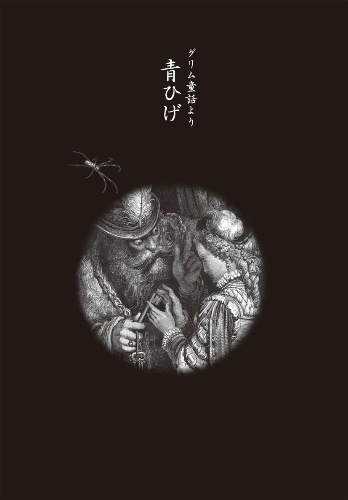
青ひげに見初められた娘
遠い昔のこと。深い森の中に、たいそう立派な城があった。城の中は驚くほど豪華で、壁や天井には金細工の彫刻が施されている。おまけに、家具や銀製の食器などの調度は、すべて城主の紋章が入った特注品。しかも、金色に輝く馬車までもっていた。
城の主は、この地方の領主。高い地位に就き、これほどのお金持ちなら、美しい妻や子どもに囲まれて暮らしていてもおかしくあるまい。だが、彼は一人で孤独に暮らしていた。
なぜなら......、彼の頰はカビのような青ひげで満たされていたからだ。
「領主さまのひげは気味が悪い」
「まるで青いコケのようだわ」
若い娘たちは、陰では領主を「青ひげ」と呼び、決して近づこうとはしなかったのだ。
そんな、ある日のことだ。とある町民のところに、青ひげがやってきた。
「先日、こちらの娘さんを見かけました。ぜひ、妻にもらいたいのです」
突然の申し出に、この家の主人はとまどった。少し考えさせてほしいといい、その日は引き取ってもらった。
だが、あれほど豪華な城に住む領主の嫁になるのだ。決して、悪い話ではない。まずは、本人に聞いてみよう。けれども、娘この家には娘が二人いた。領主が二人の娘のどちらを気に入ったのかがわからない。もちろん、それは娘たちも同じこと。
「それはお姉さまよ。どこで見られたのかしら」
「違うわ。年の若いあなたのほうにちがいないわ。あなたがお嫁にいきなさいよ」
本人たちに聞いても、押しつけ合うばかり。一向にらちが明かないものだから、父親は二人の娘を青ひげの城に遊びに行かせることにした。しかたなしに、娘たちはドレスをまとうと城へと向かった。
城は遠くから見たときよりずっと立派だった。
そして、娘たちを歓迎する晩餐には、大理石のテーブルいっぱいに、いままで見たこともないほどのごちそうが並べられた。ぶどう酒、りんご酒、レモネード、七面鳥やウサギのロースト、ひき肉入りパイ、シロップ漬けのフルーツ。そのどれもが、これまで食べたことのないとびきり上等なもので、身も心も満たしてくれた。
なにより青ひげは紳士的で、意外なことに、ダンスも上手だった。
（こんなすばらしい暮らしなら、幸せになれるかもしれない）
妹はそう思い、「私がお嫁に行きましょう」と父親に告げたのだ。
それを聞いた父親は大喜び。なにしろ、領主は結婚の準備のために、たくさんのお金を用意してくれるといっていたのだから。
ただ、青いひげ以外に、もうひとつ不気味なことがあった。実は、これまでにも領主は何度か結婚をしていた。しかし、その妃たちがみな、行方知れずになっているという噂を聞いたことがあった。こればかりは少し心配ではあったが、それでも、お金のことを考えると、自然と笑いがこぼれてしまうのだった。
それは嫁に行く娘も同じこと。やはり不安だったから、二人の兄に頼んでおいた。
「一週間に一度は、お城の近くまできてね。何かあったら大きな声で叫ぶわ。そしたら、必ず助けにきてね」
夢のような暮らし
結婚式がすみ、いよいよお城で暮らしてみると、想像していた以上にぜいたくな毎日。妃となった娘は、すっかり満足してしまった。
だが、青いひげだけは、どうしても慣れることができない。夜になってベッドに入るときも、必ず明かりを消してくれるよう夫に頼んだ。青いひげが見えてしまったら、気持ちが悪くて、どうしても体を開けそうになかったからだ。
そして、抱かれている間はじっと目を閉じ、夫が果てる瞬間をひたすら待った。そのときはいつも、かつての恋人との甘い時間を思い出していた。娘にとって、恋人とのセックスはとろけるように心地よく、とても幸せなものだったのだ。
（もし、彼と一緒になれたなら、毎晩のように、とろける瞬間を迎えることができたのに）
そう思うと、ぜいたくな暮らしとセックスの快楽、どちらを取るのが幸せなのか、娘は思い悩んだ。だが、夜を過ごしてしまえば、夢のような暮らしが待っている。娘は悩みながらも、ベッドにいるときだけ、目をつぶって耐えることにした。
こうして二ヵ月ほどたった、ある日のこと。夫が家を空けることになった。
「大事な仕事のために、二週間の旅に出ることになった。しばらく家を空けることになる。さびしいだろうが、待っていておくれ。その間は、町から友だちを呼んで遊んでもよいぞ。別荘に行って遊んでもよい。毎日楽しく過ごし、元気でいておくれ」
青ひげは娘にそういうと、鍵の束を渡した。
「いいか、これが宝石部屋の鍵だ。それから、こっちが金貨や銀貨の詰まっている部屋の鍵だ。どこを開けてもいいし、なんでも好きなようにしていい。お前は私の妻なのだからね。だがな......」
それから、小さな金の鍵を選び出すと、こうつづけた。
「お前は知らないが、城のいちばん奥に小さな部屋がある。これはその部屋の鍵だ。その部屋だけは絶対に近づいてはいけない。もちろん、開けてもいけない」
「......」
「これだけはきつくいっておくぞ。もし、お前がその部屋の鍵を開けて中に入ったら、命はないものと思え」
いつもは紳士的な青ひげが、見たことのない恐ろしい顔をしたものだから、娘は黙ってうなずくしかなかった。
次の日、夫は出かけていった。そして、馬車が城門の向こう側に消えたとたん、娘の表情は晴れやかになる。たった二週間でも、あの気味の悪い青いひげを見なくてすむのだ。娘はひさしぶりの解放感に、胸を弾ませる。
それから娘は、町に住む昔の恋人を呼ぼうと、さっそく使いを出した。なにしろ、夫は誰を呼んでも、何をしてもよいといっていたのだ。娘はその言葉通りに、楽しむつもりだったのだ。
昔の恋人は、すぐに城にやってきた。それも、友人を何人も連れて。青ひげがいないと聞いて、誰も彼も、城の中をあちこち見たいという好奇心を抑えられなかったのだ。
「すごい城だ」
「こんなところに領主は住んでいるのか」
娘は先頭に立ち、城の中を探検することにした。城にはたくさんの部屋があって、どこまで行っても、その次の部屋がある。そして、どの部屋も素晴らしい家具や宝石、立派な絵や彫刻、金貨や銀貨で満たされていた。
「おお、これはすばらしい」
「ああ、なんてうらやましい」
「ほんとうに、幸せだな」
誰もが口々にそういった。
その言葉を聞いた娘も、悪い気はしない。毎晩のように気味の悪い思いをしていることさえ口にしなければ、人からは幸福そうに見られ、うらやましがられるのだ。ただの町娘だった彼女にとって、これほど気分のいいことはない。
だが、そのときから、娘の胸に邪気が芽生え始める。夫に禁じられたあの部屋には近づかなかったものの、城のほとんどの部屋を見て回った娘は、想像していた以上に夫が資産家であることを知った。そして、その財産のすべてを自分のものにしたいという欲望が、心の奥底に生まれていたのだ。
秘密の鍵と恐怖の部屋
実はこの日、娘は昔の恋人との逢瀬を楽しむつもりだった。召使いには金を与えて、部屋にとびきり上等なベッドまで用意させていたのだから、恐れ入る。もちろん、昔の恋人にだけ落ち合う部屋の場所を教えておき、そこで待つように伝えておくのも忘れなかった。
だが、しばらくぶりに好きな男と愛し合ってみても、昔のように夢中にはなれなかった。なぜならば、頭の中では、いちばん奥の部屋のことばかりだったからだ。
（城のいちばん奥の部屋が見てみたい。いったい何があるのかしら。きっと、いちばん高価な宝があるにちがいないわ。それを妻に隠すなんて......）
男が帰ってからというものの、いちばん奥の部屋を見たいという気持ちがますます強くなっていった。そして、とうとう気持ちを抑えられなくなってしまう。娘は小さな金の鍵をもち、禁じられた奥の小部屋へと向かった。
「ちょっとだけ。いったい何が入っているか、ちょっと見るだけ。元のように鍵を閉めておけば、きっとわからないわ」
そう何度も自分に言い聞かせても、夫の恐ろしい表情が忘れられない。鍵をもつ手がブルブル震えてしまい、なかなか鍵穴に差し込めない。
（いまなら、やめて引き返せる......）
心の中では、そう思う自分もいた。だが、好奇心のほうが勝り、ついに鍵を開けてしまうのだ。扉を開けると、生臭い臭気が吹き出してくる。
窓は閉めきってあり、部屋の中は暗い。やがて、目が慣れてくると、少しずつ部屋の様子が見えてくる。〝それ〟がなんであるかがわかったとき、娘は悲鳴を上げた。
「キャー!!」
なんと部屋の壁一面に、女性の死体がぶら下がっていたのだ。
頭が切り取られている死体。腹が切り裂かれ、中が空っぽになっている死体。その下には肉の塊も転がっている。ひからびたものもあれば、まだ新しく見えるものもある。そして、骸骨化した死体もあった。床には凝固した血だまりが広がり、壁には無数の血しぶきが飛び散っている。
阿鼻叫喚の様相に娘の意識は遠のいて、その場に倒れそうになる。そのとき、手にしていた金の鍵を落としてしまった。あわてて腰をかがめると、手探りで鍵を捜す。手にべったり血がつき、気持ち悪さに気を失いそうになりながら、やっとの思いで鍵をつかんだ。
だが、気味の悪い血は、鍵にまでついていた。あわてて拭き取ろうとしたが、どうしてもとれない。水で洗っても、磨き粉で磨いてもどうしても落とすことができないのだ。
困り果てた娘はあれこれと考えて、結局、鍵をなくしたことにした。そして、誰も見ていないときを見計らって、鍵を干し草の下に隠してしまった。
そうこうしているうちに、約束の二週間がたった。そして、何台もの馬車にみやげをいっぱいに積んで、青ひげが城に帰ってきた。
（青いひげは気味悪いが、心根はやさしい夫だ。人殺しなどするはずはない）
娘はそう思い込もうとしたが、秘密の部屋を満たしていた死体のことが頭から離れない。吊るされた死体を思い出すと、卒倒しそうになる。
だが、気づかれてはならない。娘は夫の目の前で、精一杯うれしそうに振る舞った。
すべてを知った青ひげ
やがて夜が訪れると、青ひげは待ちかねたように、妻をベッドに誘う。いつなら体を固くしたままの娘も、この日ばかりは声をあげて夫を受け入れた。
ようやく、自分の妻らしくなってきた。青ひげは妻の〝変化〟を素直に喜んだ。だが、それでごまかせるほど、甘くはなかった。
念入りに妻をかわいがり、まどろんでいるところで、青ひげは思い出したように問いかけた。
「ところで、鍵はどうしたかね？」
娘は内心びくびくしながら、鍵の束を夫に渡した。さっそく、青ひげは鍵をひとつひとつ調べ始める。
どうか気づきませんように......娘は必死に祈ったが、無駄だった。
「金の鍵がないぞ。どこへやったんだ」
「あら、うっかりしました。よく探してみます」
「すぐだ。すぐに返せ！」
娘が必死にとりなしても、青ひげは鍵をもってこいと大声で繰り返すばかり。しかたなく、干し草の下から鍵を取り出すと、うつむきながら、夫に手渡した。
「おや、血がついた痕がある。どうしたんだ？」
「さあ、どうしてでしょうか。私にはわかりません」
娘は顔をあげることもできないまま、必死に言い訳する。だが、その態度がすべてを物語っていた。青ひげはすべてを見通したように、低い声でこういった。
「そうか......。あれほどいったのに、やはり、あの部屋に入ったんだな。それでは、お前には死んでもらしかない。今度はお前があの部屋の壁に吊るされるのだ」
娘は涙を流して、懇願するしかない。
「悪いことをしました。許してください。お願いです」
涙ながらに命乞いをされたら、普通の男なら、少しは心を動かされたかもしれない。だが、青ひげは眉ひとつ動かすことなく、剣を取り出すとそれを研ぎはじめた。
「許さんぞ。お前には死んでもらうのだ」
その姿を見た娘は、ついに覚悟を決めた。そして、最後の願いを口にした。
「せめて......、せめて死ぬ前に、神さまに祈りを捧げさせてください」
城の中には小さな教会があった。そこで、最後の祈りを捧げたいと頼んだ。
「いいだろう。ただし、すぐに帰るのだぞ」
青ひげの最期
ひとときの猶予を得た娘は教会を通り過ぎて、急いで塔に上る。運のいいことに、その日は二人の兄と姉たちが城にくる約束の日だった。
塔に上ると、森の向こうから兄たちが城に向かってくる姿が見えた。そこで、兄たちにも聞こえるよう、できるだけ大きな声で助けを求めた。
「助けて！ 助けてぇ!!」
それから踵を返して教会に戻ると、祭壇の前で祈りを捧げた。
「いつまで待たせるんだ！」
しびれを切らした青ひげが、教会に向かって歩いてくる。たずさえた剣が、ギラギラと鈍い光を放つ。
「すぐに出てこい」
さすがの青ひげも、神の前では剣を振るう訳にはいかないのだろう。教会の戸口に立って、それ以上は入ってこない。
「何をしている。早く出てこい！」
興奮している青ひげは、背後から馬の蹄の音が近づいていることにまったく気づかない。
「まだなのか。すぐ出てこい！」
それでも出てこないものだから、青ひげの怒鳴り声が、ますます大きくなる。青ひげは怒り狂い、いまにも教会に入ってきそうな勢いだ。これ以上は時間稼ぎもできない。娘は教会を出ると、夫の足にすがって懇願した。
「ばか者め、もう遅いわ」
青ひげは左手でぐっと娘の髪をつかむと、右手の剣を振り上げる。娘の細い首めがけ、振り下ろそうとしたそのとき、二人の兄が青ひげに襲いかかった。
兄は二人とも軍人で、剣の腕にかけては誰にも負けなかった。いかに青ひげが剣の達人だったとしても、一対二では勝負にならない。青ひげはたちまち追い込まれ、とうとう首をはねられてしまった。
殺人鬼に取り憑かれた不幸な妃たち
妹に案内されて、兄たちは妃たちが眠る恐怖の小部屋を確かめに行く。だが、妹も姉も部屋に入ることができず、部屋の外でブルブル震えているばかり。そこで兄二人が部屋に入って調べると、壁に吊るされていたのは、やはり代々の妃たちだった。
「城の妻となった女たちが消えてしまう」という噂は、ほんとうの話だったのだ。人の所業とは思えない青ひげの残酷さは、まるで悪魔のよう。青ひげはきっと、悪魔に魂を奪われた男だったにちがいない。
それでも、青ひげがたいへんなお金持ちだったというのはほんとうのこと。城は使いきれないほどの財産と、数えきれないほどの財宝で満たされていたのだ。青ひげには跡継ぎもいなかったから、すべてが残された娘のものになった。
だが、未亡人となったからといって、娘が以前のようにぜいたくを楽しむことはできなかった。決して欲張ることなく、財宝はみなで分け合うことにした。
やがて、兄の二人は隊長になり、姉は心を通わせていた男と結ばれ、妹から分けてもらったお金を元手に仕事を始めた。
こうして、驚くほどの財産を得た妹娘は、それからも裕福に暮らした。ただし、二度と男を愛することはなかった。どんな男を見ても、青ひげが生えているような気がして、その手には剣が握られているように見えてしまうのだ。
男と愛し合うこともできず、子どもをもつこともできない。女にとって、これ以上に残酷なことはないだろう。壁に吊るされた代々の妃たちも最後の妃である娘も、青ひげに愛されたときから、悪魔に魂を奪われていたのかもしれない。
■『青ひげ』の原典を読み解く
ほんとうにあった殺人鬼の城
この物語に登場する領主の青ひげは、実在の人物をモデルにしている。15世紀に活躍した、フランスの陸軍元師ジル・ド・レである。彼は百年戦争のオルレアン包囲戦でジャンヌ・ダルクに協力。戦争の終結に貢献し、戦後は「救国の英雄」と呼ばれた。
ところが彼は、百数十人の子どもを性的に凌辱しては殺していた〝狂気の英雄〟だったのである。青ひげのように、悪魔に魅入られた殺人鬼。そんな男が実在したことだけでも、身の凍るほどの恐ろしさを感じる。
伝えられるジル・ド・レは、歪んだ心の男であったようだ。彼は、美しい少年たちを次々に誘拐しては殺した。しかも、できるだけ残酷に、である。それは、祝宴と飲酒に始まったという。酒席が終わると子どもを縛り上げ、「これからすごい性的凌辱をするぞ」と話す。それを聞いてブルブル震えだす子どもを見て、ジル・ド・レは快感を味わったというのである。そして、拷問の後、たいていの子どもは首をはねられた。
やがて、「何人もの少年が失跡している」という噂が、その地方に広がっていく。そして、一四四〇年、サン＝テティエンヌの聖職者を拉致、監禁したことで逮捕。絞首刑にかけられ、死体が火刑にされた。
ときを経てペローの時代になり、ペローは残酷な面をクローズアップしてこの物語を書いたわけである。ただし、子どもを対象とする異常な性的事件はあまりにも残酷だったため、つぎつぎと妻を殺害した男の話に変えたのだ。
なお、今日においては、ジル・ド・レの評伝は、彼の財産を狙う政敵によって、意図的に誇張されたものという解釈もなされている。
くり返される殺人ゲーム
第一次世界大戦後のドイツにも、恐怖の殺人鬼が出現している。それは、ハノーバーに住んでいた肉屋のフリッツ・ハールマンという男である。彼は六年にわたって少年を襲っては殺し、その肉を切り食肉にしていたのだ。自分でも食べていたが、ソーセージにして店先にも並べていたというから、ゾッとさせられる。
彼の倒錯したこの殺意の根源にあるのがサディスティックな性欲なのか、愛するからこそ食べてしまいたくなるという愛情表現なのか、その心理はいまだに解明されていない。
ハーマンの手にかかった犠牲者の数は、二十人以上といわれる。その犠牲者は、決まって美しい少年たちだった。そう、彼は同性愛者だったのだ。だが、当時、同性愛は「人間の道に外れる異常なもの」とされていた。いつも世間から隠れるようにしていたためか、彼らの行動には不可解な部分が多かったため、事件が露呈するのも遅れたのだ。
そうした異常な事件が世間に知られるようになったのは、彼の店で肉を買った女性が、警察に訴えたからだった。買った肉に人間の皮膚の一部がついていたためだ。さらに、それと前後して運河沿いの泥地から頭蓋骨が発見され、鑑定の結果、少年のものと判明した。そして、これをきっかけに、不審な頭蓋骨が次々と発見されたのである。
ついに少年失踪事件の本格的な捜査が始まり、不審な行動の多いハールマンに、強い疑いの目が向けられたのだった。
ひそかにターゲットをしぼった警察は、おとりの美少年を使って監視した。そんな警察の意図を知らないハールマンは、その美少年を部屋に誘い、わいせつ行為を強要したために、とうとう現行犯で逮捕された。こうして、過去の「恐怖の人食い事件」が明らかになったのだ。
ここで見てきたように、いつの世にも、人間の理性を超えた残酷な事件がくり返されている。まるでフィクションの登場人物のような殺人鬼は、現代でも登場しているのだ。少し前の話となるが、子どもたちを次々と殺し、壁に塗り込めた殺人鬼がイギリスにあらわれたのも覚えている方も多いだろう。
青ひげのように、こうした快楽を知ってしまうと、とどまるところを知らないのだろうか。こうした話を聞くにつけ、人間の奥底に潜む闇の深さに怖気を感じずにはいられない。
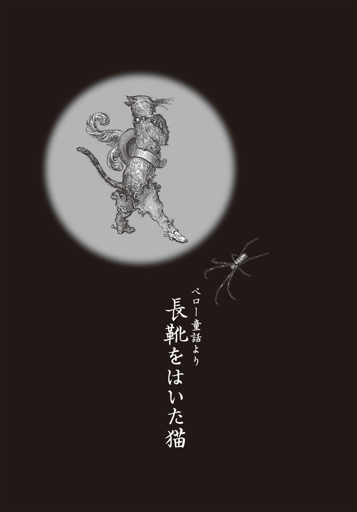
ずるがしこい猫
遺産相続といえば、いまでも骨肉の争いが起こりがちなものだ。人が死んだ悲しみなんかどこへやら。結局、人間は強欲な生き物なのだろう。
だが、それは昔も同じこと。
あるところで、粉ひきの男が三人の息子を残して死んだが、残したものといえば、水車小屋とロバと猫だけだ。決まりに従って、長男が水車小屋、次男がロバ、三男は猫を相続する。だが、三男は、自分の分け前に不満だった。
それもそのはずだ。水車小屋なら粉ひきで食べていかれるし、ロバだって役には立つ。だけど猫なんか......と三男が嘆いていると、長男がこういった。
「猫はいいよな。食べられるし、毛皮であったかい手袋だって作れるじゃないか」
そのとたん、父親のベッドの側で丸まっていた猫の目がぎらりと光ったのだが、それには誰も気づかなかった。
だが、お人よしだけが取り柄という三男は、とても食べる気にはなれない。ましてや、父親がかわいがっていた猫だから、なおさらだ。
「ここは今日からオレの家さ。二人はさっさと出ていってくれ」
とりあえず質素な葬式がすむと、長男はそうそうに次男も三男も追い出してしまった。まさに兄弟は他人の始まり。これも、昔からのことだ。
三男は猫を抱いて、おろおろと行くあてもなく家を出た。やがて、町はずれにさしかかり、長男の住む粉ひき小屋が完全に見えなくなると、それまで三男の腕に抱かれていた猫が、ピョンと地面に飛び下りた。
ところが、地面についたその瞬間、なんと猫は、しなやかな体つきの若者に変身したのである。だが、注意深く見れば、耳はとがり、目はギラギラと輝いている。なによりも手足が短く、けっして恰好のよい若者とはいえなかった。猫はこういった。
「力を合わせていこうじゃないですか。でも、その前にお願いがあります。私に、大きな袋と長靴を一足、用意してくれませんか」
そういうのも無理はない。その時代、靴をはいていないのは奴隷の印。靴なしのままでうろうろしていれば、捕らえられ、遠くの町に売られてしまうのがオチだった。
このとき、猫は猫で、三男坊の青年を頭の中で値踏みしていた。
これまで長いこと、粉ひき家の飼い猫などというつまらない人生を送ってきたが、ようやく、あの小屋から解放されたのだ。これからは、人間がもっているものをすべて手に入れてやろう。そのために、この若い男はいったい、なんの役に立つだろうか。
三男はぼんやりしていて、頭も悪い。だが、滅法、男前だった。深く刻まれた目、高く通った鼻筋。なによりも足が長く、胸板が厚いのだ。若い女なら誰でも一目でころりと参ってしまうにちがいない。
（この青年となら、ひと勝負できそうだ）
猫はそう計算していたのだ。
一方の三男は、なんだか薄気味悪いと思っていた。
（この猫は、まだ父親が生きているころから、妙にえらそうな奴だったしな）
まだ、粉ひき小屋にいたころ。この猫は、じっと死んだふりをするのが得意だった。それでいて、目の前をネズミが通ると突然、目を見開き、ぱっとつかまえると、一呑みにしてしまうのだ。あるときには、死んだように後足で柱にぶらさがっていて、ネズミが天井をかけ回ると、素早く身をひるがえして襲いかかる。なかなかずるがしこかったのだ。
三男に、逆らう勇気はない。なけなしの金をはたいて、猫に最上級の長靴をあつらえた。ピカピカ光った牛皮製で、唐草模様に猫の首を獅子のようにあしらった飾りを彫り込んだ、それはみごとなものだった。この長靴のお陰で、猫は一見すると立派な若者に見えた。
領主は食べ物で、王女は男でつり上げる
二日も歩いたろうか、二人は野ウサギが大好物なことで知られる領主の土地についた。
「よし！ ここで野ウサギをものにして、領主にとり入ろう」
猫は三男にいった。
「でも、野ウサギはなかなかつかまるもんじゃない」
三男がポカンとしていると、猫は大豆かすだの、野ウサギの大好物の葉っぱだのを集め、袋をいっぱいにする。それから、わざと口を少し開けて中が見えるように細工をすると、さりげなく草むらに隠し、自分も少し離れたところに身を隠した。
しばらくすると野ウサギがやってきて袋の中に飛び込み、ムシャムシャとわき目もふらずに大豆かすを食べはじめた。猫は身をひるがえして野ウサギに飛びつき、鋭い歯で喉を軽くひとかみした。絶対に殺してはならない。生け捕りにして、領主にさしだすのだ。
野ウサギは小さな悲鳴をあげると、そのまま気絶してしまった。
猫はなにごともなかったように口のまわりを整えると、野ウサギをもって、領主のところに出かけていった。そして、城の門番に向かって、すまし顔でこういった。
「私はカラバ侯爵の従者でございます。この野ウサギは、わが主人、カラバ侯爵から領主さまへのほんのご挨拶のしるしです」
「カラバ侯爵？ さて、そんな貴族は聞いたことがないが」
門番の報告を聞いて、一瞬、領主はそう思ったが、なに、正直なところ、領主は国中の貴族の名など、ろくすっぽ覚えていなかったのだ。
そもそも生まれてから、努力というものをしたことがない。なぜなら、黙っていても領主の椅子が転がり込む星の下に生まれたのだ。努力なんかしなくても、ほしいものはたいてい手に入るのだから。
「で、そのカラバ侯爵の従者とは、どんな様子の者かな？」
「なかなか身なりのよい者でございます。それはみごとな皮の長靴をはいております」
みごとな長靴をはいている？ 領主はその一言で、なんなく信用した。皮の長靴をはいた人間など、領内でもそう多くは見かけない。
「その者を城内に連れてくるように」
領主のひとことで、門番は若者を城内に案内した。猫は、カッカッと長靴の音を響かせながら領主の前に進み出ると、袋の中からさっきの野ウサギを取り出した。
「この野ウサギはつかまえたばかりでございます」
動物や鳥を生のまま食べるのが大好きな領主は、新鮮な野ウサギの血がなによりの好物だった。生け捕りの野ウサギを目の前にすると、もうこらえられず、その場で小刀を抜いて野ウサギの首をはね、さかさまにして、したたる血を口に受けてたらふく飲んだ。
「おお、うまい、うまい。最近、これほど新鮮な血を飲んだことはなかったなぁ。うまい、うまい」
そして、鮮血で真っ赤に染まった口許を拭こうともせずに、猫を見てこういった。
「そちの主人によろしく伝えるように。そうじゃ、誰かおるか。この者に袋いっぱいの金貨を与えよ」
袋いっぱいの金貨をもらって猫が帰ってきたので、三男は大喜び。やっぱり、猫をもらってよかったと自分の強運を祝って、ワインで乾杯を繰り返した。それから三男は毎日、酒ばかりを飲んで暮らしていた。
猫のほうは、その次の日も袋いっぱい小麦を入れて森に出かけ、野ウサギのときと同じ方法で、ツグミやウズラなどの獲物を捕らえては領主に届けていた。猫の届ける獲物はどれも生け捕りしたものばかりだったから、いまでは領主も、長靴をはいた若者があらわれるのを待ちこがれ、生の獲物がなければ夕食を食べようともしなかった。
長靴をはいた若者は、いまでは門番とも親しく口をきくようになり、城の門を自由に出入りできるまでになっていた。
ある日のこと。猫は門番から耳寄りな話を聞いた。領主が、一人娘の王女を連れて、川に水遊びに出かけるというではないか。
猫の脳裏に、またしても悪巧みがひらめいた。なにしろ三男坊は、なかなかの男前。涼しい顔だちをしていながら、体は筋肉が盛り上がり、すらりと伸びた手足をもっていた。そして、股間の中央には、こんもりと盛り上がった逸物をもっていたのだ。
猫は急いで三男のところに戻ると、さっそく知恵を授けた。
「いいですか。私のいうとおりにするんですよ。真っ裸で川で遊んでいてください」
合点がいかなかったが、三男は猫の話を真剣に聞いた。これまでも、猫の言う通りになってきた。なにより、猫が金貨をもち帰ってくれるので、毎日のように飲みたい放題の生活ができるのだった。
いわれるままに真っ裸になると、三男は朝から川辺で遊んでいた。すると昼の少し前、領主と王女を乗せた馬車が川のほとりを通りかかった。
そのとき、猫が大きな声で叫んだ。
「大変だ！ 大変だぁ！ カラバ侯爵さまが溺れている」
いまでは、王の従者はみな、長靴をはいた若者を、領主がどれほど大事にしているかを知っていた。この若者を粗末にあしらっては、自分の首があやうくなる。
従者は、あわてて馬車を止める。
「領主さま、いつもの長靴をはいた若者でございます」
「さて？ なに用じゃ？」
すると、長靴をはいた若者が転げるように、領主の前に飛び出してきた。
「お願いでございます。主人のカラバ侯爵が溺れております」
「それは大変じゃ。それ、急いで侯爵を助けるのじゃ」
領主の命令一下、従者たちは川へと飛び込んだ。そして、侯爵はすんでのところを救い出されたのだ。だが、川から引き上げられた侯爵は何も身にまとっていなかった。
「キャア！」
王女は悲鳴をあげてみせたが、顔を隠した五本の指の間から、しっかりと侯爵の体をまぶたに焼きつけた。年頃だった王女は、本能的に、男の体にとても強い興味をもっていたのだ。
とくに、王女の心に焼きついてしまったのは、侯爵の体の真ん中にぶらさがっている逸物だった。なぜだかわからないが、心惹かれて、全身が熱くほてってくる......。
「ご主人さまが川遊びをしようと、着ているものは、川べりの草むらに置いておいたのです。ところが、何者かが盗んでいってしまったようでございます」
ほんとうは、服は猫がこっそり隠してしまったのだが、猫は素知らぬ顔をしてこういった。それを聞くと、領主は気の毒がって、こう命じた。
「誰か、城に帰って、わしの衣装部屋からできるだけ上等の服をもってきて、カラバ侯爵に着せてあげるように」
領主にもらった服は、まるで計ったようにぴったりだった。それを着ると侯爵の男ぶりは一段とあがり、王女でなくてもほれぼれしてしまうほどになった。
猫は澄ましてこういった。
「領主さま、こちらがわが主人、カラバ侯爵でございます」
カラバ侯爵とはなんのことだ？ 三男の頭の中には、一瞬、大きな疑問が生じたが、なにしろ、このところ、ずっとこの猫のいうがままに生きてきたのだ。もうすっかり、猫の思うままに振る舞うくせがついていた。
「カラバでございます」
見よう見まねで貴族のようにひざまづいて、領主に挨拶した。
「いつもいつも、従者どのから結構なものを......」
「いえいえ、私のほうこそ、過分にお礼をいただいて恐縮しております」
こんなやりとりを見ていた王女の胸の中には、すでに熱い炎が燃えはじめていた。
「なんと素敵な方。こんな立派な方がお父さまの領内にいらしたとは......」
領主と王女は、ほんとうは粉ひきの三男坊にすぎないカラバ侯爵をすっかり気に入り、馬車に同乗させると、さらに川の上流まで遊びにいった。
図太い猫の野望
このとき、猫の頭の中には、さらに壮大な野望があった。
川の上流一帯は、国中でも一、二を争う大金持ちの領主の持ち物だった。この領主は冷酷にして残忍、人を喰うことで知られていた。命令にそむけば頭から食べられてしまうという恐怖から、人々はどんな無理難題にも絶対に服従するという。
馬車には乗らず、一人で先を急いだ猫は、この人喰い鬼の領地まで先回りしていた。そこでは、農民たちが牧草を刈り、その先の農地では小麦の収穫をし、さらにその先の林では、樫の木を切り倒し、薪をつくっていた。
猫は少し高い場所から、遠くの薪作りの農民にまで響くように大声でこういった。
「いやいや、ご苦労。私はお前たちの領主の元で働く従者だ」
よく見れば、立派な長靴をはいている。領主の従者でなければ、こんな立派な長靴をはけはしまい。領民たちは、みごとな長靴をはいているというだけで、頭から猫の言葉を信じてしまった。猫はつづけてこういった。
「まもなく、ここに立派な馬車が通りかかるはずだ。それは、隣国の領主さまの馬車なのだが、きっと、この地は誰のものじゃとお尋ねになるだろう。そのときはいいか、この土地はカラバ侯爵のものだ、と答えるのだぞ。さもないと、お前たちひとり残らず四つ割りの刑にした上で、肉を細切れにして、領主さまにさし出してしまうからな」
四つ割りの刑とは、両方の手足を四匹の牛に結びつけたところで牛にムチを入れるという、残虐きわまりない刑罰だ。牛は四頭とも違った方向にメチャクチャに走り出すから、手足はあっという間にバラバラになってしまう。メリメリと肉の裂ける音、ボキボキと骨がちぎり取られていく様子は、見るも無残だった。
ところが、人はなかなか絶命しないものだ。手足をもぎとられ、両肩、両股からだらだらと血を流しながら、それでもなおうめきつづけているのである。
もっと残虐なのは、それを見物する人が黒山のように集まってくることだった。恐ろしい、二目と見られないと口にしながら、それでも四つ割りの刑が行われる日は、領地内の人々は一人残らず、見物に出かけるのである。
「ヒェーッ、おそろしい！」
農民たちは身を震わせた。その上、彼らは、この地の領主が人を喰うことを知っていた。四つ割りの刑にされた上に、肉を食べられてしまうなんてあんまりだ。
「わかりました。絶対にそう申します」
農民たちは、口々にそう約束した。やがて、立派な馬車が通りかかると、猫が予想したとおり、領主は、馬車の中から、農民たちにこう尋ねた。
「この土地は、どなたの領地かな？」
「はい、カラバ侯爵さまの領地でございます」
農民たちは、口を揃えてこういった。
「なんと、実り豊かな土地じゃ」
領主は、カラバ侯爵の広大な領地にすっかり驚いていた。さぞかし裕福な貴族にちがいない。そして、それは王女も同じだった。
このころには、王女も三男にすっかり夢中になり、その目は熱病のようにうるみ、心臓は海のように波うっていた。
（素敵なお姿に立派なお体、そのうえ、これほどの領地をおもちとは......）
三人を乗せた馬車が人喰い鬼の領地をゆっくりと走り抜けていると、長靴をはいた猫はさらに先を急ぎ、人喰い鬼の城にたどり着いていた。
この人喰い鬼の自慢は、なんにでも姿を変える魔法が使えることだった。すでにそうしたこともすっかり調べ上げていたのである。
猫は城の門番にこういった。
「近くを通りかかった者でございます。ぜひ、ご領主さまにお目にかかりたいのですが」
「なんの用じゃ」
「こちらのご領主さまは魔法の名手だとか。ぜひそれを見せていただきたいと思いまして」
門番が領主にそれを告げると、人喰いの領主はこういった。
「で、どんな様子の若者じゃな？」
「それはみごとな長靴をはいております」
「ほう？ みごとな長靴をはいておる。それなら、きっと素性も確かな者じゃろう」
こうして、長靴のお陰でまんまと城内に入り込んだ猫は、人喰い領主の前に進み出た。領主は領主で、長靴をはいた若者を上から下まで眺めまわし、思わず、舌なめずりしそうになるのを必死で押さえていた。
（なんとうまそうな若者じゃ。このところ、働きすぎで筋ばった農民の肉ばかり食べておった。今日は久しぶりに、若者のやわらかい肉にありつけるかもしれない......）
それを知ってか知らずか、猫は得意の猫なで声でこういった。
「ご領主さまは、魔法をお使いになれるとか。何にでも化けられるという噂は、ほんとうでございますか？」
「ふむふむ。もちろん、その通り」
「たとえば、ライオンにでも変身できるとおっしゃいますので」
「何をいうか。そなた、わしの魔法の力を疑っておるな。よいか、そこで見ておれ！」
何かがはじけるような音がしたかと思うと、目の前が一瞬真っ暗になり、次にパッと明るくなったときには、一頭のライオンが堂々とした風貌で座っていた。
「ヒェエェーッ！ これが領主さまとは！ なんと素晴らしいお力だ」
猫は大げさに驚いてみせたが、領主は得意のあまり、その驚きようがいささか不自然であるのには気づかなかった。
また、一瞬の暗闇が訪れ、ふたたび明るくなると、目の前に元通りの人喰い領主が座っていた。猫はギラギラと異様なほど目を光らせ、さらに領主に近づくと今度はこういった。
「でも、領主さまはネズミみたいなちっぽけなものには、化けられないのでございましょう？ どう考えても、自分よりも小さなものに化けるなんて、できない相談でございますからね」
「何を無礼な。わしにできない魔法はないことを、おぬしは知らぬのか。ネズミだろうと、コウモリだろうと、何にでも化けられるぞ」
そういうが早いか、ポンと小さな音がした。あたりが一瞬暗くなったかと思うと、ふたたび明るくなったときには、目の前に小さなネズミがいるだけ。
（しめしめ、馬鹿な領主よ）
領主は調子にのって、床をちょろちょろ走り回る。どこから見ても、本物のネズミに化けたことを自慢したかったのだろう。
猫は、しばらくネズミの様子を眺めていたが、やがて目にも止まらぬ早さでパクッと一呑みしてしまった。
あらためて城を見回すと、その豪華さは想像以上だった。天井も窓枠もすべて金でつくられ、窓にかかったカーテンには宝石が縫い止められている。倉を開けると、そこには金銀財宝が山と積まれており、ふたたび扉を閉めるのに苦労したほどだった。
それから猫は城門のところに駆け寄ると、門番にこういった。
「まもなく馬車がやってくるだろう。この城は誰のものか？ と聞かれたら、カラバ侯爵の城だと答えるのだぞ。もし、そう答えなければ、四つ割りの刑にして、肉は川に投げ捨ててしまうからな」
そう言い終えたころ、城に通じる橋を渡る馬車の音が響いてきた。
猫は城内に戻ると、立派なダイニングルームへと足をむけた。折しもその日は、客人が訪れる予定であった。食卓には、これまで見たこともないご馳走が並んでいる。
やがて、城に馬車が到着すると、猫は走り出て、こういった。
「カラバ侯爵のお城にようこそ！」
猫は侯爵になりきっている青年に、こう耳打ちした。
「しばらく、城の中を案内していてくれ」
「馬鹿をいうな。この城のことなど、何も知らぬよ。どうしたらいいか......」
「黙って連れ歩くだけで、勝手に感心してくれるだろうよ」
その通り、領主と王女を連れて城内を歩くと、二人は口々に感嘆するばかり。壁のタペストリーは最高級のゴブラン織りだとか、壁の絵は誰々の傑作だとか、三男にはわけのわからないことをいって、ほめそやすのだ。
「これだけコレクションするには、さぞかし、莫大な富を要したことでしょうな」
そうこうする間に、猫は門のところに行き、この日の客人をみな追い払っていた。
なんとまあ、抜け目のないことよ。
やがて、ダイニングルームでは、カラバ侯爵と領主、王女の食事が始まった。
このころには、領主もすっかり侯爵に惚れ込んでいた。人並はずれた容姿と、たくましい体。そのうえ、自分の領土の何倍もある広大な領地と、これだけの富をもっているのだ。世界中を探しても、これほどの男がほかにいるとは思えない。
食事が進み、ワインの酔いがほどよく回ったころ、領主は王女にこういった。
「わしは一人でそっと帰るからな、よいか、今夜はカラバ侯爵と共に過ごすのだよ」
王女はこっくりとうなづいた。可憐な顔をしているが、王女はすでに女のしたたかさを十分に身につけていたのだ。
その夜、王女は侯爵のベッドにそっとしのび寄った。侯爵は、待ち焦がれていた王女を固く抱きしめると、やがて、二人の体はひとつに溶け合った。
王女はたちまちめくるめく快感に貫かれ、何度となく絶頂に達しては、気が遠くなりかけた。そして明け方ごろ、王女はようやくまどろみ始めた。
これまで体験したことのない快感に身も心もとろけてしまった王女は、ベッドの下に、あの長靴が脱ぎ捨てられていることになど、まったく気がつかなかった。
ベッドに寝ていたのは、実は、あの長靴をはいた猫だったのだ。
王女の夫の正体は？
三人が食事をしている最中のことだ。
猫は控えの間で、腹に飲み込んだ人喰い鬼を吐き出していた。一呑みにしただけだったから、人喰い鬼のネズミは、まだかろうじて生きていた。
「これからは、私のいうことに絶対服従すると誓うならば、命だけは助けてやろう」
人喰い鬼も死の恐怖には勝てなかった。体中をぶるぶると震わせて、うなずいた。
「はいはい、なんでもいいつけ通りにいたします」
「それならば、魔法の力で、私の姿をあそこにいるカラバ侯爵そっくりに変えてくれ」
食事を終えたカラバ侯爵こと三男を、猫は控えの間に呼び込んだ。そして、何も知らぬ三男がやってくると、猫は小さく合図をした。すると、小さな爆発音がして、一瞬、部屋が真っ暗になる。そして次の瞬間、長靴をはいた猫の若者の姿は、侯爵そっくりの、見目麗しく、凜々しく、たくましい体の持ち主に変わっていた。短い足も、毛むくじゃらの体も、どこにも残っていなかった。
とうとう、長靴をはいた猫の若者は、持ち前の知恵で、容姿のコンプレックスまで解決してしまったのだ。
その代わりに、人喰い鬼は、長靴をはいた猫の若者に変身させられてしまう。かわいそうなのが、カラバ侯爵、つまり粉ひきの三男坊だ。彼は、物言えぬただの猫に姿を変えられてしまったのだ。
そればかりではない。猫に姿を変えられた粉ひきの三男坊は、ネズミのはい回る天井裏にとじこめられてしまったのだ。侯爵のことしか頭にない王女が、猫が一匹増えても、姿を消しても気がつくはずもなかった。
しばらくすると、猫のカラバ侯爵と王女の盛大な婚礼が行われ、二人はめでたく夫婦の契りを結んだ。王女のお腹にはすでに侯爵の種が宿っており、ウエディングドレスのお腹は、かすかにふくらみを見せていた。
やがて、月満ちて、玉のような王子が誕生した。
その後、義父が亡くなると、猫のカラバ侯爵はその領地も相続し、さらに広大な領地を手に入れた。豊かな農地からは毎年、多くの収穫があり、いくら使っても財産は増える一方。王女との相性もよく、二人の結婚生活は幸せに過ぎていった。
そうそう、二人にはひとつだけ悩みがあった。大切な王子に、摩訶不思議な性癖があるのだ。この王子は、なによりもネズミが大好物なのだ。毎日のように城の食糧庫にしのび込んでは、ネズミを追いかけ回すのである。
もっとも、その理由を知っているのは、父親のカラバ侯爵だけ。だが、困ったことに、侯爵自身も、ネズミを追いかけ回したいという衝動を押さえられなくなってきているとか。
■『長靴をはいた猫』の背景を読む
古代より伝わる猫信仰
『長靴をはいた猫』は、昭和44年にテレビアニメ化されており、日本でもなじみ深い童話のひとつである。もともとは、ヨーロッパに伝わる民話で、１６９７年に出版された、シャルル・ペローによる『寓意のある昔話、またはコント集～がちょうおばさんの話』に収録された物語がもっとも有名だ。それ以前のものでは、１６３４年に出版された、ジャンバティスタ・バジーレによる『物語の物語、または小さき者たちのための楽しみ／ペンタメローネ』に収められているほか、『グリム童話』の初稿にも『靴はき猫』という題名で収録されていた。さらに、シチリア島では、ほぼ同一の内容で、猫ではなく狐が主人公の物語『ジョヴァンヌッツァ狐』も伝わっているが、その根底に流れているのはヨーロッパの猫信仰だと考えられている。
その原点は、紀元前二九世紀から前二七世紀のエジプトにまでさかのぼる。猫は古代エジプト人がはじめて家畜とした動物といわれており、エジプト先王朝時代の遺跡の墓でも猫の骨が発見されていることから、紀元前４０００年紀後半には家畜化されていたと考えられている。こうした背景から、ファラオの守護者、家の守護者である猫の女神「バステト」が生みだされたのだ。
当初は、このバステトは猫ではなく、雌ライオンの頭部をもつ姿で崇拝された。しかし、紀元前１０００年ごろには猫の姿、あるいは猫の頭部を持つ人間の姿とされるようになっていく。いずれにしても、猫の精力と敏捷さが賛美された信仰であるが、猫そのものも神聖なものとして扱われるようになった。三毛であったり、瞳の色が珍しいと、とくに敬意が表されたという。
むろん、死ねばミイラにされた。とくに、猫崇拝の中心地ブバスティスの猫のミイラの大祭は、外国にも知られるほど有名である。毎年、数万の群衆が国中から集まり、フルートとカスタネットの調べにのせて、冗談を言い合い、仮面をつけて街中を練り歩くのだ。信者たちは猫の像や、ミイラにした飼猫の屍体を数限りなく奉納したので、女神の聖所も埋もれるほどだったという。
このバステト女神信仰がギリシア・ローマを経て、古代のガリアやケルトにも及び、定着したのだった。
アイルランドには「魔物猫（デーモン・キャット）」や「墓場猫」など、人々が怖れおののく猫がいたが、その特徴は人間の言葉を喋ることだった。ヨーロッパの猫神は、ほとんどがこの特徴を備えていて、『長靴をはいた猫』の猫も例外ではない。
ローマのディアナ女神は、ヨーロッパ中世初期の魔女信仰において、既にその祖先神とされていた。だから、その使者である猫も、魔女の重要な「使い魔」として崇拝されていたのである。
魔女の使い魔であった猫がモデル？
十三世紀始めの魔術書『皇帝の閑居』には、「化け猫をこっそり見張って捕え、切りつけると、次の日に、手足に怪我をした女が姿を見せる」という〝魔女の見分け方〟を記した一節がある。このように、森では野ウサギ、街や村では猫が、魔女が常用する「呪物」だったのだ。現に、十六～十七世紀のイギリスで行われた魔女裁判では、このような話が実際の証拠として提出され、たくさんの魔女が有罪になった。
十七世紀に出版された『悪魔学』では、「最近の証言や告白に明らかなように、魔女がウサギや猫などに化けるのは普通のことであり、その真実性を疑うのは愚か者だけである」と、魔女の猫信仰の正当性をハッキリと明言している。
さらに、魔女はこの使い魔の猫に自分の血を吸わせて育てていた。その理由は、「使い魔」は悪魔からの頂戴物だったため、ことのほか大切にし、上手に「悪霊」に育て上げなければならなかったのである。さらに、魔女は自分の使い魔を他人に譲るまでは死ねないといわれるほど、魔女と猫は密接に結びついていた。
当然ながら、人々は魔女と同じように、その使い魔である猫も恐怖の対象であった。悪霊に昇華すれば、人々を脅し、ほかの魔法使いまで騙す術すら身につけると考えてもおかしくない。物語に登場する長靴をはいた人語を解する猫は、猫の狡猾なイメージに加え、こうした使い魔としての恐ろしさが組み合わされて生まれてきたのかもしれない。
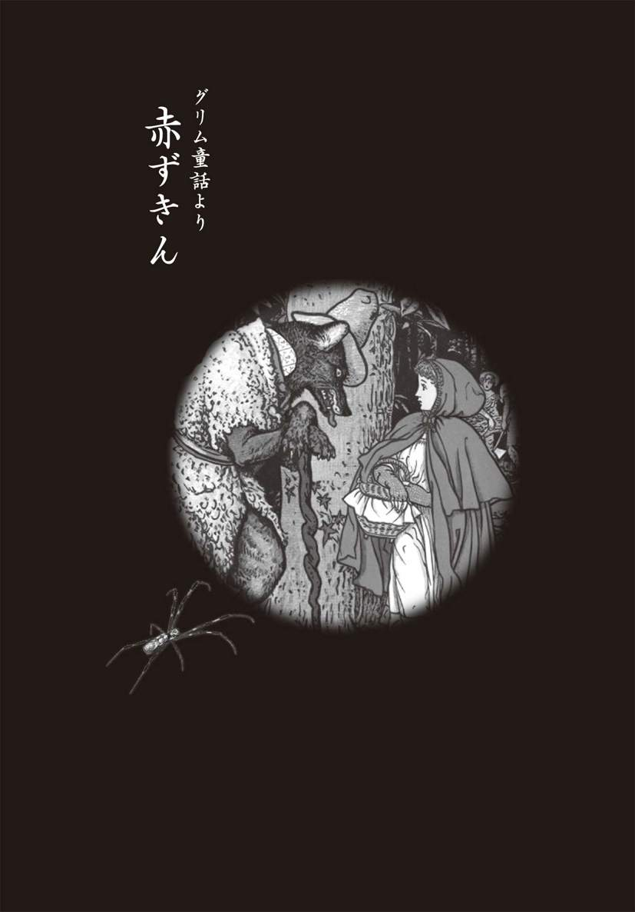
たった一人で森に住むおばあさん
遠い昔、あるところに、「赤ずきん」と呼ばれる小さな女の子がいた。
赤ずきんは、誰からも愛される、とてもかわいい娘だった。しかし、誰よりもかわいがっていたのは、その娘のおばあさん。おばあさんがつくってくれた上等のビロードの赤いずきんがお気に入りで、娘はいつでもそれをかぶっていた。そして、いつの日からか、「赤ずきん」と呼ばれるようになったのだ。
ある日のこと、母親が赤ずきんに、こう言づけた。
「お菓子とぶどう酒を、おばあさんのところに届けてきてちょうだい。おばあさんは病気で体が弱っているけど、これできっと元気が出るわ。おばあさんにあげる物はもうないないから、よそ見をしないで行くのよ。転んでビンを割ってしまったら、おばあさんは元気を出せなくなってしまうでしょ。おばあさんのお家では、ちゃんとお行儀よくしてね」
赤ずきんは、さっそくお菓子とぶどう酒をもって出かけた。おばあさんは村から離れた森の中で、たった一人で暮らしていたのである。
悪いオオカミとの出会い
お使いの途中、赤ずきんは、森の中でオオカミに出会う。母親も「オオカミに注意しなさい」と教えてはくれなかったから、赤ずきんはニコニコして話しかけた。
「こんにちは、オオカミさん」
「おや、こんにちは。どこへ行くのかい？」
「おばあさんのところに、お使いに行くのよ」
お使いができるようになったことがうれしく、赤ずきんはちょっぴり自慢気に答えた。
「何をもっているんだい？」
「お菓子とぶどう酒よ。病気で弱っているおばあさんに元気をつけてもらうの」
赤ずきんと話をしている間に、オオカミは思わず、舌なめずりをしていた。
（お菓子とぶどう酒。これは、久しぶりにおいしいものにありつけるぞ。それになにより、この赤ずきんだ。柔らかくておいしそうな肉。これはご馳走だ。おばあさんはちょっと固そうだけど、お腹がすいているから、こちらもいただくとしよう）
オオカミはしばらく赤ずきんと並んで歩きながら、警戒されないように、やさしく話しかけた。やがて、足を止めると、オオカミはこういった。
「ねえ、赤ずきん。きれいな花が咲いているよ。小鳥たちもあんなに楽しそうに歌ってるじゃないか。なぜ、もっとまわりを見ながら歩かないのかい」
赤ずきんが周囲に目をやると、オオカミが言う通り。きれいに花が咲き、木漏れ日がレースの模様のようにきれいな影をつくっていた。小鳥のさえずりも、それは楽しそうだ。
「そうだ、おばあさんに花束をつくっていこう」
赤ずきんはきれいな花を摘もうと、道からはずれてしまう。そして、一本、また一本と花を摘んでいるうちに、どんどん森の奥に入ってしまう。
この間に、オオカミはまっすぐおばあさんの家に向かっていた。
トントンと扉をノックすると、弱々しいおばあさんの声がする。
「そこにいるのは誰？」
「赤ずきんよ。お菓子とぶどう酒をもってきたの。鍵を開けてちょうだい」
「ごめんね。体が弱って起き上がれないんだよ。......扉の把手を下げて、それから力を入れて引いてごらん」
言う通りにすると、扉はパッと開いた。オオカミは素早く中に入ると、まっすぐベッドへ向かう。そして、おばあさんを裸にすると、思い切り大きな口を開けて一呑みにしてしまった。それから、急いでおばあさんの服を着て、ずきんをかぶって、ベッドに横になり、赤ずきんがやって来るのを待った。
耳まで割けた大きな口
そのころ、赤ずきんはきれいな花を探し求め、森のあちこちを走り回っていた。やがて、両手にいっぱいの花を摘むと、ようやくおばあさんの家にやってきた。
すると、なぜかおばあさんの家の扉が開いている。
病気で寝ているはずなのに......。
部屋に入ると、なんだか胸騒ぎがする。部屋の感じがどこか変なのだ。ベッドのカーテンを開くと、おばあさんが向こうむきに寝ている。でも、ずきんから大きな茶色の耳がはみ出していた。
「おばあさん、どうしてそんなに大きな耳なの？」
「お前の声がよく聞こえるようにと、神さまにお願いしたんだよ」
ベッドに近づいてよく見ると、おばあさんはギラギラと光るとても大きな目をしていた。
「おばあさん、なんて大きな目なの」
「お前がよく見えるようにね」
「おばあさん、なんて大きな手をしているの？」
「お前をしっかりつかまえられるようにね」
「でも......、おばあさんの口はそんなに大きかったかしら」
「それは、お前を食べやすいように......」
最後の言葉をいい終わるか終わらないかのうちに、オオカミは赤ずきんをガブリと呑み込んでしまった。それからお菓子やぶどう酒も、心ゆくまでに楽しんだ。
オオカミはすっかりお腹がいっぱいになり、そのうち、ぶどう酒の酔いも加わって、ぐっすり寝込んでしまう。ベッドに横になると、ものすごいいびきまでかき始めた。
ちょうどそのとき、猟師がこの家の側を通りかかった。いつもは静かな家なのに、なぜ、今日はこんなにすごいいびきが聞こえてくるのだろう。不思議に思った猟師が家に入ってみると、オオカミがだらしない顔をして寝ているではないか！
このオオカミは人食いで有名で、猟師たちが必死に探していたのだ。
「こんなところでのうのうと寝ているなんて。さあ、今日こそ退治してやるぞ」
鉄砲をかまえたとき、猟師はおばあさんの姿が見えないことに気づいた。きっとオオカミが食べてしまったにちがいない。見れば、オオカミのお腹がピクピクと動いている。
そこで猟師は撃つのをやめにして、はさみでオオカミのお腹をチョキチョキと切り割いてみた。すると、赤ずきんがオオカミの腹から飛び出してきたのである。
「びっくりしたわ。オオカミのお腹の中は真っ暗なんですもの」
つづけて、おばあさんが出てくる。
「外に出て、大きな石を拾っておいで」
猟師にいわれて、赤ずきんが大きな石を拾ってくると、猟師はそれをオオカミの腹に詰め、切り開いた腹をざくざくと縫い合わせておいた。
しばらくして、目を覚ましたオオカミは、猟師の姿にびっくり仰天。見れば、赤ずきんもおばあさんもそこにいる。
こりゃ、やばい！
あわてて逃げ出そうとしたが、お腹の石があまりに重く、ばったり倒れた。その衝撃で腹が破れ、オオカミは死んでしまった。
猟師はオオカミを仕留めて大喜び。おばあさんと赤ずきんも抱き合って無事を喜んだ。
それから赤ずきんは、お母さんにいわれたとおりによそ見をせず、家に帰ったとさ。
■『赤ずきん』の原典を読み解く
森の老婆の謎
おばあさんになりすましたオオカミがベッドに寝ている......。
『赤ずきん』に登場する絵は、子ども心にも強烈な印象を与えるものだ。いうまでなく、世界中の子どもたちが知っている『赤ずきん』だが、なぜ、おばあさんは一人で森の中に住んでいたのだろうか？
答えは簡単。それは「姥捨て」だったのだ。
赤ずきんの両親は、手のかかるおばあさんの面倒をみるのに疲れ果て、その命を、森に住む呪術を使う民に託していたのである。この時代、ヨーロッパの森の中には、傷つけられても殺されてもかまわないという前提で、同じような境遇の年寄りが、あちらこちらに建てられた小屋で過ごしていた。やがて、森の民が年寄りを殺して内臓を取り出し、肉や骨はオオカミが平らげて、きれいにしてくれる。これが当時の世の常といえた。
それではなぜ、小さな女の子を一人で、危険がいっぱいの森へ使いに出したのだろうか。赤ずきんもまた、必要な子どもではなかった。上の兄二人と姉は、もう農作業や家事も手伝えるが、末娘で幼いこの子は、とくに望んだわけでもないのに生まれてしまった。両親は、わが子を自分たちの手で絞め殺すという大罪は犯したくはなかったが、異教徒やオオカミが上手に殺してしまったらしかたがない。だからこそ、わざと目立つ装いをさせて、森に使いに出したのだ。
そう、彼らは「口減らし」を望んでいたのだ。
こうした背景には、慢性的な貧しさがあった。十九世紀に産業革命に成功するまで、ヨーロッパは想像を絶する貧しさにあえいでいた。さらに当時はひどい冷害で、麦も野菜も満足に育たない状況が長くつづいていたのだ。今日のヨーロッパの主食ともいえるポテトが南米から渡ってきたのは十六世紀以降のこと。それまでは、わずかに実を結ぶ麦からパン以外に口にできるものはほとんどなく、ごくまれにミルクやチーズ、牛の肉、鶏の肉などを口にできればいいほうだった。
これが当時の食生活だったのだ。たった一切れのパンを盗んだジャン・バルジャンの物語が伝えるように、多くの人がいつも飢え死に寸前の状態にあったのである。だから、役立たずになった年寄りを森に置き去りにし、働き手には見込めない幼子を森に一人、お使いに出したのだ。
オオカミの正体
ヨーロッパの民謡には、しばしばオオカミが登場し、人を襲う。だが、森を歩いているだけで出会えるほど、この時代のオオカミは数多く生息していたのだろうか？
フランスのフォンテーヌブローの森やドイツのシュヴァルツヴァルト（黒い森）など、現代でも西欧には大森林が残っている。そのため、とかく私たちはヨーロッパが太古以来の森の地で占められ、近代に入ってようやく開拓されたと思いがちだが、実は、そうではない。
十一世紀から十三世紀ころには森の大部分が開墾され、百姓は羊や豚を飼って暮らしていた。しかし、森林と畑地のバランスを崩したので人々は開墾を止め、ふたたび森が広がって十九世紀初めまでに大森林が再出現したのである。だが、それですべてがもとに戻ったわけではない。オオカミだけでなく、多くの動物たちが減少、あるいは絶滅したのだ。
そうすると、物語に登場するオオカミは、森を追われたはぐれオオカミなのだろうか？ いや、人間の言葉を操るオオカミなどはいない。したがって、ここでいう「オオカミ」とは、森の獣と同じように畏れられた人間にほかならない。その者たちは、太古からヨーロッパに住んでいたケルト、ゲルマン、ガリアなどの民族の末裔である。彼らは古代のドルイド教の信奉者で、キリスト教徒に追われて森や山へ逃げ込み、そこに定着した。さらに、彼らは呪術を使い、獰猛なオオカミを自由に操る法を身につけたともいわれている。
森の民となった彼らは、弱い者を見つけては襲った。強い騎士や猟師、若者などが森へ入ってきたときは、遠くからうかがうだけで手出しはしない。狙うのは、老人や女、子どもである。目的は、食べるためではなく、その血や内臓を欲したのだ。彼らの信ずるドルイドの神々が、人の心臓や肝臓、大腸などの肉をとくに好んだからである。
人肉食をしていたヨーロッパ
『赤ずきん』を最初に物語としてまとめたのはシャルル・ペローであるが、もともとはフランスの民話であった。そして、その背景にはドルイド教の信者に対する、畏怖が秘められているにちがいない。
赤ずきんが森へ入っていくと、ドルイドの女信者に出会った。女信者はその場で襲おうとしたが、赤ずきんの話を聞いて、老婆と幼女の内臓が同時に手に入ると大喜び。先回りして、まずはおばあさんを襲うことにしたわけだ。
民話では、オオカミはおばあさんを解体し、後からやってきた赤ずきんに、「おいしい生肉だよ」といって、おばあさんの肉を食べさせるシーンがある。貧しく、慢性的な食糧不足にあえいでいた当時のヨーロッパでは、人の肉も口にしていたことをしのばせるストーリーだといえる。
さらに別の話では、おばあさんと赤ずきんには誰も救い手は駆けつけず、むなしくドルイド教信者の女に腹を割かれ、内臓をみんなとり出されてしまう結末になっている。
「森」という厄介者払いの場所へ老婆と幼女を捨てた一家にとっては、願ってもない結果であろう。そして、当の老婆や幼女にしても、これ以上、苦しい浮世を生きなくてすむ。柏や楡の生い茂るヨーロッパの大森林は、このように奥深い秘密を隠していたのだ。
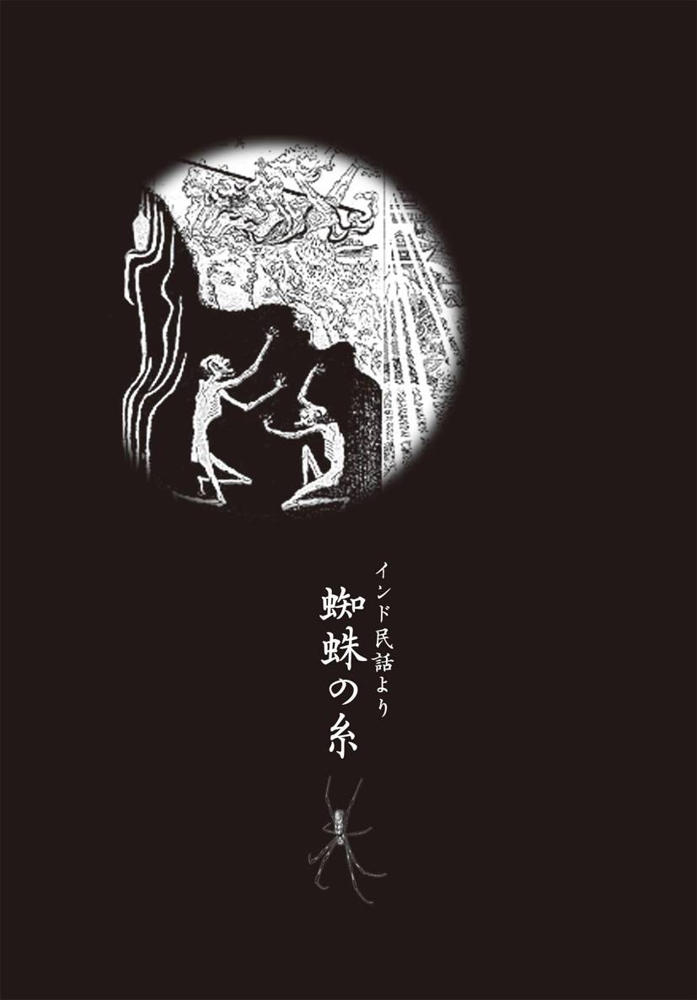
どこまでもつづく地獄の責め苦
叫び声とも、あるいは地鳴りともつかない、ワォーンワォーンという音が、あちらこちらから絶え間なく聞こえてくる。そして、その合間をぬって、赤い炎の柱が、ゴーッと四方八方から立ち昇っていた。
ここは、はるか地の底の地獄。どこからくるのかわからぬが、さめざめとした泣き声は、生前の悪業の報いで地獄に堕とされた人々が、ひどい責め苦にあっているのだろう。
古来からの地獄の責め苦は、まさに〝阿鼻叫喚〟という言葉があるとおりに、すさまじいものだった。鉄の釜の中で豆のように炒られたり、燃えさかる火中へ放り込まれたりするのである。
たくさんの罪人が焼けた鉄の上に寝かされて、焼けた鉄のムチで打ち叩かれていた。熱く焼けた鉄の縄で責められ、焼けた鉄の斧で切り刻まれ、鋸や刀で細切れの肉片にされている者もいた。
それ以外の者は、熱く焼けた鉄の山を登り、登りきったところで下り、下りたら、またまた登るのである......そんな責め苦が際限なくつづけられていた。
その不気味な地獄の底の血の池で、ほかの罪人と一緒に浮いたり沈んだりしているのは、四十を越えたくらいの男・カンダタである。
こやつ、たいそうな悪党で、もの心つくころから盗みに手を染め、やがて人を騙したり、女を犯したり、家に火をつけたり、ついには人殺しに至るまで、およそ悪事という悪事はすべてやりつくしたというほどだった。
そして、その隣には、やはりカンダタと同様に、悪事にかけては折り紙付きのウンダタという、したたかな男が、池の血に咽びながら浮き沈みしていた。
とにかく、ここまで落ちてくる人間は、限りない地獄の責め苦に疲れはてているらしい。さすが大悪人のカンダタも、やはり血の池で、何千日もの間、もがいてばかりいた。
御釈迦さまの救いの手
ちょうどそのころ、御釈迦さまは、ゆったりと極楽の蓮池のたもとを歩いていらっしゃった。池には水鳥が遊び、水面すれすれにトンボが飛び交い、池いっぱいに咲く蓮の花からは、すばらしい芳香がただよっていた。
やさしい陽の光いっぱいの極楽では、ゆったりとときが流れるのみ。ここには争いも苦しみもなく、人の顔はおだやかで、輝くように美しかった。
それなのに、御釈迦さまは悩んでいらっしゃった。なぜ、この世のすべての人は、ともにこの世を生きる人を愛し、いたわり、助け合うことができないのだろうか......。人を騙し、噓をつき、物を盗み、人を傷つけ、ときには殺しさえするのだろうか。
（あのように、毎日毎日、地獄に墜ちていく者たちを見るにつけ、人間は本来、業を背負ったものであり、救いようのない心の持ち主なのかと思わざるをえない。悲しいことだ）
ここしばらくの間、そのことばかりが御釈迦さまの心をとらえ、おだやかなはずの御顔を曇らせていた。
（ほんとうに人間の心が、醜いものなのかどうか、何か、それを調べるよい手だてがないものだろうか）
そう思いつつ、御釈迦さまは池のほとりに立たれた。池には、一面に蓮が繁茂している。小さな蓮の花のつぼみが池の面から出かかっているところに、蝶が羽を休めていた。
御釈迦さまは、葉を広げている蓮の間から、きれいに澄んだ水の下の様子に目を向けられた。三途の河や針の山の様子が、まるで覗き眼鏡を見るように、はっきりと見えた。
すると、ずっとずっと下の下の地獄の底の血の池で、一人の男がもがいているのが見えたのである。
「あの男......そう、カンダタとかいった......」
御釈迦さまの頭の中に、ひとつの光景が浮かんできた。それは、カンダタが、さかんに悪事を重ねていたころのことだった。
ある日、林の中を通っていたカンダタは、小さな蜘蛛が一匹、自分の足元を這っていくのを見た。
「ちっ、縁起でもねえ、嫌なものを見た」
そのまま踏み殺そうと足を上げたところで、ふいに足を止めた。
「待てよ。小さいとはいえ、殺してしまうのはいくらなんでも......」
その日に限って、そう思い直すと、蜘蛛を見逃してやったのだ。
（あんな男でも、少しは慈悲の心をもっているらしい）
御釈迦さまは、ほかにも、地獄の底で這いずり回っている人々の姿を、あちらこちらと見て回り、しばらく物思いにふけった。
「うん、あの男たちを試してみることにしようか」
そして思い立ったように、何かを決められた。
「できるなら、あの男たちを地獄から救い出してやりたいものだ。善い心かどうかをしっかり試した上でな。さて、どんな方法で助けたものか」
見ると、蓮の葉の上に、蜘蛛たちが美しい銀色の糸をかけている。御釈迦さまは、そのうちの強そうな糸をそっと三本ほど手に取り、その強さを確かめた。それから、見事に咲いた蓮の間から、スーッと糸を垂らされたのである。
地獄ともおさらばだ
血の池では、カンダタが、ぶつぶつとつぶやいていた。
「おれだって、まじめに働きゃ、そこそこの暮らしくれえはできただろうよ。この地獄からなんとか脱け出せたら、今度は、あんまり悪さをしねえで生きてえもんだ」
そんなことを考えながら、カンダタが何気なく頭を上げると、遠い遠い天上から、白く光る一本の蜘蛛の糸が、するすると自分の上へ垂れてきているではないか。
「どうしたことだ。こいつはありがたい。これにつかまって上がれば、こんなうす汚い地獄から脱け出せるかもしれねえぞ」
そう思ったのは、カンダタの隣でひどい責め苦を受けていたウンダタも同じだった。ウンダタは、人から金品を騙しとる名人で、たくさんの人を泣かせ、世渡りしていた。その罪の深さゆえに、地獄行きとされた男だった。
「おや、こいつはなんだ。どうして、こんな糸が下がってきたんだ」
ウンダタも不思議に思いはしたが、どこからともなく、救いの糸が下りてきたのだ。このチャンスを逃す理由はない。
隣を見れば、カンダタが糸にすがりつき、そのまま静かに上へ上へと登り始めている。なにしろ何度となく夜盗を働いていた男だから、これくらいは朝飯前だった。
「よし、おれも」
ウンダタも、すぐに、それにならった。
カンダタとウンダタの頭上以外に、あと一本、糸は光りながら下りてきていた。ところが、糸を見た小太りの男が飛びつくと、それを近くで見ていた背の高い男が走ってきて、小太りの男を引きずり下ろしてしまった。そして、その男が登り始めたところへ、また別の男が駆け寄って、大ゲンカとなった。
糸にすがりついた者を、別の者が引っ張り、また誰かが登ろうとすると引きずり下ろされ、誰も二間とは上れないありさまである。
そんな様子を横目にしながら、カンダタはせっせと手足を動かし、糸を登っていった。
しかし、地獄のうちでも、奈落と呼ばれる底の底の方にいたのだから、そう簡単に登れるわけもない。しばらくすると、汗はふき出し、手はぬるぬるとすべるようになった。
「ちきしょうめ、疲れたな。しょうがねえ、ここで一休みとするか」
足をからめて糸にぶら下りながら、目を下にやった。血の池や針の山も、ぼんやりと、はるか下方にかすんで、ほとんど見えぬくらいになっていた。さっきまで自分が受けていた恐ろしい地獄の責め苦が、まるで噓のように感じられ、カンダタは大きく息をついた。
この糸はおれのものだ
「これで半分も登っただろうかな。なあに、半分ほど上がったとすりゃ、後は、わけはねえ。さあ、もうちょっとの辛抱で、地獄の生活ともおさらばだぜ」
カンダタは、地獄から帰った自分の姿を想像した。
「こんなボロボロの身なりじゃ、しょうがねえ。とりあえず、着る物を盗み、金をかっぱらって、腹をいっぺえにすることだ」
そう思いながら、もう一度、下を見下ろしたときだ。アリが蠢くようにゾロゾロと、糸を登ってくる者たちがいるではないか。
カンダタの頭の中は、ひっくり返ったようになった。
ほんのわずかな重みがかかっても切れそうな、細すぎるほどの蜘蛛の糸が、あれだけの人数の重みに堪えられるはずがない。もし途中で切れたら、すべてはおしまいなのだ。
罪人たちは、まっ暗な血の池から、うようよ這い上って、細く光る蜘蛛の糸を、せっせと登ってくる。いまのうちにどうかしなければ、糸が切れて、また地獄へ落ちてしまう。カンダタは大声で喚いた。
「やめろ、糸が切れるじゃねえか。ちくしょう、やめろ」
一方、ウンダタの糸にも、同じように、たくさんの人間がすがりついて上ってきていた。
「こりゃいけねえや。このままじゃ、糸が切れちまう」
ウンダタの顔から、血がひいた。
「きさまら、このの糸はおれ一人のものだ。お前たちのものじゃねえ。下りろ、下りろ」
ウンダタも、同じように怒鳴っていた。そのとき、下から来た奴の顔が、ボーッと浮かんで見えた。
「おや、女じゃねえか」
よく見ると、若い女である。それも、めったに見られないくらい器量よしだ。
「お願いです。私も一緒に登らせてくださいませ」
女は必死の様子で、糸にすがりついている。
それを見て、ウンダタの心が動いた。いまのいままで、下から来る奴は落としてやろうと考えていたが、ちょっと待てよ、と思い直したのだ。
（これだけ品がよく、きれいな女はめったにいるもんじゃねえ。地獄のみやげにもらっていっても、罰は当らねえだろう）
その間にも、女は必死に叫んでいた。
「どうぞ、私をお救いください。お願いでございます」
それを聞いて、ウンダタはいった。
「よし、お前を助けてやることにしよう。いいか、ぐずぐずするな。すぐに、お前の足の下のところから、糸を切るのだ。お前が髪に刺した飾り物の刃を使って、スッパリ切れ」
女はいわれるままに、自分の髪から飾り物を引き抜くと、足の下の糸に刃をあてて、えいっと切り落とした。
切れた糸と切れなかった糸
このとき、カンダタの糸の方では、一人が、すでにカンダタのすぐ下にまで這い上がってきていた。その男がカンダタの足に手をかけて引きずり落とそうとしたとき、カンダタの足は、思わず男を蹴りつけていた。
「こいつ、おれの糸を登ってくるなんて、図々しいぞ。地獄へ落ちろ」
一回、二回、三回と頭を蹴りつけられて、たまらずに、男はまっさかさまに落ちていく。
「ざまあみろ、おめえたちは未来永劫まで地獄で苦しみやがれ」
その途端だった、蜘蛛の糸がぷつりと切れたのは......。
「ヒーッ」
絶望的な叫び声を残して、カンダタは、もとの暗い暗い地獄の底へ、あっという間に落ちていった。
カンダタたちが墜落していった後も、地獄の様子にはまるで変わりなく、いつもと同じように、不気味な地鳴りのような音が、絶えることなく聞こえていた。
「やはり、だめだったのか......」
御釈迦さまは蓮池のふちで、この一部始終をじっとご覧になっていたが、カンダタが血の池の底へ沈んでしまうと、肩を落として、悲しそうな御顔をなさった。自分ばかりが地獄から脱け出そうとする、カンダタの無慈悲な心が、そうしてその心相当な罰を受けて、元の地獄へ落ちてしまったのが、悲しいのだろう。
しかし、ウンダタがもう一人の女とともに這い上がったのを見ると、苦々しい笑いを浮かべた。善と悪とが同じ心に蠢いているウンダタのような人間でも、カンダタよりはまし。それなら、しかたなしに地獄から救い出さなければならない。そのことが苦々しかったに違いない。
「いくらか、風が出てきたらしい」
蓮の葉の揺れるのを見て、そう、おっしゃると、御釈迦さまは、池のほとりをそっと離れたのだった。
■『蜘蛛の糸』の原典を読み解く
世界中にある教訓説話
日本人にとって『蜘蛛の糸』といえば、芥川龍之介による著作が思い浮かぶが、実際は、彼による創作物ではない。その原作としては、かのドストエフスキーの『カラマーゾフの兄弟』の中のエピソード「１本の葱」に着想を得たともいわれているが、芥川が下敷きにした可能性が高いのはほかにもある。むしろ『カルマ－初期仏教の説話』（ポール・ケラス著）や、その邦訳である鈴木大拙の『因果の小車』などがあげられるという。いずれにしても、仏教説話をベースにして芥川が作り上げた作品ということはまちがいないだろう。
一方で、同様のエピソードはスウェーデンの女流作家セルマ・ラーゲルレーヴが書いた『キリスト伝説集』の「わが主とペトロ聖者」にもある。イエスが地獄に向かって天使を放つ。それにつかまって上がろうとしたペドロ信者の母親が、一緒につかまって上がろうとするほかの者を振り落とし、天使が母親を離してしまう。結局、母親は地獄に落ちていくという物語である。
さらに、イタリアとスペインにも、同様の民話が伝わっているのだ。仮に、これらが同一の物語を起点とするのであれば、民族や宗教を超えた共通の歴史的事実が根底にあるのかもしれない。
キリスト教の九つの刑罰界
仏教の「地獄」と、キリスト教（とくにカソリック教会）の「地獄」の描き方は、多少異なっている。しかし、地獄が地の下にあるという点では共通している。
キリスト教の地獄はこの世で犯した罪の種類によって、罰せられる場が「九圏」に分かれる。第一圏は無信仰の者。第二圏は肉欲者。第三圏は貪り食う者。第四圏は吝嗇者と浪費者。第五圏は怒る者。第六圏はキリスト教の異端者。第七圏は隣人乱暴者、自殺者、神の冒瀆者、男色者、高利貸。第八圏は婦女誘拐者、追従者、聖物売買者、妖術者、汚職者、偽善者、盗賊、策師、不和を起こす者、偽造者と騙り。最後の第九圏は血に反逆する者、祖国や党への反逆者、主人や客への反逆者、恩人への反逆者。
このように、大きく分類して九種、細かく分けると二十三種の罪人が、さまざまな罰を受けつづけるのである。
八つの熱地獄と八つの寒地獄という死後の罰
それでは、仏教の地獄の様子はどうだろうか。さまざまな経典によると、地獄の位置は地球の中心に近い地下になるという。そこには数えきれないほどの地獄があり、この世で悪業をなした者は筆舌につくせない苦しみを受ける。有名なのは八大熱地獄と八大寒地獄である。
八大熱地獄とは、絶え間なく苦しみを受ける「無限地獄」、自分の体から猛火が出て焼かれる「獄熱地獄」、炎に焼かれる「炎熱地獄」、苦しみに叫びつづける「大叫地獄」、悲しみの叫びを発する「号叫地獄」、苦しみが集まって身に迫る「衆合地獄」、黒縄（悪業）そのものが身を切り刻む「黒縄地獄」、死ぬごとく悶えては甦る「等活地獄」の八種である。また、八大寒地獄とは、寒さのため身が細々に折れ裂けるものばかりである。
そして、この十六の地獄の門の外にはそれぞれに小地獄が付随しているので、主な地獄だけで三十二もある。そうした地獄のひとつには、葉が剣になった木が生えている「剣樹地獄」（これが針の山の原型であろう）など、さまざまな苦しみに満ち満ちている。
『蜘蛛の糸』のカンダタがいた「血の池」というのは、小地獄の中の「膿血地獄」と考えられる。つまり、カンダタが受けていた苦しみは、まだ少ないほうなのだ。
善悪同居こそ人間の本質
さて、「人は自分の蒔いた種は必ず自分で刈り取らなければならない」というのが、因果応報の法則である。これをカルマという。
カルマとは、サンスクリット語で「行為」という意味の言葉である。哲学的には「あらゆる人間の行為を支配している因果律、また作用と反作用」を意味するもの、とされている。わかりやすくいえば、他人を傷つけてしまったり、傷つけようと心の中で思ったりする行為は、すべて自分自身の上に、まるでブーメランのように、正確に戻ってくる。それがカルマなのである。
善因善果、悪因悪果という言葉があるように、この決定の鍵になるのは、心のありようである。死後界では、すべては自分の責任においてケリをつけなければならないのだ。
この物語のテーマは、もちろん、この「因果応報」ということだが、善も悪も同居するウンダタのような人物こそが、この世の人々の大半であり、それを御釈迦さまも認めなくてはならないという真実こそ、人間界の恐怖といえるだろう。
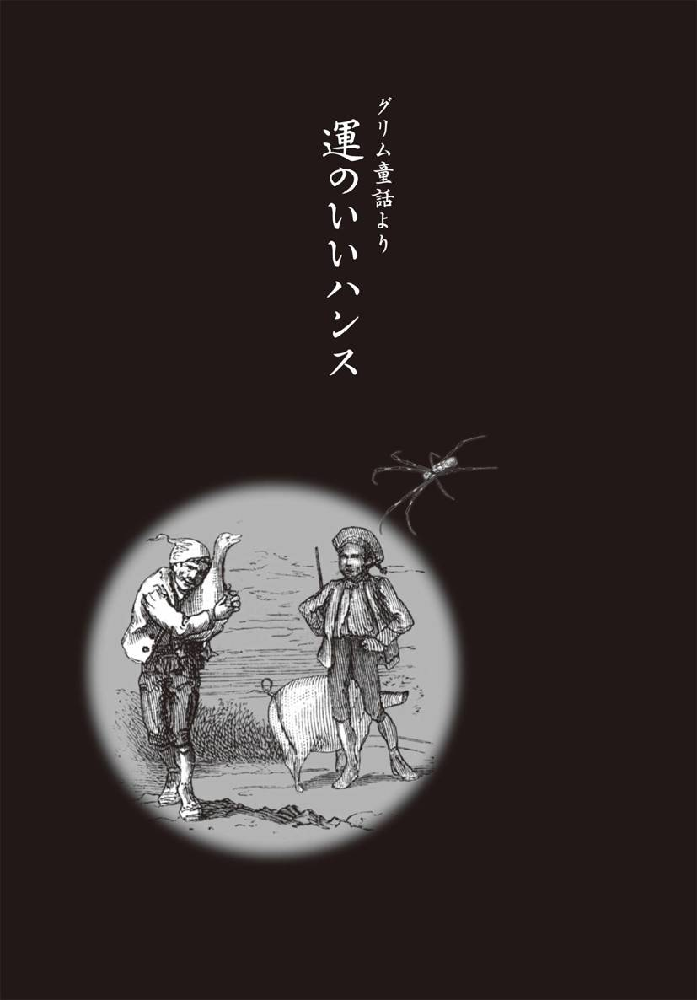
主人が金の塊をくれた
田舎の生まれのハンスは、若いころに生まれ故郷を離れて、はるか遠くの町の店で奉公していた。そこで一所懸命に働くうちに、七年の歳月が流れていた。
「私の奉公の約束の年が終わりました。故郷へ帰りたいと思います」
年季が明けたその日、ハンスは店の主人に、そう願い出た。
「もっともだ。お前はほんとうにまじめに働いてくれたからな。もちろん、これまでの給金をあげるよ」
主人はハンスが故郷に帰ること許し、これまでの給金として、ハンスの頭ほどもある大きな金の塊をくれたのだ。
「これがあれば、何か商売ができるだろう」
「ありがとうございます」
ハンスは金の塊を布に包むと、肩にかついで、故郷に向かって踏み出した。空は晴れ渡り、旅にはもってこいだった。
とても親切な男たち
旅の途中で、ハンスは元気のいい馬に乗り、勢いよく走っている男に出会った。
「ねえ、そこの人。馬に乗るのは楽しいだろうね」
ハンスが声をかけると、男は答えた。
「そうさ、馬を走らせるのは気持ちがいいもんだ。ところで、なんであんたは、そんな重そうな荷物をかついで歩いているんだい？」
「しかたないんだ。これは金の塊なんだよ。ぼくが七年間奉公した給金さ。これをかついで、故郷に帰るところなんだ」
「いや、それはすごいね」
「でも、肩にくいこむほど重いんだよ」
それを聞いた男は、しばらく思案してから、やさしそうな声を出した。
「そりゃ、あんたも苦労するな。よし、取り換えっこをしてやろう。この馬をあんたにやるから、その金の塊をおれにくれよ」
「えっ、その馬とかい。ほんとうかい？」
「そうさ、あんたのために換えてやるのさ」
この馬に乗れば、あっという間に故郷へ帰れる。そう思うと、ハンスはうれしくてしかたがない。男は金の塊を受け取ると、たずなを渡しながらこういった。
「この馬で駆けるときは、舌を鳴らして、ホイホイといいな」
馬にまたがったハンスは、さっそくホイホイと声をかけてみる。それを聞いた馬は突然駆けだしたので、ハンスは、どすんと馬から落ちてしまった。
ちょうどそこへ、のんびりと雌牛を追いながら農夫がやってきた。
「おいおい、大丈夫かい」
ハンスはべそをかきながら、立ち上がった。
「ひどいよ。この馬が、ぼくを放り出したんだ。二度と馬になんか乗るもんか。そこへいくと、お前さんの雌牛はいいね。あとからのんびりついて行くだけで、ミルクとバターが毎日食べられるんだから」
農夫は、ハンスの馬をじっくりと見てから、こういった。
「そんなに気に入ったのかい。それなら、この馬と取り換えてやってもいいよ」
「いいのかい」
うれしくて、ハンスは大声をあげる。
「いいともよ。あんたのためさ」
「なんて親切な人なんだ」
ハンスは喜んで、馬と雌牛を交換した。
（ああ、なんて上手な取引をしたんだろう。やっぱりぼくは運がいい）
農夫が馬に乗っていくのを見送りながら、ハンスは心からそう思った。
「これからは、好きなときにバターとチーズが食べられるのさ。もちろん、ミルクだってしぼって飲めるんだ」
しばらく歩いていくと、暑さがひどくなってきて、のどが渇いてきた。
「よし、こんなときこそミルクだ」
ミルクを飲んで元気をつけよう。さっそく、ハンスは雌牛を木につないだ。
「さあさあ、乳をしぼるぞ」
しかし、ハンスが力を入れてしぼり始めたとたん、雌牛の奴が、ゴーンと頭をけとばしてきた。ハンスは気が遠くなってしまい、そのまま倒れこんでしまう。
ちょうどそこへ、子豚を荷車に乗せた肉屋がやってきた。
「どうしたんだ」
肉屋はハンスを抱き起こし、話を聞くと、あきれ顔でこういった。
「だめだ。こんなよぼよぼの牛から、ミルクなんか出るはずないよ」
「えっ。それを知っていたら、取り換えるんじゃなかった。それにひきかえ、あんたの子豚はいいなあ。ぼくも、そんな子豚をもっていたらなあ」
それを聞いて、肉屋は目を光らせた。
「そんなら、取り換えてあげてもいいんだぞ。雌牛と子豚を」
「取り換えてくれるのかい？ なんて親切な人なんだ」
ハンスは自分の〝幸運〟を素直に喜んで、子豚を受け取った。
（なんでも願ったとおりになるなあ。嫌なことがあっても、すぐに、うまいこといくんだから）
子豚をつれてしばらく歩いていると、道の向こうから、白いガチョウを抱いた若い男が現われた。男が抱いたガチョウは、ズッシリと太っていた。
「おお、なんとも立派なガチョウだこと」
「子どもたちに食べさせようと、たっぷり太らせたんだよ」
すると今度は、男がハンスに聞きてくる。
「あんたは、なぜ子豚を連れているんだい？」
「さっき、よぼよぼの雌牛と取り換えてもらったんだよ」
すると若い男は、急に表情を曇らせて、こういった。
「実は、さっき通ってきた村で、村長さんの豚小屋から、子豚が一匹盗まれたと大騒ぎをしていたよ。子豚をつれていると、あんたもいろいろと疑われるんじゃないか」
「それはたいへんだ」
男があんまり心配そうにいうものだから、気の弱いハンスは心細くなってしまう。
「どうしよう。その村を通らなければ、故郷へは帰れないんだよ。もしよかったら、子豚とガチョウを取り換えてくれないか」
ハンスが頼みこむと、若い男は少し考えてから、首を縦に振った。
「よしよし。お前さんのために、そうしてあげよう」
そういうと、男は子豚を連れて、とっとと行ってしまった。
子豚とガチョウを交換したハンスは、すっかり明るい気分になっていた。
（こいつは得をした。これで子豚を盗んだと疑われることもないし、まるまると太ったガチョウのローストが食べられるぞ。あぶらもたくさんとれるぞ。そのうえ、きれいな白い羽がとれるから、いい枕が作れる。よく眠れるから、おっかさんもきっと大喜びだ）
自分は幸せ者だ、ハンスは心底そう思いながら、故郷の村へ向かって、また歩き出した。
神さまは助けてくださった
やがて、最後の村を通ったとき、どこからか楽しい歌が聞こえてきた。どこから聞こえるのだろうと思って見回すと、金物とぎ屋からだった。
グルグルグルグル、はさみをとげば、
なんてこの世はおもしろい
ハンスはしばらくの間、手をたたきながら見ていたが、がまんしきれず男に話しかけてしまう。
「とっても楽しそうだね」
「そうとも。こうしているだけで、お金がどんどん入ってくるんだから」
「うらやましいなあ。どうしてなの？」
不思議に思ったハンスは、とぎ屋の男に尋ねた。
「だって、この砥石がありゃ、どんなものでも手に入るのさ」
「ふーん、ぼくも、そんな砥石が欲しいな」
「この砥石かい」
「そうさ、それだよ」
「そうかい。お前さんのガチョウと取り換えてあげてもいいんだけれど」
「いいのかい」
「お前さんが望むならね」
とぎ屋は、いかにも仕方がないという言い方だ。
「ありがとう。うれしいな」
喜ぶハンスに砥石を渡すと、男はガチョウを受け取った。それからあたりを見回すと、足元にころがっていた石をひとつ拾い、「よし、こいつはおまけだ」とハンスに手渡した。
ハンスはとぎ屋にもう一度お礼をいい、ふたつの石をかついで、元気よく歩き始める。
「ぼくは運がいい。ぼくの願いは、すぐにそのとおりになるんだ」
ところが、しばらく歩いてみるとふたつの石が、だんだん重く感じられてきた。朝から歩き通しだったから、すっかり疲れていたのだ。おまけに、お腹はペコペコだ。
「まったくひどいよ。こんな石と取り換えるんじゃなかった。いまさら捨てちまうわけにもいかないしなあ」
とぼとぼと歩いていると、きれいな泉が見えてきた。とりあえずひと休みして、冷たい水を飲もう。そうすれば元気になる。ハンスは顔の汗をふきながら、泉に近づいた。
泉のほとりにドスンと腰を下ろし、水を飲もうとしてかがみ込んだ瞬間だ。
ドブーン！ ドブーン！
ハンスは横に置いた石にぶつかってしまい、石はふたつとも泉に落ちてしまったのだ。ところがハンスは、大喜び。
「わーい、やったぞ。神さまは、ちゃんと助けてくださった。やっかいな重い石を片づけてくださったんだ」
こうしてハンスは、七年前に故郷から出てきたときと同じように、何ひとつもたず、母親の待つ故郷に帰っていきましたとさ。
■『運のいいハンス』の原典を読み解く
失敗をとりつくろう心
『運のいいハンス』は、グリム童話の中でも、もっとも人気の高い話とされている。
この物語をそのまま読めば、善意にあふれた人々の話である。物欲にまみれた世の中に生きる我々からすると、次々にあらわれる人たちとのやり取りは、ハンスの温かい人柄を感じさせる物語といえるだろう。
しかし、それだけなら、ただの純朴な青年の話で終わってしまいそうだ。そこで、もう一歩踏み込んで、裏側を考えてみよう。
故郷に帰る途中のハンスと物々交換をする人々には、「他人をあざむいても、自分だけが得をすればいい」という、自己中心的でずる賢い心理が隠れている。口では「あんたのために」と人助けのようにいいながら、自分の利益をしっかり計算しているわけだ。
物語を読み進めるうちに、それを強く感じるようになるだろう。読む人によっては、そんなハンスにイライラしてしまうかもしれない。
だが、だからこそ、ずるい人間たちにだまされているのに「自分は幸せだなあ」と感じるハンスのお人好しなところ、憎めないところが印象に残るのである。
しかし、ハンスは、そう思っているだけなのだろうか？ 実際は、これまでの自分の失敗をなんとかカバーしようとする心理が働いているのではないか？
人間は、自分の望みどおりに物事が進まないとき、そうした不愉快な現実を自分の心に納得させるために、「結果的に、そのほうがよかった」と解釈しようとする心理が働く場合がある。一言でいえば、「負け惜しみ」なのだが、これが心理の「合理化」といわれるものである。
酸っぱいブドウの心理
「酸っぱいブドウと甘いレモンの心理」という心理学の例え話を知っているだろうか。この例え話は、そもそもイソップ童話の『キツネとブドウ』からきている。
よく熟したブドウが木になっているのを見たキツネは、それをとろうとする。でも、高い枝になっているために手が届かない。飛んだりはねたりしても届かないものだから、とうとうあきらめてしまう。そして最後に、こんな捨て台詞を口にするのだ。
「どうせあのブドウは酸っぱかったから、食べなくてよかったのさ」
このようなことは、私たちの日常にもよくあることではないか。何かに失敗したり、自分の行為に罪悪感を抱いたときなど、自分にとって都合のいい理由をつけて、心のダメージを小さくしようとすることがないだろうか？
そう、これは誰もがもつ健康的な心の動きなのである。
しかし、この心理が強すぎると、自分を正当化するために、物事を冷静にとらえられなくなってしまう。そしてついには、自分の本心まで見失っていくのだ。
たとえば、知り合いの誰かが、高級車に乗っていたとしよう。それを知ったときに、「自分もほしい」と思う気持ちがほんとうはあるはずなのに、「あんな車、やたら金がかかって面倒だ」と思う。その反対に、自分が乗っている安い大衆車のことは、「ぶつけても気にならないから、ちょうどいい」と考える。
他人がもっているおいしそうなブドウを「酸っぱいブドウ」といい、自分がもっているレモンについては「甘いレモン」と考える。
つまり、自分と他人を比べたとき、他人がもっているすばらしいものに低い評価を与えることで、なんとか自分の心のダメージを減らし、バランスを保とうとするわけである。そして、「自分は正しい。自分は運がいい」と自分を納得させるのだ。
このような歪んだ心理を、ハンスの行動はのぞかせているわけだ。そして、残念なことに、ハンス自身は、自分の〝本心〟に気づくことはできないでいる。
そう考えると、『運のいいハンス』という童話の別の顔が見えてくる。ほのぼのとした物語の裏側には、人間の心理の深層を考えさせられる教訓が秘められているのだ。
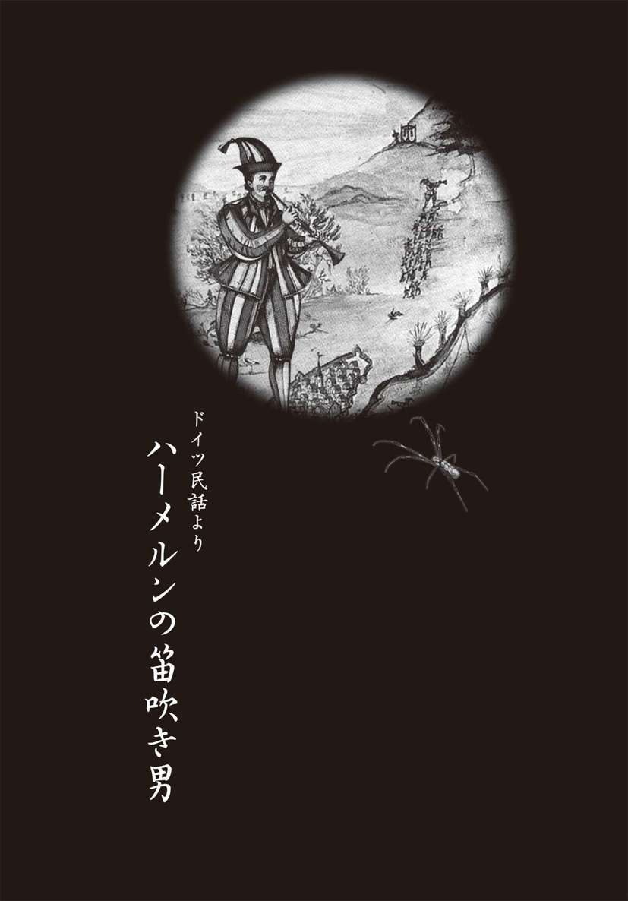
ネズミだらけの町
ピ～ヒュロ、ピ～ヒョロ、ピ～ヒュロ、ピ～ヒョロ
ハーメルンの町では、いつの時代からか、笛という笛の音はまったく聞かれなくなってしまった。それは昔、といってもそう遠くない昔。この町で、笛にまつわる悲しい出来事があったからだ。
その日以来、この町では、笛の音は〝不吉な存在〟になってしまったのである。
ハーメルンというのは不思議な土地で、ほんの少し前までは小さな貧しい村にすぎなかった。だのに、いつの時代からか、立派な町になっていた。役場が建ち、家々も立派になり、通りには石畳が敷かれ、すっかり豊かになっていたのだ。
すべては、町の側を流れているヴェーゼル川のおかげだった。この川を通って、いろいろな荷物を積んだ船が町にやってきては、町の東門のあたりで盛んに売り買いし、町にもたっぷりとお金が入るようになったのだ。
なにより、町長がえらい金儲け好きだった。川を行く船からは通行税、門の側で売り買いをする商人からは市場税、品物にもたっぷり税金がかけられていて、町中の何もかも税金だらけ。それでも税金のお陰で町はきれいになり、盛んな商売のお陰で、羽振りのよい暮らしができるようになったハーメルンの町の人々はみな感謝していた。
ところが、商売が盛んになるに連れて、困ったことが起こった。町中にネズミが増え、あちこち喰い荒らされるようになってしまったのだ。
漁師の家ではネズミたちが地下室に巣をつくっていた。豚飼いの家では床までネズミにがりがりかじられ、床はもう穴だらけ。
そんなだから、おかみさんが食料倉庫へ行くときには、必ずほうきをもっていかなくてはならない。もちろん、ネズミを見たら、ただちに退治するためだ。ハーメルンの女たちは、ネズミを見ても、金切り声をあげるような、弱い素振りはしていられない。たたき殺したネズミはオーブンで焼いて食べてしまうくらい、図太くなくてはならないのだ。それに、こんがり焼いたネズミの肉はなかなかうまいらしい。
お百姓が納屋や家畜小屋の戸を開けるときは、こん棒をもっていかなくてはならない。もちろん、これもネズミを退治するためだ。
とにかく、ネズミをたくさん殺した人ほど「えらい！」とほめられる......。ハーメルンは、いつの間にかそんな町になってしまっていた。
あちこちに、ネズミとりが仕掛けられ、猫は昼も夜も大忙しでネズミ退治に明けくれた。のんびり昼寝をしている猫なんて、ハーメルン中を探したっていやしない。犬は犬で、怖い顔をして、大事なものを見張っていた。なにしろ、この町のネズミときたら、本でも洋服でも、片っ端からかじってしまうのだ。
それでも、ネズミたちはへっちゃら。
あるときは、地下室を駆け回り、燻製小屋のハムやソーセージをめちゃめちゃにした。またあるときは、食料倉庫を襲い、穀物が入った袋を食い破った。文字通り、ネズミのやりたい放題だったのだ。
秋の収穫の時期には、ネズミの被害はさらに深刻になる。そして、冬になっても、それは変わらなかった。大切な食料の備蓄まで平らげられてしまったから、食糧不足でとうとう餓死する者まで出てくる始末だ。
ネズミ算を知っているだろう。雄と雌一組のネズミがいれば、一年後には六百匹にも増えているほど、ネズミの繁殖力は強烈だ。人間や猫、犬でどれだけ退治しても、とても追いつかない。
このままでは、町はネズミに乗っ取られてしまう。いつのころからか、ハーメルンの人々はそんな恐怖にとらわれるようになっていった。
川の氷が溶け始めたころ、人々は、「春になったら、この憎らしいネズミたちもどこかへ行ってくれるのではないか？」と望みをかけた。
でも、そんな期待はすぐに消えた。ネズミたちはさらに数を増やし、我が物顔で町中をちょろちょろと走り回り、町役場や教会の柱までかじり出したのだ。
なんとか、ネズミを退治できないものか。
万策尽きた町の人々は、ネズミを追い払ってくれる人があらわれたら、どんなお礼でもする、とまで追いつめられていた。
そんな、ある晩のこと。町の旅館の食堂に見知らぬ男があらわれた。まっ赤なマントをはおり、長い羽のついた赤い帽子をかぶったその男は、椅子に座ると、パンとワインを注文し、
「一晩、泊めてもらいたいが......」
と口を開いた。
「ありがとうございます」
宿の主人は深々と頭を下げた後、こうつづけた。
「ただ、ネズミがうるさく暴れまわるので、静かにお休みになれるかどうか......」
「ネズミ？ どこにいるんだね？」
その言葉を聞いて、食堂にいあわせた客たちが、その男に言葉をかける。
「まあ、じきに、嫌でもネズミにお目にかかれますよ」
と家具屋がいう。
「ところでお前さん、ずいぶん変わった出で立ちだな。名前はなんていうんだい？」
漁師が尋ねた。
「名前なんかないさ。ただの旅の楽士さ。でも......、ネズミのことなら、きっと力になれると思うよ。むろん、礼はくれるんだろうね」
食堂にいた男たちは、その男のまわりに集まって、口々にこういった。
「もし、ネズミが一匹残らず姿を消したら、お礼はあんたの望みどおり出すぜ」
「ほんとうだな。では、ネズミがいなくなったら、金貨一〇〇枚もらいたい」
「約束するとも！」
「必ず、約束を守ってくれるな」
「ハーメルンの人間は約束したことは必ず守る！ だが、どうやってネズミを退治する？」
「それは秘密だな。とにかく、ネズミがいなくなったら、すぐにお礼を渡してもらおう」
男はそう言い残して、宿の部屋へと消えていった。
笛の音に誘われて
次の朝のことだ。
ピ～ヒュロ、ピ～ヒョロ、ピ～ヒュロ、ピ～ヒョロ
町に笛の音が流れていた。その音で目を覚ました町の人が窓を開けて外を見ると、昨日の男が、笛を吹きながら、通りから通りへと歩いている。
ピ～ヒュロ、ピ～ヒョロ、ピ～ヒュロ、ピ～ヒョロ
「不思議な曲だな」
「あんな曲は聞いたことがない」
すると、頭の上や足もとでごそごそ音がし始め、家々からネズミが姿をあらわし、笛吹き男の後をついていくではないか。やがて男のまわりには、何百何千というネズミが黒山のように集まってきた。
男は休まずに、笛を吹きつづけている。そして、やがて、町中のネズミが全部集まってきたのを見さだめると、ゆっくりと歩き出し、町の東門から外へ出ていった。
ネズミたちは長い列をつくって、男の後についていく。男はそのまままっすぐヴェーゼル川へ下りていき、歩いて川を渡っていった。ネズミたちも一匹残らず、男の後につづいて川に入り......そのまま水に流されていった。
「ネズミがいなくなった」
「ブラーヴォ、ブラーヴォ！」
町の広場では、有頂天になった町の人々の歌とダンスが始まった。役場の前に、テーブルや椅子が並べられ、ビール樽の栓がどんどん抜かれた。
やがて、広場に笛吹き男があらわれると、人々は、
「ネズミとり名人、ばんざい！ おかげで、ネズミの苦しみから救われたぜ！」
と叫んで、笛吹きのまわりに集まってきた。
「どうだ、おれのいったとおりになったろう」
しばらくは町の人のどんちゃん騒ぎをながめていたが、やがて、笛吹き男は町長の前に進み出ていった。
「さぁ、約束の礼金をいただきたい。約束どおり、金貨一〇〇枚」
ところが、金の話が出ると市長は表情を変える。
「なんだと？ お前はネズミを笛で誘き出して、川に溺れさせただけじゃないか。そんなことは誰だってできるさ。金貨一〇〇枚なんて高すぎる！」
「でも、あんたたちは、ネズミの被害から救われただろう？」
町長は頭を振って、こうつづけた。
「ほんとうにネズミが全部いなくなったのかどうか、あやしいもんだ。どっかから、まだ二、三匹、残っているやつが出てくるかもしれないし」
「町長、あんたは噓つきの上に、卑怯だ！ いいか、これが最後だ。もう一度だけ聞く。礼をくれるのか、くれないのか」
町長は、ふんぞり返ってこういった。
「ネズミとり男よ、ハーメルンの町じゃあ、笛を吹いただけの男に金貨一〇〇枚なんて出さないよ」
笛吹き男は、しばらく町長を見つめていたが、やがて黙って立ち去った......。
ふたたびあらわれた笛吹き男
それから何週間も後......。ネズミの姿はまったく見られなくなり、町の人はネズミのことも忘れ、あの笛吹き男のことさえ忘れてしまった。
ネズミがいなくなったおかげで、町は金貨一〇〇枚どころか、金貨一〇〇〇枚以上も儲かった。そのうえ、食べ物小屋も燻製小屋も、もうネズミには襲われないのだ。
四月のイースターがすぎ、六月の聖ヨハネのお祭りがやってきた。一年中でいちばん過ごしやすい季節だ。ネズミもいなくなり、商売は大繁盛。町は豊かになり、誰もが明るい顔で暮らしていた。
そんなある日のことだ。
ピ～ヒュロ、ピ～ヒョロ、ピ～ヒュロ、ピ～ヒョロ
朝早くから、笛の音が風にのって聞こえてきた。
「おい、あのネズミとり男じゃないのか!?」
「しつこいヤツだな。礼金を受け取りにきたにちがいない」
人々は陰でこっそり噂しあったが、たしかめようとする者はなかなかいない。そこで、町でも度胸のある男たちが二、三人、笛の聞こえるヴェーゼル川へと行ってみた。
やっぱり、あのときの男だった。
だが、よく見ると、男の様子はどこか違う。緑色の服を着て真っ赤なズボン、真っ赤な帽子......。それは森に狩りにいく狩人の姿だった。
ただ、笛の音だけはこの前と同じである。
ピ～ヒュロ、ピ～ヒョロ ピ～ヒュロ、ピ～ヒョロ
風にのって、家々の窓に流れ込んでいく。だが、その音に誘われたのは、ネズミではなかった。家々から、子どもたちが飛び出してきたのだ。はじめは三人、それから八人になり、次は十五人......。ちょうどネズミのときと同じように、気がついたときには町の子どもという子どもが、笛吹き男のまわりに集まっている。
「どうしたの。みんな、家へお帰り！」
心配になった親たちが声をかけても、子どもたちは誰一人、家へ帰ろうとしない。
「いやだっ！ 笛を聞くんだい！」
何度いっても笛吹き男のまわりにむらがったまま、子どもたちは動こうとしない。
時々、笛吹きは吹くのをやめて、誰かを探すように見回している。すると、子どもたちは、つづけてくれと叫ぶ。
「もっと吹いて！ もっと聞きたいよ！」
すると、男はまた笛を吹き始めた。
やがて小さい男の子や女の子に交じって、町長の娘のマルグレートがやってきた。この娘は子どもではなく、年頃のきれいな娘だった。
笛吹き男はマルグレートが来たのを見て、立ち上がる。
「さあ、みんな、出かけるぞ」
男が、子どもたちに声をかける。不思議なことに、子どもたちは誰一人、どこへ行くのかとも、行きたくないともいわない。
「笛はやめないでね。やめちゃだめだよ」
ただ、そうくり返すだけなのだ。
「わかった、わかった」
男は笛を吹きながら、歩き出した。
まず、町の中央広場へ行き、泉のまわりを一周すると、次は広場から町の東門へと歩いていった。男の後を、ぞろぞろと子どもたちの行列がついていく。そうこうしているうちに、町中の子どもは一人残らず、この行列に加わっていた。
親たちは家から飛び出して、子どもたちを引き止めようと必死になった。だが、子どもたちは笛吹き男の後を、わき目もふらずについていく。笛吹き男と子どもたちの長い行列は、ついに、そのまま町の外に出ていってしまった......。
「そのうち、腹が減って帰ってくるさ」
誰もがそう考えていた。
「マルグレートはもう大きいから、子どもたちを引っ張ってきてくれるだろう」
という人もいた。
ところが、夜になっても、子どもたちは帰ってこない。次の日も、また次の日も。心配になった親たちは、夜も眠れない日々を過ごし、とうとう、町長のところに押しかけた。
「子どもたちが帰ってこないんだ。いったい、どうしたらいいんだろうか」
心配なのは町長も同じだ。一人娘がいなくなってしまったのだから。
だが、いくら待っても、いなくなった子どもたちが、二度と帰ってくることはなかった。
笛吹き男の正体
子どもを失った親たちの流す涙も枯れ果てたある日のこと。町にやってきた行商人が奇妙な話を口にしたのである。
「遠い町で、ここの町長の娘を見かけたぜ」
聞けば、マルグレートは男に体を売る商売女に身を落としているというではないか。
「そういえば......」
この話を聞いた、ほかの行商人が口をはさむ。
「遠い港町から、子どもたちを山ほど乗せた奴隷船が、新大陸に向かって船出したそうだ。子どもたちはいまごろ奴隷になって、死ぬほど働かされているだろうさ」
この時代、子どもは最高の商品だったのだ。男の子は労働者に、女の子は下働きに、きれいな娘は商売女に、と売られていったのだ。
実は、笛吹きの男のもうひとつの正体は、子どもを狙った人さらいだったのだ。
これと目星をつけた町に、ネズミを数十匹、しのびこませる。船の荷物にまぎらわせてネズミを持ち込むのはたやすい。すると、あっという間に、町はネズミだらけになってしまうのだ。
それから後は、ハーメルンでやった通りにやるだけ。笛吹き男の吹く笛の音には、一種の催眠効果があったのだ。それを聞くと、ネズミでも子どもでも、笛の音の魔力から逃れられない。ネズミを退治して、金をくれればよし、だが、約束を破ったら、代金の代わりに、子どもたちをいただくというわけだ。
子どもたちが正気に戻ったときには、もう奴隷船の中。泣こうと叫ぼうと、誰も助けにこない。その先に待っているのは、ネズミのようにくるくる働くだけの人生だ。
だからといって、笛吹き男だけが悪いわけじゃない。ネズミ退治をしてもらったときに、約束どおりの金貨を支払った町では、笛吹き男は笑って消えたのだから。
だが、ハーメルンの町の人々のように男を騙すと、もっと大切なものを失うはめになるのだ。
ピ～ヒュロ、ピ～ヒョロ ピ～ヒュロ、ピ～ヒョロ
今日も、どこかの町で、笛の音が風にのって流れている。笛の音が止んだとき、姿を消すのは、ネズミか、それとも子どもたちなのか......。
■『ハーメルンの笛吹き男』の原典を読み解く
あまりにも深刻な食糧事情
われわれが子どものころに読んだ『ハーメルンの笛吹き』は、複数の作者によって物語られた民間伝承である。もっともなじみ深いのはドイツのグリム兄弟のものであるが、阿部謹也の『ハーメルンの笛吹き男─伝説とその世界』によると、笛吹き男の話は、ドイツだけでなく、「ネズミ取り男」や「害虫取り男」として、フランス、アイルランド、オーストリアなど、ヨーロッパ各地に残っているという。
その原点については、重度の小児性愛者によるものという説や、子どもたちが自らの意志で移民したとする説がある。だが、ここでは、物語に寄り添う形で解釈をしてみよう。
物語が生まれた中世ヨーロッパは、男性よりも女性の人口が多かった。その原因は慢性的な飢饉、流行病、戦争と、自然的・人為的災害が絶えなかったためだ。中でも戦争が多くの男たちの命を奪い、子どもを抱えた未亡人や未婚の母親の数を増やしていったのだ。
当時、裕福だったのは貴族や一部の職人くらいで、ほとんどの民が貧民状態だったから、母子家庭の貧しさといったら、それは想像に絶するくらいひどい。飢えは人間の精神を極限状態にしてしまい、ときには子どもを殺して食べることまであったという。
グリム兄弟が記した『子どもと家庭の童話』の中に、「飢えて死にそうな子どもたち」という話があるが、それがまさにその状況を表している。
二人の娘を抱えた貧しい母親がいた。母親は極限の飢餓状態から、長女に「おまえを殺せば、私の食べ物ができる」という。殺されてはたまらないと思った長女は、小さなパンを探してくる。しかしそれではすぐに腹が減る。そこで母親は次女にも同じことをいう。次女も殺されたくないので、これまた二切れのパンを探してくる、という話である。
現実に人間を食べたという記録は、ドイツ、フランス、イタリア、ハンガリー、ポーランドなど、ヨーロッパ各地に残っているのだ。
子どもを売るのは処世術
こんな説もある。ハーメルンの笛吹き男は悪魔のことで、悪魔が子どもたちを連れていったというのだ。ただし、ここでいう悪魔とは、当時横行した、子どもを売り飛ばす詐欺師や手配師を表していたのではないか考えられている。
この時代は子どもの特権はなく、大人と同じ厳しい条件で生活していた。父親が亡くなれば、息子は幼くして一家の家長となるし、娘は八歳たらずで嫁として家を出なくてはならなかった。四歳の幼い子を働かせたという記録もあるくらいだから、子どもは立派な労働力だった。
さらにいえば、自分が生きながらえるために子どもを売り飛ばすことは、処世術のひとつだったのだ。現代でさえ、子どもをトルコ人に売り飛ばす手配師がいるという話が、ヨーロッパではまことしやかに語られているのである。
とはいっても一三〇人という大人数の子どもが、一気に消えてしまったハーメルンの出来事は、さすがに希なケースだったのだろう。それゆえ、「この出来事は子どもの十字軍を意味している」という説もあるくらいだ。
こうした歴史的背景から考えていくと、『ハーメルンの笛吹き男』は、現実に起こった物語をベースにしたものではなかったとしても、歴史的事実が必然的に生み落とした伝説が童話化されたといえるのではないだろうか。
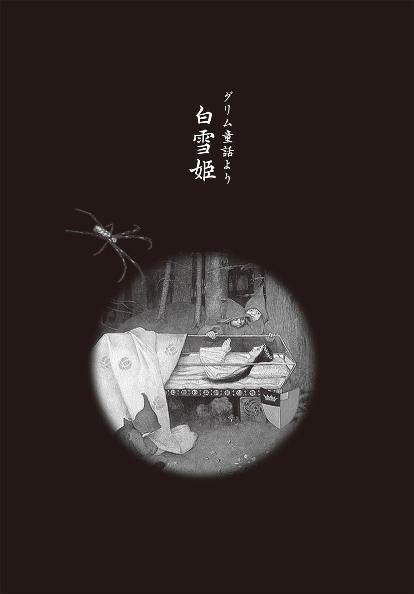
美しい王妃を襲った魔女の罠
遠い昔のこと。ある国に、とても美しい王妃がいた。新しい命を授かり、それはそれは幸せな日々を過ごしていた。しかし、ある冬の日に、突然悲劇が訪れる。
その日、王妃は生まれてくる子のことを考えながら、針仕事に精を出していた。
「お妃さま。針仕事などは、私におまかせください」
メイドがそういうと、王妃はやさしく首を振る。そして、王妃は日ごと大きくなるお腹にそっと手をあてると、愛おしそうにさすりながら、こう答えるのだった。
「いいえ、生まれてくるこの子のための服は、私の手で縫いたいのです」
やがて日が暮れると、急に寒さが増してきた。王妃がふと外を見ると、窓から雪がちらついているのが見える。
「まぁ、きれい」
思わず王妃は立ち上がると、針と布をもったままバルコニーに出る。そして、手で雪を受けとめようとしたそのとき、針が指に刺さってしまった。
「あっ！」
小さな悲鳴とともに、白い指から真っ赤な血がぽたぽたと滴り落ちる。それが、バルコニーに積もった白い雪を染め、赤いバラの花びらを散りばめたように見えた。王妃の声を聞きつけたメイドがかけ寄ってくる。
「お妃さま、どうかなさいましたか」
「ええ、針で指をついてしまって......」
「すぐに、お手当をいたします」
たいしたことのない怪我のはずだったが、これが残酷な物語の始まりだったのだ。
王妃が使っていた針は、隣国の名工がつくった裁縫道具である。しかし、その針を売り歩いていたのは、実は魔女だった。じわりじわりと効く毒を塗った針で、しかも、その毒には魔女の血が混ぜられていたのだ。
それからしばらくして、王妃はかわいらしい赤ん坊を産んだ。まるで雪のように白い肌の女の子で、白雪姫と名づけられた。王も王妃も幸福で満たされて、愛しいわが子をたいそうかわいがった。
だが、その幸せは、長くはつづかなかった。出産してからというものの、王妃の体調がすぐれないのだ。それもそのはず、魔女の毒が王妃の体をむしばんでいたのだ。
国中の医者が集められたが、原因がわかるはずもない。そうしているうちにも、王妃の具合はいっそう悪くなり、ついに帰らぬ人となってしまった。
美しい後妻の正体
王妃が亡くなってしばらくたったころ、王は新しい妻を迎えることにした。まだ幼い白雪姫には、母親が必要だと思ったからだ。
新しい王妃は、とても美しかった。亡くなった王妃も美しかったが、それがかすんでしまうほどだった。ただ、王にはひとつだけ、気がかりなことがあった。新しい王妃は、自分の部屋に閉じこもって、誰もよせつけないでいることが多かったのだ。
だが、王は気づいていなかった。この新しい王妃にはもっと秘密があることを。実は、この王妃こそ、亡くなった王妃に毒の針を売った魔女だったのだ。王妃の座を手に入れようとたくらんで、魔女が〝死の罠〟をしかけたのだ。
そんな偽りの王妃が、白雪姫をかわいがるはずもない。継子のことは、すべてメイドや執事にまかせっきり。魔女は、美味しいごちそうを食べ、高級なワインを飲み、すばらしいドレスで着飾り、まさにぜいたく三昧の暮らしを楽しんでいた。
その魔女がいちばん大切にしていたのは、己の美貌。部屋にこもっていたのも、魔法の鏡と話をするためだったのだ。
「鏡よ、鏡。世界中でいちばん美しいのは誰？」
すると、魔法の鏡はこう答えた。
「それは、あなたです」
何度聞いても、その答えは心を満たしてくれた。魔女の王妃は満足そうにうなずくと、さらに念入りな化粧をほどこすのだった。
ところが、白雪姫が七歳になった、ある日のこと。
いつものように、魔女は鏡に向かって問いかけると、答えがいつもとちがっていた。
「鏡よ、鏡。世界中でいちばん美しいのは誰？」
「それは、白雪姫です」
思わず、わが耳を疑った。だが、何度聞いても、答えは同じだった。
魔女の王妃がどれだけ動揺したか、いうまでもない。そして、やり場のない怒りが白雪姫に向けられ、それが殺意になるまで、それほどの時間はかからなかった。
王妃は、城に出入りしている狩人を呼びつけると、こう命じた。
「白雪姫を森に連れていき、殺してしまえ。そして、殺した証拠に心臓を切り取ってもってくるのじゃ。ほうびは、そなたが望むものを与えよう」
罠にはめられた狩人
王妃から白雪姫の暗殺を命じられた狩人は、ある日、姫を森に誘った。
「白雪姫さま、森の奥に、たくさんの美しい花が咲き誇るところをみつけました。そして、その先には、とても美しい湖があるのです。私がご案内しますよ」
白雪姫は、美しい花と湖に誘われるように、狩人とともに森に向うことにした。
森に入ったときは不安な様子だった白雪姫も、狩人につづいて森の中を進み、一面の美しい花が咲き誇る場所に着いたときは、とても幸せな気持ちになっていた。そして、その先にあった湖を見て、思わず歓声をあげた。
「まぁ、なんて美しい景色なんでしょう、ここは......」
しかし、その声を、狩人の低い声がさえぎる。
「姫、申し訳ありませんが、ここで死んでください。心臓だけを切り取って、死体は湖の底に......。永遠に沈んでいただきます」
ところが、白雪姫は少しも怖がる様子を見せなかった。
「そんなことだろうと思っていました。お母さまから命令されたのですね」
そういうや、白雪姫は手に隠しもっていた小さな針を、狩人の左手の甲にプスリと刺した。それは、一瞬のできごとだった。鋭い針だったから、それほどの痛みはない。狩人の手の甲に、小さな赤い点ができただけだった。
だが、白雪姫が語る真実は、恐ろしいものだった。
「これは毒針です。もし、あなたが私を殺さずに城に帰るのなら、毒消しをあげましょう。それでも、私を殺すというのなら、あなたも数日のうちに死ぬことになりますよ」
狩人が、王妃からのほうびよりも、自分の命を選んだのは当然のことだ。
「わかりました。お願いですから、毒消しをください」
「明日、日が昇ったら、この針を右手の甲に刺しなさい。そうすれば、毒は消えてしまいます」
そういいながら、白雪姫は小さな針を狩人に渡した。
「いますぐに、針を刺してはいけないのですか？」
「いま刺したら、苦しんで死ぬことになりますよ。明日の朝まで、けっして刺してはいけません」
話し終えると、白雪姫は狩人に背中を向けた。それから城を反対方向の、森の中へと消えていった。
残された狩人は死の恐怖におびえたが、それでも王妃に首尾を報告するために、城に戻らなければならない。実は、城の使用人たちの間で、新しい王妃は鏡と話ができる魔女だと噂が流れていた。その噂は狩人の耳にも入っていたのだ。白雪姫の心臓をもち帰らなければ、今度は王妃から何をされるかわからない。
運よくイノシシを見つけた狩人は、それを射止め、心臓を切り取った。これを王妃に届けて、白雪姫を仕損じたことをごまかそうとしたのだ。
「王妃さま。白雪姫を殺して、湖に沈めてきました。これが白雪姫の心臓です。私は少し疲れてしまったので、これで失礼します」
狩人は王妃に報告だけすると、そそくさと自分の家に戻った。そして、一刻も早く朝が訪れることを願って、すぐに眠ってしまった。
だが、翌朝になっても、彼が目を覚ますことはなかった。なんと、白雪姫の刺した毒針で死んでしまったのだ。
「翌朝、もう一本の針を刺せば毒が消える」
白雪姫の言葉は真っ赤な噓で、ただ時間稼ぎのため。わずか七歳の幼子が、狩人を罠にはめたのだ。
森の奥で見つけた小さな家
自分が生き延びていることを、継母はすぐに気づくだろう。そうしたら、次の手を打ってくるにちがいない。狩人から逃れた白雪姫はとにかく少しでも遠くへ逃げようと、森の奥へ奥へと進んだ。
日も暮れかかりそうになったころ、小さな灯りがまたたくのが見えた。近づいてみると、それはとても小さな家だった。
「こんにちは、誰かいないのですか？」
声をかけても、ドアをノックしても、返事はない。
どうやら鍵はかかっていないようだ。
「いいですか、開けますよ」
白雪姫は、そういいながらドアを開けた。それから、家の中をうかがってみたが、やっぱり人の気配はない。
「おじゃまします」
小さなドアをくぐるようにして家に入ってみると、七歳の白雪姫でも窮屈な感じがするくらい、小さな部屋だった。部屋ばかりではない。天井から吊り下げられたランプも、家の中の家具も、すべて、小さなものばかりだった。
ダイニングルームと思われる部屋にはテーブルがあり、そのテーブルには七人分のグラスやお皿、フォークやナイフなどの食器が並べられていた。
グラスの中にはワインが、お皿の上には食事の用意がしてある。それを見た白雪姫のお腹が「グーッ」と鳴った。
「ああ、お腹が空いたわ......」
そういえば、お城を出てから何も食べていない。目の前に食事があるのに、七歳の子どもががまんできるはずもない。白雪姫は、一枚の皿からパンをひとつまみした。
「まあ、美味しい！」
そして今度は、となりのお皿からはサラダをひとつまみ、次のお皿からは肉を一切れ、グラスからワインを一口と、白雪姫は少しずつ料理をご馳走になった。
お腹が少し落ち着くと、今度は眠くなってきた。半日以上歩きつづけたせいで、疲れが出たのだ。
ダイニングルームの奥はベッドルームで、やはり小さいベッドが七つならんでいる。姫はそのうちのひとつに倒れこむと、そのまま眠りこんでしまった。
性の奴隷となった七人の小人
やがて、扉の外からにぎやかな声が聞こえてくる。この家の住人たちが帰ってきたのだ。扉を開けて入ってきたのは、七人の小人たち。そう、この小さな家の住人たちは、森に住む小人だったのだ。
白雪姫はすっかり眠りこんでいたから、住人たちが帰ってきたことに気づかない。
だが、一息ついた小人たちは、食事をしようとして、異変に気がついた。
「あれ、俺のパンがひとつ足りないぞ」
「俺のサラダが、少なくなっている！」
「だれか、俺の肉を食べたのか？」
「俺のワインだけ、少ないぞ」
そうこうしているうちに、一人の小人が、ベッドルームから聞こえる寝息に気がついた。
「おい、ベッドに誰かいるぞ」
ベッドのまわりに七人が集まって、毛布をめくる。するとそこには、見たことのない女の子がぐっすり眠っているではないか。
「おい、起き......」
「しっ！ ちょっと待て。この女の子は、ただものじゃないぞ」
「どうして、わかる？」
「汚れているけど、この服はかなり上等な生地だぜ」
「たしかに、仕立ても丁寧で、安物には見えないぞ」
「ふふふ。寝顔もかわいいな」
「よせよせ。寝息を立てているから、今夜はこのまま寝かしてやろうよ」
その夜、七人の小人はちょっとずつ食事をがまんすることにした。それから、六つのベッドも、七人が交代で眠ることにした。
その翌朝、七人の小人は、美味しそうな匂いで目を覚ますことになる。びっくりしてダイニングルームに行くと、八人分の朝食が用意されていた。
小人たちに気づいた白雪姫は、満面の笑みを浮かべる。
「おはようございます」
その笑顔に小人たちはすっかり魅了されてしまうが、それでもこの女の子の正体が気になって仕方がない。
「おはよう......だけど、あんた、誰？」
「私は白雪姫といいます。勝手にお家に入って、黙ってお食事をいただいて、おまけにベッドまでお借りしてしまって......ごめんなさい。せめてものお詫びに、お食事を用意しました。ところで、あなたたちは？」
「俺たちは、森の人間だよ」
「へへ、体は小さいがね」
「毎日、金を掘っているのさ」
「白雪姫って、お城に住んでいるお姫さまかね？」
「どうして、この森にきたんだい？」
姫は継母が自分の命を狙っていることを話した。だから、城から逃げてきたのだと。
「かわいそうにな。それなら、ここにいてもいいぞ。そのかわりな、俺たちの食事や身のまわりのことをしてもらうからな」
「はい、ありがとうございます」
こうして、白雪姫と七人の小人たちの生活が始まった。
だが、白雪姫の仕事は、食事や掃除だけではなかった。姫は七歳にしてすでに「女」だったのだ......。
白雪姫の生母は、姫がお腹にいるときに、毒の針で傷ついた。その毒に混じっていた魔女の血は、へその緒を通じて、白雪姫の体に流れ込んでいたのだ。そう、白雪姫は魔女の血を引く娘だった。そして、その魔性は、すでに花開いていたのだ。
魔女は果てることなど知らない。七人の小人は日替わりで白雪姫の相手をしていたが、週に一度の務めでもたいへんな重荷。そんなだから、小人たちはいつもへとへとだった。
白雪姫の命を狙う王妃
白雪姫がいなくなってからというもの、魔女の王妃は、すっかり満ち足りていた。
姫さえいなければ、世界でいちばん美しいのは自分だ。いまさら、鏡に聞くまでもない。姫を亡きものにしたと信じていた魔女は、鏡に問いかけるのもすっかり忘れていた。
しかしあるとき、妙な胸騒ぎを覚えて、魔法の鏡を取り出して、尋ねてみた。
「鏡よ、鏡。世界中でいちばん美しいのは誰？」
もちろん、「それは、あなたです」と答えるはずだった。だが、鏡の答えはちがった。
「森の奥で小人たちと暮らす白雪姫がいちばん美しい。あなたの千倍美しい」
なんと、死んだはずの継子の名前を答えたではないか。
「なんだと！」
狩人のしくじりを知った魔女の王妃は、ついにみずからの手で白雪姫を殺すことを決意。たっぷり毒を塗った櫛をつくり、物売りに化けると、森の奥へと出かけていった。
一方、白雪姫は七人の小人たちと暮らすうちに、すっかり油断しきっていた。だから、小人たちの留守を狙ってあらわれた物売りが、魔女の王妃であることも気づかなかった。
「お嬢さん、私が髪をすいてあげましょう」
継母のたくらみを知らずに、白雪姫は甘言にのせられる。そうして、毒の櫛で髪をすかれると、そのまま意識を失ってしまった。
この子が死んでくれれば、ここに用はない。王妃はさっさと城に帰っていった。
しばらくすると、小人たちが家に帰ってきた。そして、テーブルの上に用意されているはずの食事がないことに気がついた。
「あれっ、いつもなら白雪姫が食事を用意しているのに」
「ちぇっ、今日は美味しい食事がないのか」
「おい、見ろよ」
ベッドルームを見ると、白雪姫が眠っている。
「さすがの白雪姫も、疲れて眠っているようだな」
「へへっ、毎晩、激しいからな」
そのとき、小人の一人が、床に落ちていた櫛に気がついた。
「なんだ、見なれない櫛があるぞ」
それを拾おうとしたとき、別の小人が叫びました。
「触るな！」
「なんだか様子がおかしい。もしかしたら、毒が塗ってあるのかもしれない。触らないほうがいいぞ」
小人たちは魔女のたくらみを見破り、森に伝わる解毒剤を白雪姫に飲ませてやる。そうして、七人は交代で、姫を看病してやったのだ。その甲斐あって、翌朝、姫は目を覚ました。
「おお、よかった」
それから、怪しい物売りが来たことを聞いた小人たちは、一斉に姫を叱りつけた。
「もし誰かが訪ねてきても、扉を開けちゃだめだ！」
「今度やったら、おしおきだぞ」
叱られたせいか、それとも毒が体にまわったせいか、それからしばらくの間は、白雪姫もおとなしくしていた。夜、小人たちを求めることもなくなった。
しかし、それも束の間。白雪姫は元気になると、またしても小人たちに〝男〟を求めるようになった。小人たちは、白雪姫のつくる食事には満足していたが、夜の務めだけは悩みの種だった。
それほどに姫との夜の営みは激しかったのだ。
毒リンゴを食べた白雪姫
白雪姫を毒牙にかけた王妃は、鏡が自分の名前をいうはずだと思い込んでいた......。
「森の奥で、小人たちと快楽の日々を過ごしている白雪姫です」
鏡が白雪姫の名を告げると、魔女の王妃は、またしても継子を殺し損ねたことを知った。そこで今度は、貧しい召使いの服を取り上げて、中年女に化けることにした。そうして、王妃はかわいいリボンを手に、姫のところにやってきた。
「素敵なリボンはいかがですか？」
魔女は、姫をまんまとだまし通した。白雪姫は、まさか、この中年女が継母の化けた姿とは思わなかったのだ。
「おばさん、こんにちは。いったいどんなリボンがあるの？」
わざと汚い恰好をしているのに、おばさんと呼ばれた魔女は、憎しみが湧いてくるのを抑えられない。それでも精一杯の笑顔をつくると、ピンク色のかわいいリボンを取り出してみせた。だが、姫の目にはそれほど魅力的に映らないようだ。
「それなら、これならどうだい？」
そういって魔女が取り出したのは、黒革のベルトと鞭だった。それを見た白雪姫はなぜだか血が騒ぎ、胸が高鳴った。そして、目を輝かせながら、思わず女に尋ねてしまう。
「使い方を教えてちょうだい」
その言葉に、魔女の口が黒い歓喜でゆがむ。
「これはね、こうして使うのさ」
中年女に化けた魔女は、慣れた手つきで白雪姫を縛り上げると、鞭で胸や尻を打ちつけた。すると姫は、これまで味わったことのない快感に全身がしびれ、気を失ってしまった。それを見た魔女の王妃は、思い切り姫の首を絞めると、そそくさとその場を立ち去った。
しばらくすると小人たちが返ってきて、ベッドで縛り上げられている姫を見つけた。七人が大あわてでベルトをほどいてやると、姫は奇跡的に息を吹き返したではないか。
「どうしたら、こんな姿になるんだ？」
「また、誰かを家に入れただろう」
それからしばらくの間、白雪姫は小人たちから〝おしおき〟される日々を過ごすことになる。もっとも、それが姫にとっては快楽であることに変わりはなかった。
そうとは知らない魔女の王妃は、すっかり機嫌がよくなっていた。今度こそ大丈夫だ。白雪姫さえいなくなれば、この世でいちばん美しいのは自分だ......。
だが、魔法の鏡を取り出して尋ねると、またしてもちがう答えが返ってきたのだ。
「鏡よ、鏡。世界中でいちばん美しいのは誰？」
「森の奥で、小人たちと快楽の日々を貪っている白雪姫」
鏡に映った魔女の顔が、みるみるうちに醜くゆがんでいく。
（おのれ白雪姫め。次こそ、息の根を止めてやる）
魔女の王妃は、激しい憎悪を込めて、毒リンゴをつくると、今度は老婆に化けて、白雪姫のところに向かった。
「おいしいリンゴはいかがかね」
「扉は開けられないの」
さすがに、白雪姫も簡単には応じてくれない。
「そうかい、美味しいリンゴなのに。それなら、窓辺に置いておきますよ。よかったら、食べておくれ」
魔女の老婆はそう言い残すと、リンゴを置いて立ち去っていった。
見ず知らずの老婆には警戒していた白雪姫だったが、その姿が見えなくなると、心に隙ができた。なによりも、美味しそうなリンゴの誘惑に勝てなかった。リンゴをくれた老婆が魔女だとは気づかず、つい口にしてしまったのだ。
小さな口でたった一口かじっただけ。たったそれだけのことで、白雪姫の呼吸は止まってしまったのだ。
王妃は足取りも軽く城に帰ると、さっそく鏡に尋ねた。
「鏡よ、鏡。いちばん美しいのは誰かしら」
「それはお妃さまです。あなたがいちばん美しい」
ガラスの棺に横たえられた白雪姫
「扉が開いている！」
「あれほど気をつけろといったのに......」
家に戻ってきた小人たちは、心配そうにあたりを見回す。すると、白雪姫が床に倒れているではないか。その傍らには、リンゴが落ちている。小人たちは、すぐに王妃の計略だとわかったが、今度ばかりは奇跡が起こることはない。
三日三晩、小人たちは白雪姫の介抱をした。しかし、どんな薬を飲ませても、服をゆるめても、髪をなでても、白雪姫が息を吹き返すことはなかった。
小人たちは、白雪姫をガラスの棺に寝かせ、大好きだった湖の側に置いてやることにした。小人たちは交代で棺を見守り、そして悲しみにくれた。仲良しだった森の動物たちもやってきて、永遠に覚めることのない姫の美しい寝姿に涙した。
それから月日は流れ、小人たちの悲しみも少しずつ薄れてきたある日のこと。白雪姫が眠る森に、とある国の王子が狩りにやってきた。そして、湖畔に置かれたガラスの棺を見つけたのである。
どうしてこんなところにガラスの棺が......、そう思って棺の中をのぞいた瞬間、王子は息を飲んだ。そこには、これまでめぐり会ったことのない、美しい娘が眠っていたのだ。そう、王子は一目見て、白雪姫に恋してしまったのだ。
「なんと美しい姫だ。ぜひ、わが妻として迎えたい」
七人の小人たちは、王子の真剣なまなざしを信じ、白雪姫を渡すことにした。
やがて、立派な馬車は白雪姫を迎えにくる。そうして大事に運ばれていった白雪姫の棺が、お城に運び込まれようとするそのとき......。
何かの拍子に、カタッと音がして棺が傾いた。その瞬間、白雪姫の口から何かが飛び出した。それは、小さなリンゴのかけらだった。
するとどうしたことか、白雪姫が目を覚ましたのだ。
王子は大喜びで自分の名を名乗ると、白雪姫にその場で求婚した。長い眠りから覚めたばかりの姫は、しばらく王子の顔をながめていた。やがて意識がはっきりしてくると、ようやく事の次第を理解した。それからしばらく思案すると、結婚を承諾した。
白雪姫の父と継母に結婚式の招待状が届いたのは、それから数日後のことだった。
白雪姫が生きていたことを知った魔女の王妃が怒り狂ったのはいうまでもない。しかし、王妃は、姫が生きている姿をその目で確かめてやることにした。殺すのはそのあとでいい。
残酷なのは、継母なのか白雪姫なのか
父親である王には、豪華な飾りのついた武具や馬具が贈られた。だが、王妃に用意されていたのは、自分が魔女であることを証明する、魔法の鏡だった。
「この人は魔女です。これが証拠の魔法の鏡です」
白雪姫のその一言で、魔女の王妃は残酷な刑にかけられることになる。
火に強いと信じられていた魔女を拷問するため、真っ赤に焼けた鉄の靴が用意されると、魔女の王妃は無理矢理はかされた。魔女はこの世のものとは思えない叫び声をあげ、必死に身もだえし、苦しみから逃れようと〝死のダンス〟を踊った。
やがて失神してしまうが、それで終わることはない。水をかけられ意識を取り戻させられると、死ぬまで踊ることを強いられたのだ。
白雪姫は、それをじっと見守った。その目は、魔女である継母譲りで、氷のように冷たかった。
■『白雪姫』の原典を読み解く
白雪姫が殺したのは実の母だった？
ヨーロッパの民話集『五日物語』の中に、七歳の美しい少女の話がある。
リザという少女で、櫛を髪に差したとたんに気を失ってしまうのだ。少女はガラスの棺に安置されたまま成長をつづけ、日一日と美しさを増していく。親戚の女性が彼女の美しさを妬み、殺してしまおうとする（嫉妬深い女王が白雪姫をなんとしても殺そうとするのと同じ）。その女が棺を開け、リザの髪をつかんで引きずり出したとたん櫛が外れ、リザは生き返るのである。
この話が、文字で残された最も古い白雪姫タイプのおとぎ話と思われる。
これについて、宗教学者のひろさちやは、大胆な「深読み」を展開している。それは「白雪姫とは売られた娘だった」というものだ。
まず、「王妃が針仕事をする」などということはあり得ないという。そこで、白雪姫は貧しい家に生まれた女の子だったと推論できるわけだ。ただし、いまでいうところの「美少女コンテスト」にでも出場すれば、グランプリを狙えるほどの美しい娘であったかもしれない。
そして、「七人の小人が交代で六つのベッドに眠った」ことについては、七つ目のベッドには白雪姫が一人で眠っていたわけではなく、交代で、小人がベッドインしていたのではないか......というのである。
さて、白雪姫を生んだ王妃が、魔女の手にかかって殺されてしまうのは、実は第二版以降のストーリー。初版では、白雪姫の美しさに嫉妬して、亡きものにしようと企んだのは、実の母親だった。お腹をいためて産んだ娘を殺そうと思うほど、白雪姫は美しかったといえるだろう。
白雪姫は王子との結婚式に、自分を殺そうとした母親である王妃を招待する。だが、それは、自分を殺そうとする、母親への復讐のためだった。
中世のヨーロッパでは、魔女探しが大流行していた。そして、少しでも奇妙な振る舞いをする女や、どこか気に食わない女は、なにかしらの理由がつけられて、魔女に仕立て上げられていた。白雪姫は、それを利用した。王妃を魔女に仕立て上げると、真っ赤に焼けた鉄の靴をはかせて死ぬまで踊らせたのだ。
いかに復讐とはいえ、実の母親を死の拷問にかけるのだから、なんとも残酷な物語である。そう、この物語の根底には、母による「子殺し」のほかに、娘の「親殺し」まで秘されていたのだ。
しかし、子ども向けの『白雪姫』では、その残酷な部分は省略され、「王子さまと幸せに暮らしました」で終わっている。
魔女を利用した白雪姫
さて、この物語に登場する魔女について考えてみよう。
記述したように、ヨーロッパ各地を魔女旋風が吹き荒れた十五～十六世紀のこと。魔女は、妖術を使って世間を惑わすという評判が広がっていたのだ。
中世においては、こうした魔女の存在が真顔で信じられ、教会ばかりか、国家までが魔女狩りを正式に認めていた。
ちなみに、魔女の見分け方は次のような方法によった。
①魔女は泣かない。泣く場合も片方の目（右目）からしか涙を流さない。
②乳首が三つある（第三の乳首は悪魔の使いに血を飲ませるため）。
③空を飛べる。
④水に浮かぶ。
⑤拷問を繰り返し受けた後、主の祈りを正しく唱えられない。
⑥箒、穀類の粒をすぐに数え出す。
⑦野ウサギ、ヒキガエル、オオカミなどに変身できる。
⑧親指を好み、しゃぶる（これは親指が男根に似ているからだといわれている）。
⑨目の中に毒をもち、見ただけで相手を殺す。
⑩大きなイボがあったり、尖ったあご、ちぢれ髪、赤毛など醜い容姿で、黒い帽子を被り、黒猫と一緒に住んでいる。
ヨーロッパでは、数十万といわれる女性が〝魔女〟として処刑されたが、中世ヨーロッパの人口に比べても相当な数字である。
魔女裁判の発端は、まず怪しげな密告から始まった。これも記述した通りだが、その申し立ての根拠は、実に曖昧なもので、その多くには個人的な因縁が絡んでいたことは想像に難くない。しかし、当時はそんなささいなことで、多くの〝魔女〟たちが、命を落としたのだ。
白雪姫が母を計略にはめることができたのも、こうした背景があるからだ。
魔女として逮捕された者は凄まじい拷問にかけられ、「自分は魔女だ」と認めると、今度は「仲間の名前をいえ」とさらに酷い拷問にかけられた。
魔女狩りの拷問は、正式には「指締め→吊るし責め→ラックによる引き伸ばし→スペインの長靴による足の破砕→拷問台に縛りつけ、脇の下を松明で焼く」という流れで進められるとされていた。
焼印を押されるのは当然のことだった。「魔女は火に強い」とされており、「真っ赤に焼いた焼印を押しても平気なはずだ」と信じられていたのである。
もっと恐ろしいのは、真っ赤な鉄のブーツをはかされることである。ブーツは暖炉に放り込まれ、真っ赤に焼けている。ここに足を突っ込まれるのだ。
「ほんとうに魔女ならば、このブーツをはいても火傷をしない」とされていた。だが、多くの女性は、真っ赤なブーツを目の前にしただけで、恐ろしさのあまり失神してしまう。すると、厳寒の冬でも、水をかけられて意識を取り戻させられ、ブーツに足を突っ込まれるのだ。
焦げた肉が骨から剝がれ、ブーツから引き出された足は、白い骨だけになっている。なんとも、想像をはるかに超える残酷刑だったのだ。
このように、当時の魔女のもつイメージは強烈なものだった。これに同じようにヨーロッパで流行していた継子いじめが組み合わされて、今日に伝わる『白雪姫』のストーリーができあがっていたのではないだろうか。その意味では、『白雪姫』は魔女の〝魔力〟を巧みに利用した物語ともいえるだろう。
参考文献
●『グリム童話のなかの怖い話』 金成陽一／大和書房
●『初版グリム童話集』 吉原高志・吉原素子編訳／白水社
●『原典版おとぎ話』 保科輝勝／なあぷる
●『完訳アンデルセン童話集』 大畑末吉訳／岩波書店
●『アンデルセン童話集』 大畑末吉訳／講談社
●『グリムどうわ』 大塚勇三訳／学習研究社
●『グリム童話集』相良守峯訳／岩波書店
●『ハーメルンの笛吹き男─伝説とその世界』 阿部謹也／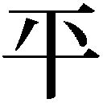凡社
●『グリム童話─その隠されたメッセージ』 マリア・タタール／新曜社
●『世界残酷物語』 コリン・ウィルソン／青土社
●『ヨーロッパ謎と不思議の歴史事典』 桐生操／ＫＫベストセラーズ
●『ハーメルンのふえふき─ドイツの民話』 小澤俊夫／偕成社
●『全国昔話記録』 柳田国男編／三省堂
●筑摩版現代日本文学大系43『芥川龍之介集』 芥川龍之介／筑摩書房
●『つるのおんがえし』 西本鶏介／集英社
●『童話と心の深層』 森省二・橋本和明・森恭子／創元社
●『昔話にはウラがある』 ひろさちや／新潮社
●『はじまりコレクションIII』 チャールズ・パナティ／日本実業出版社
※本書は、小社より刊行された『本当は恐い！ 世界名作童話』（２００６年）を再編集、大幅加筆修正したものに、一部新規の書き下しを加えたものです。
本当は恐い！ 世界名作童話 禁断のメッセージ［電子書籍版］
発行日 ２０１５年３月１日 発行
編 者 深層心理研究会
イラスト 久保田晃司
装 丁 岩田伸昭
発行者 後藤明信
発行所 株式会社竹書房
〒１０２－００７２
東京都千代田区飯田橋２－７－３
ＴＥＬ ０３－３２６４－１５７６
データ加工 有限会社ワイズネット
©2015 TAKESHOBO
本書の一部あるいは全部を著作権者および株式会社竹書房に無断で複写・複製すること、および放送・上演・公衆送信（ホームページ上への掲載を含む）などは、法律で認められた場合を除き著作権の侵害となります。